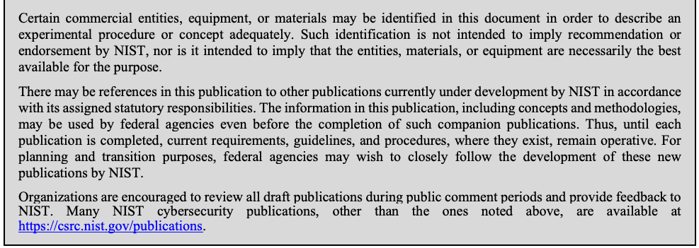
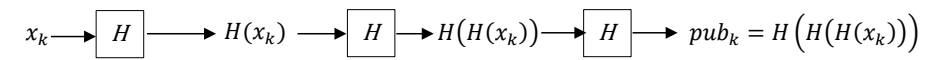
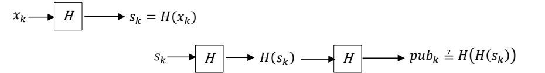
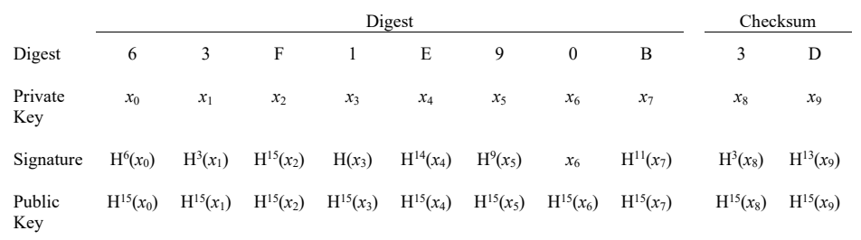

NIST SP 800-208 日本語訳
英語タイトル : Recommendation for Stateful Hash-Based Signature Schemes日本語タイトル : ステートフルハッシュベース署名方式に関する勧告
公開日 : 2020-10-29
原文URL : https://csrc.nist.gov/pubs/sp/800/208/final
翻訳編集 : 自動生成（有志による非公式の日本語訳）, 原文取得日 : 2026-09-27, 訳文 : 491 / 557 ブロック
[要約] SP 800-208 は、デジタル署名の生成に使える2つの状態付きハッシュベース署名（HBS）方式、LMS と XMSS、およびそのマルチツリー版である HSS と XMSS^MT を規定する勧告です。FIPS 186 を補足する署名方式で、鍵の状態管理の重要性、一回限り署名方式や Merkle 木などの総論、各方式のパラメータセットと仕様を示します。安全性は基礎となるハッシュ関数に依存し、大規模量子コンピュータの実現後もハッシュ関数の安全性は破られないと考えられていますが、一回限り鍵の再利用防止に細心の注意が必要です。
NIST Special Publication 800-208
NIST特別刊行物800-208
Recommendation for Stateful Hash-Based Signature Schemes
状態付きハッシュベース署名方式に関する勧告
David A. Cooper Daniel C. Apon Quynh H. Dang Michael S. Davidson Morris J. Dworkin Carl A. Miller
David A. Cooper、Daniel C. Apon、Quynh H. Dang、Michael S. Davidson、Morris J. Dworkin、Carl A. Miller
This publication is available free of charge from: https://doi.org/10.6028/NIST.SP.800-208
本刊行物は、次のURLから無料で入手できる：https://doi.org/10.6028/NIST.SP.800-208
NIST Special Publication 800-208
NIST特別刊行物800-208
Recommendation for Stateful Hash-Based Signature Schemes
状態付きハッシュベース署名方式に関する勧告
David A. Cooper Daniel C. Apon Quynh H. Dang Michael S. Davidson Morris J. Dworkin Carl A. Miller
David A. Cooper、Daniel C. Apon、Quynh H. Dang、Michael S. Davidson、Morris J. Dworkin、Carl A. Miller
Computer Security Division Information Technology Laboratory
コンピュータセキュリティ部門、情報技術研究所
This publication is available free of charge from: https://doi.org/10.6028/NIST.SP.800-208
本刊行物は、次のURLから無料で入手できる：https://doi.org/10.6028/NIST.SP.800-208
October 2020
2020年10月
U.S. Department of Commerce Wilbur L. Ross, Jr., Secretary
米国商務省 Wilbur L. Ross, Jr. 長官
National Institute of Standards and Technology
米国国立標準技術研究所
Walter Copan, NIST Director and Under Secretary of Commerce for Standards and Technology
Walter Copan、NIST所長兼商務省標準技術担当次官
Authority
権限
This publication has been developed by NIST in accordance with its statutory responsibilities under the Federal Information Security Modernization Act (FISMA) of 2014, 44 U.S.C. § 3551 et seq., Public Law (P.L.) 113-283. NIST is responsible for developing information security standards and guidelines, including minimum requirements for federal information systems, but such standards and guidelines shall not apply to national security systems without the express approval of appropriate federal officials exercising policy authority over such systems. This guideline is consistent with the requirements of the Office of Management and Budget (OMB) Circular A-130.
本刊行物は、2014年連邦情報セキュリティ近代化法（FISMA）、合衆国法典第44編第3551条以下、ならびに公法113-283に基づく法定責任に従ってNISTが策定しました。NISTは、連邦情報システムの最低要件を含む情報セキュリティ標準およびガイドラインを策定する責任を負います。ただし、国家安全保障システムに関する政策権限を有する適切な連邦当局者の明示的な承認がない限り、これらの標準およびガイドラインを国家安全保障システムに適用してはなりません。本ガイドラインは、行政管理予算局（OMB）通達A-130の要件に整合しています。
Nothing in this publication should be taken to contradict the standards and guidelines made mandatory and binding on federal agencies by the Secretary of Commerce under statutory authority. Nor should these guidelines be interpreted as altering or superseding the existing authorities of the Secretary of Commerce, Director of the OMB, or any other federal official. This publication may be used by nongovernmental organizations on a voluntary basis and is not subject to copyright in the United States. Attribution would, however, be appreciated by NIST.
本刊行物のいかなる内容も、法定権限に基づき商務長官が連邦機関に義務付け、拘束力を持たせた標準およびガイドラインに反するものと解釈してはなりません。また、本ガイドラインを、商務長官、OMB長官、またはその他の連邦当局者が有する既存の権限を変更または無効化するものと解釈してはなりません。本刊行物は、政府機関以外の組織も任意に利用でき、米国内では著作権の対象ではありません。ただし、NISTへの出典表示を歓迎します。
National Institute of Standards and Technology Special Publication 800-208 Natl. Inst. Stand. Technol. Spec. Publ. 800-208, 59 pages (October 2020) CODEN: NSPUE2
米国国立標準技術研究所 特別刊行物800-208。Natl. Inst. Stand. Technol. Spec. Publ. 800-208、59ページ（2020年10月）。CODEN：NSPUE2
This publication is available free of charge from: https://doi.org/10.6028/NIST.SP.800-208
本刊行物は、次のURLから無料で入手できる：https://doi.org/10.6028/NIST.SP.800-208
Certain commercial entities, equipment, or materials may be identified in this document in order to describe an experimental procedure or concept adequately. Such identification is not intended to imply recommendation or endorsement by NIST, nor is it intended to imply that the entities, materials, or equipment are necessarily the best available for the purpose.
原本PDFの抜粋画像

実験手順または概念を適切に説明するため、本書では特定の商業主体、機器、または材料を特定することがあります。そのような特定は、NISTによる推奨または承認を意味するものではなく、当該主体、材料または機器が目的に対して必ずしも最良であることを意味するものでもありません。
There may be references in this publication to other publications currently under development by NIST in accordance with its assigned statutory responsibilities. The information in this publication, including concepts and methodologies, may be used by federal agencies even before the completion of such companion publications. Thus, until each publication is completed, current requirements, guidelines, and procedures, where they exist, remain operative. For planning and transition purposes, federal agencies may wish to closely follow the development of these new publications by NIST.
本書では、割り当てられた法定責任に従ってNISTが現在策定中の他の刊行物を参照する場合があります。関連刊行物が完成する前であっても、連邦機関は、本書に含まれる情報（概念や方法論を含む）を利用できます。したがって、各刊行物が完成するまでは、現行の要件、ガイドラインおよび手順が存在する場合、それらは引き続き有効です。計画および移行に備え、連邦機関はNISTによる新たな刊行物の策定状況を注意深く追跡すべきです。
Organizations are encouraged to review all draft publications during public comment periods and provide feedback to NIST. Many NIST cybersecurity publications, other than the ones noted above, are available at https://csrc.nist.gov/publications.
組織は、パブリックコメント期間中にすべての草案刊行物を確認し、NISTに意見を提出することが奨励されます。上記のものを除き、多くのNISTサイバーセキュリティ刊行物はhttps://csrc.nist.gov/publicationsで入手できます。
Comments on this publication may be submitted to: National Institute of Standards and Technology Attn: Computer Security Division, Information Technology Laboratory 100 Bureau Drive (Mail Stop 8930) Gaithersburg, MD 20899-8930 Email: pqc-comments@nist.gov
本刊行物への意見は、次の宛先に提出できます。National Institute of Standards and Technology、宛先：Computer Security Division, Information Technology Laboratory、100 Bureau Drive (Mail Stop 8930)、Gaithersburg, MD 20899-8930、電子メール：pqc-comments@nist.gov
All comments are subject to release under the Freedom of Information Act (FOIA).
すべての意見は、情報公開法（FOIA）に基づいて公開される場合があります。
Reports on Computer Systems Technology
コンピュータシステム技術に関する報告書
The Information Technology Laboratory (ITL) at the National Institute of Standards and Technology (NIST) promotes the U.S. economy and public welfare by providing technical leadership for the Nation’s measurement and standards infrastructure. ITL develops tests, test methods, reference data, proof of concept implementations, and technical analyses to advance the development and productive use of information technology. ITL’s responsibilities include the development of management, administrative, technical, and physical standards and guidelines for the cost-effective security and privacy of other than national security-related information in federal information systems. The Special Publication 800-series reports on ITL’s research, guidelines, and outreach efforts in information system security, and its collaborative activities with industry, government, and academic organizations.
米国国立標準技術研究所（NIST）の情報技術研究所（ITL）は、国の計測・標準基盤に技術的リーダーシップを発揮し、米国経済と公共の福祉を促進します。ITLは、情報技術の発展と生産的な利用を推進するため、試験、試験方法、参照データ、概念実証実装、技術分析を開発します。ITLの責任には、連邦情報システムにおける国家安全保障関連以外の情報の費用対効果に優れたセキュリティとプライバシーのため、管理上、事務上、技術上および物理的な標準・ガイドラインを策定することが含まれます。特別刊行物800シリーズは、情報システムセキュリティに関するITLの研究、ガイドラインおよび普及活動、ならびに産業界、政府機関、学術機関との協力活動を報告します。
Abstract
要約
This recommendation specifies two algorithms that can be used to generate a digital signature, both of which are stateful hash-based signature schemes: the Leighton-Micali Signature (LMS) system and the eXtended Merkle Signature Scheme (XMSS), along with their multi-tree variants, the Hierarchical Signature System (HSS) and multi-tree XMSS (\(\mathrm{XMSS}^{\mathit{MT}}\)).
本勧告は、デジタル署名の生成に使用できる2つのアルゴリズムを規定します。いずれも状態付きハッシュベース署名方式であり、Leighton-Micali署名（LMS）システムと拡張Merkle署名方式（XMSS）、ならびにそれぞれのマルチツリー版である階層署名システム（HSS）とマルチツリーXMSS（\(\mathrm{XMSS}^{\mathit{MT}}\)）を扱います。
Keywords
キーワード
cryptography; digital signatures; hash-based signatures; public-key cryptography.
暗号技術；デジタル署名；ハッシュベース署名；公開鍵暗号技術。
Document Conventions
文書で用いる表現
The terms “shall” and “shall not” indicate requirements to be followed strictly in order to conform to the publication and from which no deviation is permitted.
「shall」および「shall not」は、本刊行物に準拠するため厳密に従わなければならず、逸脱が許されない要件を示します。
The terms “should” and “should not” indicate that, among several possibilities, one is recommended as particularly suitable without mentioning or excluding others, that a certain course of action is preferred but not necessarily required, or that (in the negative form) a certain possibility or course of action is discouraged but not prohibited.
「should」および「should not」は、複数の選択肢の中で、他を排除したり言及したりせずに特に適切なものとして推奨されること、必須ではないものの特定の行動方針が望ましいこと、または否定形では特定の可能性や行動方針が禁止されてはいないが推奨されないことを示します。
The terms “may” and “need not” indicate a course of action permissible within the limits of the publication.
「may」および「need not」は、本刊行物の範囲内で許容される行動を示します。
The terms “can” and “cannot” indicate a possibility and capability, whether material, physical, or causal.
「can」および「cannot」は、物質的、物理的または因果的な可能性と能力を示します。
Conformance Testing
適合性試験
Conformance testing for implementations of the functions that are specified in this publication will be conducted within the framework of the Cryptographic Algorithm Validation Program (CAVP) and the Cryptographic Module Validation Program (CMVP). The requirements that apply to these implementations are indicated by the word “shall.” Some of these requirements may be out-of-scope for CAVP or CMVP validation testing and, thus, are the responsibility of entities using, implementing, installing, or configuring applications that incorporate this Recommendation.
本刊行物に規定する機能の実装に対する適合性試験は、暗号アルゴリズム検証プログラム（CAVP）および暗号モジュール検証プログラム（CMVP）の枠組みで実施されます。これらの実装に適用される要件は「shall」という語で示されます。一部の要件はCAVPまたはCMVPの検証試験の対象範囲外となることがあり、その場合、本勧告を組み込んだアプリケーションを使用、実装、インストールまたは構成する主体が当該要件に対する責任を負います。
Patent Disclosure Notice
特許開示に関する通知
NOTICE: The Information Technology Laboratory (ITL) has requested that holders of patent claims whose use may be required for compliance with the guidance or requirements of this publication disclose such patent claims to ITL. However, holders of patents are not obligated to respond to ITL calls for patents and ITL has not undertaken a patent search in order to identify which, if any, patents may apply to this publication.
通知：本刊行物の指針または要件への準拠に必要となる可能性がある特許請求の範囲を保有する者に対し、情報技術研究所（ITL）は当該特許請求の範囲の開示を求めています。ただし、特許権者はITLの特許照会に応じる義務を負わず、またITLは、本刊行物に適用される可能性のある特許があるかどうかを特定するための特許調査を実施していません。
As of the date of publication and following call(s) for the identification of patent claims whose use may be required for compliance with the guidance or requirements of this publication, no such patent claims have been identified to ITL.
公表日現在、本刊行物の指針または要件への準拠に必要となる可能性がある特許請求の範囲を特定するための照会を行った結果、そのような特許請求の範囲はITLに報告されていません。
No representation is made or implied by ITL that licenses are not required to avoid patent infringement in the use of this publication.
本刊行物の利用において特許侵害を回避するためにライセンスが不要であるとの表明を、ITLは明示的にも黙示的にも行いません。
Table of Contents
目次
List of Appendices
付録一覧
List of Figures
図一覧
List of Tables
表一覧
1 Introduction
1 はじめに
This publication supplements FIPS 186 [4] by specifying two additional digital signature schemes, both of which are stateful hash-based signature (HBS) schemes: the Leighton-Micali Signature (LMS) system [2] and the eXtended Merkle Signature Scheme (XMSS) [1], along with their multi-tree variants, the Hierarchical Signature System (HSS) and multi-tree XMSS (\(\mathrm{XMSS}^{\mathit{MT}}\)). All of the digital signature schemes specified in FIPS 186 will be broken if large-scale quantum computers are ever built. The security of the stateful HBS schemes in this publication depends only on the security of the underlying hash functions—in particular, the infeasibility of finding a preimage or a second preimage—and it is believed that the security of hash functions will not be broken by the development of large-scale quantum computers [20].
本刊行物はFIPS 186 [4]を補足し、2つの追加的なデジタル署名方式を規定します。いずれも状態付きハッシュベース署名（HBS）方式であり、Leighton-Micali署名（LMS）システム[2]と拡張Merkle署名方式（XMSS）[1]、ならびにそれらのマルチツリー版である階層署名システム（HSS）およびマルチツリーXMSS（\(\mathrm{XMSS}^{\mathit{MT}}\)）です。大規模量子コンピュータが実現すれば、FIPS 186で規定されるデジタル署名方式はすべて破られます。これに対して、本刊行物の状態付きHBS方式の安全性は、基礎となるハッシュ関数の安全性、特に原像または第2原像を見つけることの計算困難性だけに依存します。大規模量子コンピュータの開発によってハッシュ関数の安全性が破られることはないと考えられています[20]。
This recommendation specifies profiles of LMS, HSS, XMSS, and \(\mathrm{XMSS}^{\mathit{MT}}\) that are appropriate for use by the U.S. Federal Government. This publication approves the use of some but not all of the parameter sets defined in [1] and [2] and also defines some new parameter sets. The approved parameter sets use 192- or 256-bit outputs with either SHA-256 [3] or SHAKE256 [5]. This recommendation requires that key and signature generation be performed in hardware cryptographic modules that do not allow secret keying material to be exported, even in encrypted form.
本勧告は、米国連邦政府による使用に適したLMS、HSS、XMSSおよび\(\mathrm{XMSS}^{\mathit{MT}}\)のプロファイルを規定します。本刊行物では、[1]および[2]で定義されたパラメータセットの一部を承認して使用を認めるほか、新たなパラメータセットも定義します。承認されたパラメータセットは、SHA-256 [3]またはSHAKE256 [5]を用い、192ビットまたは256ビットの出力を使用します。本勧告では、鍵生成と署名生成を、シークレット鍵素材（暗号化された場合も含む）のエクスポートを許可しないハードウェア暗号モジュール内で実施することを必須とします。
1.1 Intended Applications for Stateful HBS Schemes
1.1 状態付きHBS方式の想定用途
NIST is in the process of developing standards for post-quantum secure digital signature schemes [7] that can be used as replacements for the schemes that are specified in [4]. Stateful HBS schemes are not suitable for general use because they require careful state management that is often difficult to assure, as summarized in Section 1.2 and described in detail in [8].
NISTは現在、[4]で規定された方式の置き換えとして使用できる、耐量子デジタル署名方式の標準[7]を策定しています。状態付きHBS方式は、注意深い状態管理を必要とし、その管理の確実性を担保することがしばしば難しいため、一般用途には適しません。この点は1.2節で要約し、[8]で詳しく説明します。
Instead, stateful HBS schemes are primarily intended for applications with the following characteristics: 1) it is necessary to implement a digital signature scheme in the near future; 2) the implementation will have a long lifetime; and 3) it would not be practical to transition to a different digital signature scheme once the implementation has been deployed.
むしろ、状態付きHBS方式は、主に次の特徴を持つアプリケーションを対象とします。1) 近い将来にデジタル署名方式を実装する必要があります。2) 実装の利用期間が長期にわたります。3) 実装を配備した後に別のデジタル署名方式へ移行することが現実的でありません。
An application that may fit this profile is the authentication of firmware updates for constrained devices. Some constrained devices that will be deployed in the near future will be in use for decades. These devices will need to have a secure mechanism for receiving firmware updates, and it may not be practical to change the code for verifying signatures on updates once the devices have been deployed.
このプロファイルに適合し得る用途の一例は、制約のあるデバイスに対するファームウェア更新の認証です。近い将来に配備される一部の制約デバイスは、数十年にわたって使用されます。これらのデバイスにはファームウェア更新を安全に受信する仕組みが必要となる一方、配備後に更新署名を検証するコードを変更することは現実的でない場合があります。
1.2 The Importance of the Proper Maintenance of State
1.2 状態を適切に維持することの重要性
In a stateful HBS scheme, an HBS private key consists of a large set of one-time signature (OTS) private keys. The signer needs to ensure that no individual OTS key is ever used to sign more than one message. If an attacker were able to obtain digital signatures for two different messages that were created using the same OTS key, then it would become computationally feasible for that attacker to forge signatures on arbitrary messages [13]. Therefore, as described in [8], when a stateful HBS scheme is implemented, extreme care needs to be taken in order to ensure that no OTS key is ever reused.
状態付きHBS方式では、HBS秘密鍵は多数の一回限り署名（OTS）秘密鍵から成ります。署名者は、個々のOTS鍵が2つ以上のメッセージへの署名に一度も使われないようにしなければなりません。攻撃者が同じOTS鍵で署名された異なる2つのメッセージのデジタル署名を入手できれば、任意のメッセージに対する署名を偽造することが計算上可能になります[13]。したがって[8]で説明されているように、状態付きHBS方式を実装する際は、OTS鍵が再利用されないよう細心の注意を払う必要があります。
In order to obtain assurance that OTS keys are not reused, the signing process should be performed in a highly controlled environment. As described in [8], there are many ways in which seemingly routine operations could lead to the risk of one-time key reuse. The conformance requirements imposed in Section 8.1 on cryptographic modules that implement stateful HBS schemes are intended to help prevent one-time key reuse.
OTS鍵が再利用されないことを保証するため、署名処理は厳格に管理された環境で実施すべきです。[8]で説明されているとおり、一見通常の操作に思えるものでも、一回限り鍵を再利用するリスクにつながる場合が数多くあります。状態付きHBS方式を実装する暗号モジュールに対して8.1節で課される適合要件は、一回限り鍵の再利用防止を支援することを意図しています。
1.3 Outline of Text
1.3 本文の構成
The remainder of this document is divided into the following sections and appendices:
本書の残りは、次の各節および付録で構成されます。
•Section 2, Glossary of Terms, Acronyms, and Mathematical Symbols, defines the terms, acronyms, and mathematical symbols used in this document. This section is informative.
•第2節「用語、略語および数学記号の用語集」では、本書で使用する用語、略語および数学記号を定義します。この節は参考情報です。
•Section 3, General Discussion, gives a conceptual explanation of the elements used in stateful hash-based signature schemes (including hash chains, Merkle trees, and hash prefixes). This section may be used as either a high-level overview of stateful hash-based signature schemes or as an introduction to the detailed descriptions of LMS and XMSS provided in [1] and [2]. This section is informative.
•第3節「総論」では、状態付きハッシュベース署名方式で用いられる要素（ハッシュ連鎖、Merkle木、ハッシュ接頭辞など）を概念的に説明します。この節は、状態付きハッシュベース署名方式の概要として、または[1]および[2]に記載されたLMSとXMSSの詳細説明への導入として利用できます。この節は参考情報です。
•Section 4, Leighton-Micali Signatures (LMS) Parameter Sets, describes the parameter sets that are approved for use by this Special Publication with LMS and HSS.
•第4節「Leighton-Micali署名（LMS）のパラメータセット」では、本特別刊行物がLMSおよびHSSでの使用を承認するパラメータセットについて説明します。
• Section 5, eXtended Merkle Signature Scheme (XMSS) Parameter Sets, describes the parameter sets that are approved for use by this Special Publication with XMSS and \(\mathrm{XMSS}^{\mathit{MT}}\).
• 第5節「拡張Merkle署名方式（XMSS）のパラメータセット」では、本特別刊行物がXMSSおよび\(\mathrm{XMSS}^{\mathit{MT}}\)での使用を承認するパラメータセットについて説明します。
•Section 6, Random Number Generation for Keys and Signatures, states how the random data used in XMSS and LMS must be generated.
•第6節「鍵および署名のための乱数生成」では、XMSSおよびLMSで使用する乱数データをどのように生成しなければならないかを示します。
• Section 7, Distributed Multi-Tree Hash-Based Signatures, provides recommendations for distributing the implementation of a single HSS or \(\mathrm{XMSS}^{\mathit{MT}}\) instance over multiple cryptographic modules.
• 第7節「分散マルチツリーハッシュベース署名」では、単一のHSSまたは\(\mathrm{XMSS}^{\mathit{MT}}\)インスタンスの実装を複数の暗号モジュールに分散するための推奨事項を示します。
•Section 8, Conformance, specifies requirements for cryptographic algorithm and module validation that are specific to modules that implement the algorithms in this document.
•第8節「適合性」では、本書に記載するアルゴリズムを実装するモジュールに固有の、暗号アルゴリズムおよびモジュールの検証要件を規定します。
•Section 9, Security Considerations, enumerates security risks in various scenarios for stateful HBS schemes (with a focus on the problem of key reuse) and describes steps that should be taken to maximize the security of an implementation. This section is informative.
•第9節「セキュリティに関する考慮事項」では、状態付きHBS方式におけるさまざまなシナリオのセキュリティリスク（特に鍵再利用の問題）を列挙し、実装のセキュリティを最大限に高めるために講じるべき措置を説明します。この節は参考情報です。
•Appendix A, LMS XDR Syntax Additions, describes additions that are required for the External Data Representation (XDR) syntax for LMS in order to support the new parameter sets specified in this document.
•付録A「LMSのXDR構文の追加」では、本書で規定する新しいパラメータセットをサポートするためにLMSの外部データ表現（XDR）構文へ加える必要がある項目を説明します。
• Appendix B, XMSS XDR Syntax Additions, describes additions that are required for the XDR syntax for XMSS and \(\mathrm{XMSS}^{\mathit{MT}}\) in order to support the new parameter sets specified in this document.
• 付録B「XMSSのXDR構文の追加」では、本書で規定する新しいパラメータセットをサポートするためにXMSSおよび\(\mathrm{XMSS}^{\mathit{MT}}\)のXDR構文へ加える必要がある項目を説明します。
•Appendix C, Provable Security Analysis, provides information about the security proofs that are available for LMS and XMSS. This section is informative.
•付録C「証明可能安全性の解析」では、LMSおよびXMSSについて利用可能な安全性証明に関する情報を示します。この節は参考情報です。
2 Glossary of Terms, Acronyms, and Mathematical Symbols
2 用語、略語、および数学記号の用語集
2.1 Terms and Definitions
2.1 用語と定義
approved — FIPS-approved or NIST-recommended. An algorithm or technique that is either 1) specified in a FIPS or NIST Recommendation or 2) adopted in a FIPS or NIST Recommendation and specified either (a) in an appendix to the FIPS or NIST Recommendation or (b) in a document referenced by the FIPS or NIST Recommendation.
approved — 承認済み（FIPS承認またはNIST推奨）。1) FIPSまたはNIST勧告で規定されている、あるいは2) FIPSまたはNIST勧告で採用され、(a) そのFIPSまたはNIST勧告の附属書で規定されているか、(b) そのFIPSまたはNIST勧告が参照する文書で規定されている、アルゴリズムまたは技法。
2.2 Acronyms
2.2 略語
Selected acronyms and abbreviations used in this publication are defined below.
本刊行物で使用する主な略語および短縮表記を以下に定義します。
EEPROM — Electronically erasable programmable read-only memory
EEPROM — 電気的消去可能プログラマブル読み出し専用メモリ（Electronically erasable programmable read-only memory）
EUF-CMA — Existential unforgeability under adaptive chosen message attacks
EUF-CMA — 適応的選択メッセージ攻撃に対する存在的偽造不可能性（Existential unforgeability under adaptive chosen message attacks）
FIPS — Federal Information Processing Standard
FIPS — 連邦情報処理標準（Federal Information Processing Standard）
HBS — Hash-based signature
HBS — ハッシュベース署名（Hash-based signature）
HSS — Hierarchical Signature Scheme
HSS — 階層型署名方式（Hierarchical Signature Scheme）
IRTF — Internet Research Task Force
IRTF — Internet Research Task Force
LM-OTS — Leighton-Micali One-Time Signature
LM-OTS — Leighton-Micali一回限り署名（Leighton-Micali One-Time Signature）
LMS — Leighton-Micali signature
LMS — Leighton-Micali署名（Leighton-Micali signature）
NIST — National Institute of Standards and Technology
NIST — 米国国立標準技術研究所（National Institute of Standards and Technology）
OTS — One-time signature
OTS — 一回限り署名（One-time signature）
QROM — Quantum random oracle model
QROM — 量子ランダムオラクルモデル（Quantum random oracle model）
RAM — Random access memory
RAM — ランダムアクセスメモリ（Random access memory）
RFC — Request for Comments
RFC — Request for Comments
ROM — Random oracle model
ROM — ランダムオラクルモデル（Random oracle model）
SHA — Secure Hash Algorithm
SHA — セキュアハッシュアルゴリズム（Secure Hash Algorithm）
SHAKE — Secure Hash Algorithm KECCAK
SHAKE — セキュアハッシュアルゴリズムKECCAK（Secure Hash Algorithm KECCAK）
SP — Special Publication
SP — 特別刊行物（Special Publication）
VM — Virtual machine
VM — 仮想マシン（Virtual machine）
\(\mathrm{WOTS}^{+}\)
\(\mathrm{WOTS}^{+}\)
\(WOTS^{+}\) — Winternitz One-Time Signature Plus
\(WOTS^{+}\) — Winternitz一回限り署名プラス（Winternitz One-Time Signature Plus）
XDR — External Data Representation
XDR — 外部データ表現（External Data Representation）
XMSS — eXtended Merkle Signature Scheme
XMSS — 拡張Merkle署名方式（eXtended Merkle Signature Scheme）
\(\mathrm{XMSS}^{\mathit{MT}}\)
\(\mathrm{XMSS}^{\mathit{MT}}\)
\(XMSS^{MT}\) — Multi-tree XMSS
\(XMSS^{MT}\) — マルチツリーXMSS（Multi-tree XMSS）
2.3 Mathematical Symbols
2.3 数学記号
| \(\text{SHA-256}(M)\) | SHA-256 hash function as specified in [3]. |
| \(\text{SHA-256/192}(M)\) | \(T_{192}(\text{SHA-256}(M))\), the most significant (i.e., leftmost) 192 bits of the SHA-256 hash of \(M\). |
| \(\text{SHAKE256/256}(M)\) | \(\mathrm{SHAKE256}(M, 256)\), where SHAKE256 is specified in Section 6.2 of [5]. The output length is 256 bits. |
| \(\text{SHAKE256/192}(M)\) | \(\mathrm{SHAKE256}(M, 192)\), where SHAKE256 is specified in Section 6.2 of [5]. The output length is 192 bits. |
| \(T_{192}(X)\) | A truncation function that outputs the most significant (i.e., leftmost) 192 bits of the input bit string \(X\). |
| \(n\) | The number of bytes in the output of a hash function. |
| \(m\) | In LMS, the number of bytes associated with each node of a Merkle tree. |
| \(w\) | 1. In XMSS, the length of a Winternitz chain. A single Winternitz chain uses \(\log_2(w)\) bits from the hash or checksum. 2. In LMS, the number of bits from the hash or checksum used in a single Winternitz chain. The length of a Winternitz chain is \(2^w\). (Note that using a Winternitz parameter of \(w = 4\) in LMS would be comparable to using a parameter of \(w = 16\) in XMSS.) |
| \(p\) | The number of \(n\)-byte string elements in an LM-OTS private key, public key, and signature. |
| \(\mathit{Len}\) | The number of \(n\)-byte string elements in a WOTS+ private key, public key, and signature. |
| \(H\) | In LMS and XMSS, the height of the tree. In \(\mathrm{XMSS}^{\mathit{MT}}\), the total height of the multi-tree (the trees at each level have a height of \(H/D\)). |
| \(\text{SHA-256}(M)\) | [3]に規定されるSHA-256ハッシュ関数。 |
| \(\text{SHA-256/192}(M)\) | \(T_{192}(\text{SHA-256}(M))\)。\(M\)のSHA-256ハッシュの最上位（すなわち左端）192ビット。 |
| \(\text{SHAKE256/256}(M)\) | \(\mathrm{SHAKE256}(M, 256)\)。SHAKE256は[5]の6.2節に規定されます。出力長は256ビットです。 |
| \(\text{SHAKE256/192}(M)\) | \(\mathrm{SHAKE256}(M, 192)\)。SHAKE256は[5]の6.2節に規定されます。出力長は192ビットです。 |
| \(T_{192}(X)\) | 入力ビット列\(X\)の最上位（すなわち左端）192ビットを出力する切り詰め関数。 |
| \(n\) | ハッシュ関数の出力のバイト数。 |
| \(m\) | LMSにおいて、Merkle木の各ノードに対応するバイト数。 |
| \(w\) | 1. XMSSでは、Winternitz連鎖の長さ。1つのWinternitz連鎖は、ハッシュまたはチェックサムから\(\log_2(w)\)ビットを使用します。 2. LMSでは、1つのWinternitz連鎖で使用する、ハッシュまたはチェックサムからのビット数。Winternitz連鎖の長さは\(2^w\)です。（LMSでWinternitzパラメータ\(w = 4\)を使用することは、XMSSでパラメータ\(w = 16\)を使用することに相当する点に注意。） |
| \(p\) | LM-OTSの秘密鍵、公開鍵および署名に含まれる\(n\)バイト文字列要素の数。 |
| \(\mathit{Len}\) | WOTS+の秘密鍵、公開鍵および署名に含まれる\(n\)バイト文字列要素の数。 |
| \(H\) | LMSおよびXMSSでは、木の高さ。\(\mathrm{XMSS}^{\mathit{MT}}\)では、マルチツリー全体の高さ（各階層の木の高さは\(H/D\)である）。 |
| \(D\) | The number of levels of trees in \(\mathrm{XMSS}^{\mathit{MT}}\). |
| \(L\) | The number of levels of trees in HSS. |
| \(I\) | A 16-byte string used in LMS as a key pair identifier. |
| \(C\) | In LMS, the \(n\)-byte randomizer used for randomized message hashing. |
| \(R\) | In XMSS, the \(n\)-byte randomizer used for randomized message hashing. |
| \(\mathit{SK\_PRF}\) | An \(n\)-byte key used to pseudorandomly generate the randomizer \(r\). |
| \(\mathit{S\_XMSS}\) | A secret random value used for pseudorandom key generation in XMSS. |
| \(\mathit{ADRS}\) | A 32-byte data structure used in XMSS when generating prefixes (keys) and bitmasks. |
| \(\mathit{SEED}\) | 1. In XMSS, the public, random, unique identifier for the long-term key. 2. In LMS, a secret random value used for pseudorandom key generation. |
| \(D\) | \(\mathrm{XMSS}^{\mathit{MT}}\)における木の階層数。 |
| \(L\) | HSSにおける木の階層数。 |
| \(I\) | LMSで鍵ペア識別子として使用される16バイト文字列。 |
| \(C\) | LMSにおいて、ランダム化メッセージハッシュに使用される\(n\)バイトのランダマイザ。 |
| \(R\) | XMSSにおいて、ランダム化メッセージハッシュに使用される\(n\)バイトのランダマイザ。 |
| \(\mathit{SK\_PRF}\) | \(n\)バイトの鍵で、ランダマイザ\(r\)を擬似ランダムに生成するために使用されます。 |
| \(\mathit{S\_XMSS}\) | XMSSで擬似ランダム鍵生成に使用される秘密の乱数値。 |
| \(\mathit{ADRS}\) | XMSSでプレフィックス（鍵）およびビットマスクを生成する際に使用される32バイトのデータ構造。 |
| \(\mathit{SEED}\) | 1. XMSSでは、長期鍵に対する公開の、ランダムかつ一意な識別子。 2. LMSでは、擬似ランダム鍵生成に使用される秘密の乱数値。 |
3 General Discussion
3 一般的な説明
At a high level, XMSS and LMS are very similar. They each consist of two components—a one-time signature (OTS) scheme and a method for creating a single, long-term public key from a large set of OTS public keys. A brief explanation of OTS schemes and the method for creating a long-term public key from a large set of OTS public keys can be found in Sections 3 and 4 of [14].
高いレベルでは、XMSSとLMSは非常によく似ています。いずれも、一回限り署名（OTS）方式と、多数のOTS公開鍵から単一の長期公開鍵を作成する方法という、二つの構成要素からなります。OTS方式、および多数のOTS公開鍵から長期公開鍵を作成する方法の簡単な説明は、[14]の3節と4節に記載されています。
3.1 One-Time Signature Systems
3.1 一回限り署名システム
Both LMS and XMSS make use of variants of the Winternitz signature scheme. In the Winternitz signature scheme, the message to be signed is hashed to create a digest; the digest is encoded as a base \(b\) number;1 and then each digit of the digest is signed using a hash chain, as follows.
LMSとXMSSはいずれも、Winternitz署名方式の派生形を利用します。Winternitz署名方式では、署名対象のメッセージをハッシュしてダイジェストを作成し、そのダイジェストを\(b\)進数として符号化します。1次に、以下のようにハッシュ連鎖を用いてダイジェストの各桁に署名します。
A hash chain is created by first randomly generating a secret value, \(x\), which is the private key. The size of \(x\) should generally correspond to the targeted security strength of the scheme. So, for the parameter sets approved by this recommendation, \(x\) will be either 192 or 256 bits in length. The public key, \(\mathit{pub}\), is then created by applying the hash function, \(H\), to the secret \(b - 1\) times, \(H^{b-1}(x)\). Figure 1 shows an example of a hash chain for the \(k\)th digit of a digest where \(b\) is 4.
ハッシュ連鎖は、まず秘密値\(x\)をランダムに生成して作成します。これが秘密鍵です。\(x\)のサイズは通常、方式が目標とするセキュリティ強度に対応させるべきです。したがって、本勧告で承認するパラメータセットでは、\(x\)の長さは192ビットまたは256ビットのいずれかとなります。次に、公開鍵\(\mathit{pub}\)を、ハッシュ関数\(H\)を秘密値に\(b - 1\)回適用して作成します。すなわち\(H^{b-1}(x)\)です。図1は、ダイジェストの第\(k\)桁に対するハッシュ連鎖の例を、\(b\)が4の場合について示します。

図1：b = 4の場合のWinternitz連鎖の例。3つのハッシュの箱からなる連鎖で、x_k →［H］→ H(x_k) →［H］→ H(H(x_k)) →［H］→ pub_k = H(H(H(x_k))) と進む。
Figure 1: A sample Winternitz chain for \(b = 4\)
図1：\(b = 4\)の場合のWinternitz連鎖の例
The \(k\)th digit of the digest, \(N_k\), is signed by applying the hash function, \(H\), to the private key \(N_k\) times, \(H^{N_k}(x_k)\). Figure 2 shows an example of a signature for the \(k\)th digit of the digest created using the Winternitz chain in Figure 1 when \(N_k\) is 1. As shown, the signature is \(s_k = H^1(x_k) = H(x_k)\). Figure 2 also shows how the signature, \(s_k\), can be verified. The hash function, \(H\), is applied to \(s_k\) twice, and if the resulting value is the same as the public key, \(\mathit{pub}_k\), then the signature is valid. In general, the signature for the \(k\)th digit of a digest can be verified by checking that \(\mathit{pub}_k = H^{b-1-N_k}(s_k)\).
ダイジェストの第\(k\)桁\(N_k\)には、ハッシュ関数\(H\)を秘密鍵に\(N_k\)回適用して署名します。すなわち\(H^{N_k}(x_k)\)です。図2は、ダイジェストの第\(k\)桁に対する署名の例として、\(N_k\)が1の場合に図1のWinternitz連鎖を用いて作成したものを示します。図に示すとおり、署名は\(s_k = H^1(x_k) = H(x_k)\)です。図2は、署名\(s_k\)の検証方法も示します。ハッシュ関数\(H\)を\(s_k\)に2回適用し、その結果の値が公開鍵\(\mathit{pub}_k\)と同じであれば、署名は有効です。一般に、ダイジェストの第\(k\)桁に対する署名は、\(\mathit{pub}_k = H^{b-1-N_k}(s_k)\)であることを確認して検証できます。

図2：Winternitz署名の生成および検証の例。上段（署名生成）は x_k →［H］→ s_k = H(x_k)。下段（検証）は s_k →［H］→ H(s_k) →［H］→ pub_k ≟ H(H(s_k)) である。
Figure 2: A sample Winternitz signature generation and verification
図2：Winternitz署名の生成および検証の例
As noted in [14], simply signing the individual digits of the digest is not sufficient because an attacker would be able to generate valid signatures for other message digests. For example, given \(s_k = H(x_k)\), as in Figure 2, an attacker would be able to generate a signature for a message digest with a \(k\)th digit of 2 by applying \(H\) to \(s_k\) once or to a message digest with a \(k\)th digit of 3 by applying \(H\) to \(s_k\) twice. An attacker could not, however, generate a signature for a message digest with a \(k\)th digit of 0 as this would require finding some value \(y\) such that \(H(y) = s_k\), which would not be feasible as long as \(H\) is preimage-resistant.
[14]で述べられているとおり、ダイジェストの個々の桁に署名するだけでは不十分です。攻撃者が他のメッセージダイジェストに対する有効な署名を生成できてしまうためです。例えば、図2のように\(s_k = H(x_k)\)が与えられた場合、攻撃者は、第\(k\)桁が2のメッセージダイジェストに対する署名を、\(H\)を\(s_k\)に1回適用することで、第\(k\)桁が3のメッセージダイジェストに対する署名を、\(H\)を\(s_k\)に2回適用することで生成できます。一方、攻撃者は、第\(k\)桁が0のメッセージダイジェストに対する署名は生成できません。そのためには、値\(y\)であって\(H(y) = s_k\)となるものを見つける必要があるが、\(H\)が原像計算困難性を持つ限り、それは実現不可能だからです。
1 The base \(b\) is referred to as the Winternitz parameter in this publication. RFC 8391 [1] specifies that the Winternitz parameter, denoted by \(w\) there, may be either 4 or 16 but only specifies parameter sets for \(w = 16\). In RFC 8554 [2], the term “Winternitz parameter,” also denoted by \(w\), refers to a different but related quantity: the number of bits of the digest that is encoded by \(b\). RFC 8554 specifies that \(w\) may be 1, 2, 4, or 8, which corresponds to a \(b\) of 2, 4, 16, or 256, respectively.
1 本刊行物では、基数\(b\)をWinternitzパラメータと呼びます。RFC 8391 [1]は、同文書で\(w\)と表記するWinternitzパラメータを4または16のいずれかとしてよいと規定するが、パラメータセットは\(w = 16\)についてのみ規定します。RFC 8554 [2]では、同じく\(w\)と表記する「Winternitzパラメータ」という用語は、これとは異なるが関連する量、すなわち\(b\)によって符号化されるダイジェストのビット数を指します。RFC 8554は、\(w\)を1、2、4または8としてよいと規定しており、これらはそれぞれ\(b\)が2、4、16または256であることに対応します。
In order to protect against the above attack, the Winternitz signature scheme computes a checksum of the message digest and signs the checksum along with the digest. For an \(n\)-digit message digest, the checksum is computed as \(\sum_{k=0}^{n-1}(b-1-N_k)\). The checksum is designed so that the value is non-negative, and any increase in a digit in the message digest will result in the checksum becoming smaller. This prevents an attacker from creating an effective forgery from a message signature since the attacker can only increase values within the message digest and cannot decrease values within the checksum.
上記の攻撃を防ぐため、Winternitz署名方式ではメッセージダイジェストのチェックサムを計算し、ダイジェストとともに署名します。\(n\)桁のメッセージダイジェストの場合、チェックサムは\(\sum_{k=0}^{n-1}(b-1-N_k)\)で計算します。チェックサムは非負となるよう設計されており、メッセージダイジェストの桁の値を増やすとチェックサムは小さくなります。この仕組みにより、攻撃者がメッセージ署名を有効に偽造することを防ぎます。攻撃者はメッセージダイジェスト内の値を増やすことしかできず、チェックサム内の値を減らせないためです。
Figure 3 shows an example of a signature for a 32-bit message digest using \(b = 16\). The digest is written as eight hexadecimal digits, and a separate hash chain is used to sign each digit with each hash chain having its own private key.2
図3は、\(b = 16\)を用いて32ビットのメッセージダイジェストに署名する例を示します。ダイジェストは8桁の16進数で表され、各桁の署名には個別のハッシュ連鎖を用います。各ハッシュ連鎖には、それぞれ専用の秘密鍵があります。2

図3：Winternitz署名の例。10列の表で、最初の8列が「Digest」（ダイジェスト）、最後の2列が「Checksum」（チェックサム）にまとめられている。「Digest」の行は6、3、F、1、E、9、0、B、チェックサムは3、D。「Private Key」（秘密鍵）の行はx0〜x9。「Signature」（署名）の行はH^6(x0)、H^3(x1)、H^15(x2)、H(x3)、H^14(x4)、H^9(x5)、x6、H^11(x7)、チェックサムはH^3(x8)、H^13(x9)。「Public Key」（公開鍵）の行はH^15(x0)〜H^15(x9)である。
Figure 3: A sample Winternitz signature
図3：Winternitz署名の例
3.2 Merkle Trees
3.2 Merkle木
While a single, long-term public key could be created from a large set of OTS public keys by simply concatenating the keys together, the resulting public key would be unacceptably large. XMSS and LMS instead use Merkle hash trees [18], which allow for the long-term public key to be very short in exchange for requiring a small amount of additional information to be provided with each OTS key. To create a hash tree, the OTS public keys are hashed once to form the leaves of the tree, and these hashes are then hashed together in pairs to form the next level up. Those hash values are then hashed together in pairs, the resulting hash values are hashed together, and so on until all of the public keys have been used to generate a single hash value (the root of the tree), which will be used as the long-term public key.
多数のOTS公開鍵から単一の長期公開鍵を作成するには、それらの鍵を単純に連結する方法もあるが、その場合、得られる公開鍵は許容できないほど大きくなります。XMSSとLMSは代わりにMerkleハッシュ木[18]を使用します。これにより、各OTS鍵に少量の追加情報を添える必要はあるが、長期公開鍵を非常に短くできます。ハッシュ木を作成するには、まずOTS公開鍵をそれぞれ1回ハッシュして木の葉を形成し、次にそれらのハッシュ値を2つずつ組にしてハッシュし、一つ上の階層を形成します。さらにそれらのハッシュ値を2つずつ組にしてハッシュし、得られたハッシュ値をまた組にしてハッシュするという操作を、すべての公開鍵が単一のハッシュ値（木の根）の生成に使われるまで繰り返します。この根が長期公開鍵として使用されます。
![Figure 4: A Merkle Hash Tree. A binary tree of four levels. The bottom row has eight leaves: h0 = H(k0), h1 = H(k1), h2 = H(k2), h3 = H(k3), h4 = H(k4), h5 = H(k5), h6 = H(k6), h7 = H(k7). Above them, lines connect pairs of leaves to h01 = H(h0 ‖ h1), h23 = H(h2 ‖ h3), h45 = H(h4 ‖ h5) and h67 = H(h6 ‖ h7). The next level has h0−3 = H(h01 ‖ h23) and h4−7 = H(h45 ‖ h67), and the root at the top is h0−7 = H(h0−3 ‖ h4−7). The nodes h3 = H(k3), h01 = H(h0 ‖ h1) and h4−7 = H(h45 ‖ h67) are circled, and k2 in h2 = H(k2) is enclosed in a small box.](assets/208/p0018-figure-01.png)
図4：Merkleハッシュ木。4階層の二分木である。最下段には8個の葉 h0 = H(k0)、h1 = H(k1)、h2 = H(k2)、h3 = H(k3)、h4 = H(k4)、h5 = H(k5)、h6 = H(k6)、h7 = H(k7) が並ぶ。その上で、葉は2つずつ線で h01 = H(h0 ‖ h1)、h23 = H(h2 ‖ h3)、h45 = H(h4 ‖ h5)、h67 = H(h6 ‖ h7) に結ばれる。次の段は h0−3 = H(h01 ‖ h23) と h4−7 = H(h45 ‖ h67) で、最上部の根は h0−7 = H(h0−3 ‖ h4−7) である。h3 = H(k3)、h01 = H(h0 ‖ h1)、h4−7 = H(h45 ‖ h67) の各ノードは楕円で囲まれ、h2 = H(k2) の式中の k2 は小さな四角で囲まれている。
Figure 4: A Merkle Hash Tree
図4：Merkleハッシュ木
Figure 4 depicts a hash tree that contains eight OTS public keys (\(k_0 \ldots k_7\)). The eight keys are each hashed to form the leaves of the tree (\(h_0 \ldots h_7\)), and the eight leaf values are hashed in pairs to create the next level up in the tree (\(h_{01}\), \(h_{23}\), \(h_{45}\), \(h_{67}\)). These four hash values are again hashed in pairs to create \(h_{0-3}\) and \(h_{4-7}\), which are hashed together to create the long-term public key, \(h_{0-7}\). In order for an entity that had already received \(h_{0-7}\) in a secure manner to verify a message signed using \(k_2\), the signer would need to provide \(h_3\), \(h_{01}\), and \(h_{4-7}\) in addition to \(k_2\). The verifier would compute \(h'_2 = H(k_2)\), \(h'_{23} = H(h'_2 \parallel h_3)\), \(h'_{0-3} = H(h_{01} \parallel h'_{23})\), and \(h'_{0-7} = H(h'_{0-3} \parallel h_{4-7})\). If \(h'_{0-7}\) is the same as \(h_{0-7}\), then \(k_2\) may be used to verify the message signature.
図4は、8個のOTS公開鍵（\(k_0 \ldots k_7\)）を含むハッシュ木を示します。8個の鍵をそれぞれハッシュして木の葉（\(h_0 \ldots h_7\)）を作り、8個の葉の値をペアごとにハッシュして木の一つ上の階層（\(h_{01}\)、\(h_{23}\)、\(h_{45}\)、\(h_{67}\)）を作ります。これら4つのハッシュ値を再びペアごとにハッシュして\(h_{0-3}\)と\(h_{4-7}\)を作り、さらに両者をハッシュして長期公開鍵\(h_{0-7}\)を得ます。\(h_{0-7}\)を安全な方法で既に受け取った主体が、\(k_2\)で署名されたメッセージを検証するには、署名者は\(h_3\)、\(h_{01}\)、\(h_{4-7}\)を\(k_2\)に加えて提示する必要があります。検証者は\(h'_2 = H(k_2)\)、\(h'_{23} = H(h'_2 \parallel h_3)\)、\(h'_{0-3} = H(h_{01} \parallel h'_{23})\)、\(h'_{0-7} = H(h'_{0-3} \parallel h_{4-7})\)を計算します。\(h'_{0-7}\)が\(h_{0-7}\)と等しければ、\(k_2\)を用いてメッセージ署名を検証できます。
3.3 Two-Level Trees
3.3 二階層木
Both [1] and [2] define single tree and multi-tree variants of their signature schemes. In an instance that involves two levels of trees, as shown in Figure 5, the OTS keys that form the leaves of the top-level tree sign the roots of the trees at the bottom level, and the OTS keys that form the leaves of the bottom-level trees are used to sign the messages. The root of the top-level tree is the long-term public key for the signature scheme.3
[1]と[2]はいずれも、署名方式の単一木の変種とマルチツリーの変種を定義しています。図5に示すように二階層の木を含むインスタンスでは、最上位の木の葉を構成するOTS鍵が下位の木の根に署名し、下位の木の葉を構成するOTS鍵がメッセージの署名に使われます。最上位の木の根が、その署名方式の長期公開鍵となります。3
3 While this section only describes two-level trees, HSS allows for up to eight levels of trees, and \(\mathrm{XMSS}^{MT}\) allows for up to 12 levels of trees.
3 この節では2階層の木だけを説明するが、HSSは最大8階層の木を、\(\mathrm{XMSS}^{MT}\)は最大12階層の木を使用できます。
As described in Section 7, the use of two levels of trees can make it easier to distribute OTS keys across multiple cryptographic modules in order to protect against private key loss. A set of OTS keys can be created in one cryptographic module, and the root of the Merkle tree formed from these keys can be published as the public key for the signature scheme. OTS keys can then be created on multiple other cryptographic modules with a separate Merkle tree created for the OTS keys of each of the other cryptographic modules, and a different OTS key from the first cryptographic module can be used to sign each of the roots of the other cryptographic modules.
7節で説明するように、2階層の木を使うと、秘密鍵の喪失を防ぐ目的で、複数の暗号モジュールにOTS鍵を分散しやすくなります。1つの暗号モジュールでOTS鍵の集合を作成し、その鍵から構成したMerkle木の根を署名方式の公開鍵として公開できます。その後、他の複数の暗号モジュールでもOTS鍵を作成し、それぞれのモジュールのOTS鍵について個別のMerkle木を作ります。最初の暗号モジュールにある別々のOTS鍵を使って、各モジュールのMerkle木の根に署名できます。
root a
根 rootₐ
ka,0 ka,1 ka,2 ka,3
kₐ,₀ kₐ,₁ kₐ,₂ kₐ,₃
rootb,1
根 root_b,1
rootb,3
根 root_b,3
rootb,0
根 root_b,0
rootb,2
根 root_b,2
kb,0 kb,1 kb,2 kb,3 kb,4 kb,5 kb,6 kb,7 kb,8 kb,9 kb,10 kb,11 kb,12 kb,13 kb,14 kb,15
k_b,0 k_b,1 k_b,2 k_b,3 k_b,4 k_b,5 k_b,6 k_b,7 k_b,8 k_b,9 k_b,10 k_b,11 k_b,12 k_b,13 k_b,14 k_b,15
Figure 5: A two-Level Merkle tree
図5：2階層のMerkle木
While there are benefits in the use of a two-level tree, it results in larger signatures and slower signature verification as each message signature will need to include two OTS signatures. For example, if a message were signed using OTS key \(k_{b,6}\) in Figure 5, the signature would need to include the signature on \(\mathit{root}_{b,1}\) using \(k_{a,1}\) in addition to the signature on the message using \(k_{b,6}\).
2階層の木には利点がある一方、署名が大きくなり、各メッセージ署名に2つのOTS署名を含める必要があるため、署名検証も遅くなります。たとえば、図5のOTS鍵 \(k_{b,6}\) でメッセージに署名する場合、署名には \(\mathit{root}_{b,1}\) に対する \(k_{a,1}\) による署名を、メッセージに対する \(k_{b,6}\) による署名に加えて含める必要があります。
3.4 Prefixes and Bitmasks
3.4 接頭辞とビットマスク
In order to strengthen the security of the schemes in both XMSS and LMS, a prefix is prepended whenever a value is hashed. For example, when computing the public key for a Winternitz signature from the private key in LMS as described in Section 3.1, rather than just computing \(\mathit{pub}_k = H^3(x_k) = H\left(H\left(H(x_k)\right)\right)\), the public key is computed as \(\mathit{pub}_k = H\left(p_3 \parallel H\left(p_2 \parallel H(p_1 \parallel x_k)\right)\right)\), where \(p_1\), \(p_2\), and \(p_3\) are each different prefix values. The prefix is formed by concatenating together various pieces of information, including a unique identifier for the long-term public key and an indicator of the purpose of the hash (e.g., Winternitz chain or Merkle tree). If the hash is part of a Winternitz chain, then the prefix also includes the number of the OTS key, which digit of the digest or checksum is being signed, and where in the chain the hash appears. The goal is to ensure that every single hash that is computed within the LMS scheme uses a different prefix.
XMSSとLMSの方式の安全性を強化するため、値をハッシュするたびに接頭辞を先頭に付けます。たとえば、3.1節で説明したLMSのWinternitz署名について、秘密鍵から公開鍵を計算する際、単に \(\mathit{pub}_k = H^3(x_k) = H\left(H\left(H(x_k)\right)\right)\) と計算するのではなく、公開鍵を \(\mathit{pub}_k = H\left(p_3 \parallel H\left(p_2 \parallel H(p_1 \parallel x_k)\right)\right)\) と計算します。ここで \(p_1\)、\(p_2\)、\(p_3\) はそれぞれ異なる接頭辞値です。接頭辞は、長期公開鍵の一意な識別子や、ハッシュの目的（Winternitz連鎖やMerkle木など）を示す情報など、複数の情報を連結して作ります。ハッシュがWinternitz連鎖の一部である場合、接頭辞にはOTS鍵の番号、署名対象となるダイジェストまたはチェックサムの桁、連鎖内での位置も含まれます。目的は、LMS方式内で計算される個々のハッシュのすべてで、それぞれ異なる接頭辞を使うことです。
XMSS generates its prefixes in a similar way. The information described above is used to form an address, which uniquely identifies where a particular hash invocation occurs within the scheme. This address is then hashed along with a unique identifier (SEED) for the long-term public key to create the prefix.
XMSSも同様の方法で接頭辞を生成します。上記の情報を使ってアドレスを作成し、方式内で特定のハッシュ呼び出しが行われる位置を一意に識別します。このアドレスを長期公開鍵の一意な識別子（SEED）とともにハッシュし、接頭辞を作ります。
Unlike LMS, XMSS also uses bitmasks. Similar to the generation of the prefix, a slightly different address is hashed along with the SEED to create a bitmask, which is exclusive-ORed with the value to be hashed (the input). The prefix and masked input value are concatenated as specified in [1] to form the input to the hash function.4 Figure 6 illustrates an example of this computation when the input is a Winternitz chaining value. In [1], the hash function is referred to as \(\mathrm{H}\), \(\mathrm{H\_msg}\), \(\mathrm{F}\), or \(\mathrm{PRF}\), depending on where it is being used. However, in each case, it is the same function, just with a different prefix prepended in order to ensure separation between the uses.
LMSとは異なり、XMSSはビットマスクも用います。接頭辞の生成と同様に、少し異なるアドレスをSEEDとともにハッシュしてビットマスクを作り、ハッシュ対象の値（入力）との排他的論理和を取ります。[1]の規定に従って、接頭辞とマスク適用後の入力値を連結し、ハッシュ関数への入力とします。4 図6は、入力がWinternitz連鎖の値である場合の計算例を示します。[1]では、ハッシュ関数を使用箇所に応じて \(\mathrm{H}\)、\(\mathrm{H\_msg}\)、\(\mathrm{F}\)、\(\mathrm{PRF}\) と呼びます。しかし、いずれの場合も同一の関数であり、用途間の分離を確実にするために異なる接頭辞を前置しているだけです。
![Figure 6: XMSS hash computation with prefix and bitmask. “3 || SEED || ADDR” has an arrow to a box H, whose output arrow points down to “0 || prefix || bitmasked input”. “3 || SEED || ADDR'” has an arrow to a second box H, whose output arrow points to “bitmask”; “bitmask” has an arrow into an exclusive-OR symbol (⊕). A line from “input” at the lower left also enters the exclusive-OR symbol from below. An arrow goes up from the exclusive-OR symbol to the “bitmasked input” part of “0 || prefix || bitmasked input”, which has an arrow to a third box H, whose arrow points to “output”.](assets/208/p0020-figure-02.png)
図6：プレフィックスとビットマスクを用いたXMSSのハッシュ計算。「3 || SEED || ADDR」から矢印がHの箱へ向かい、その出力の矢印が下の「0 || prefix || bitmasked input」（0 || 接頭辞 || ビットマスク適用後の入力）へ向かう。「3 || SEED || ADDR'」から矢印が2つ目のHの箱へ向かい、その出力の矢印が「bitmask」（ビットマスク）へ向かう。「bitmask」から矢印が排他的論理和の記号（⊕）に入る。左下の「input」（入力）からの線も、下から排他的論理和の記号に入る。排他的論理和の記号からは上向きの矢印が「0 || prefix || bitmasked input」の「bitmasked input」の部分へ向かい、そこから矢印が3つ目のHの箱へ、さらに「output」（出力）へ向かう。
Figure 6: XMSS hash computation with prefix and bitmask
図6：プレフィックスとビットマスクを用いたXMSSのハッシュ計算
4 Leighton-Micali Signatures (LMS) Parameter Sets
4 Leighton-Micali署名（LMS）のパラメーターセット
The LMS and HSS algorithms are described in RFC 8554 [2]. This Special Publication approves the use of LMS and HSS with four different hash functions: SHA-256, SHA-256/192, SHAKE256/256, and SHAKE256/192 (see Section 2.3). The parameter sets that use SHA-256 are defined in RFC 8554 [2]. The parameter sets that use SHA-256/192, SHAKE256/256, and SHAKE256/192 are defined in this publication.
LMSおよびHSSアルゴリズムはRFC 8554[2]で説明されています。本書は、SHA-256、SHA-256/192、SHAKE256/256、SHAKE256/192の4種類のハッシュ関数を用いたLMSおよびHSSの使用を承認します（2.3節参照）。SHA-256を用いるパラメーターセットはRFC 8554[2]で定義されています。SHA-256/192、SHAKE256/256、SHAKE256/192を用いるパラメーターセットは本書で定義します。
When generating a key pair for an LMS instance, each LM-OTS key in the system shall use the same parameter set, and the hash function used for the LMS system shall be the same as the hash function used in the LM-OTS keys. The height of the tree (\(h\)) shall be 5, 10, 15, 20, or 25.
LMSインスタンスの鍵ペアを生成する際、システム内の各LM-OTS鍵は同じパラメータセットを使用しなければならず、LMSシステムで使用するハッシュ関数はLM-OTS鍵で使用するハッシュ関数と同じでなければなりません。木の高さ（\(h\)）は5、10、15、20、または25でなければなりません。
When generating a key pair for an HSS instance, the requirements specified in the previous paragraph apply to each LMS tree in the instance. If the HSS instance has more than one level, then the hash function used for the tree at level 0 shall be used for every LMS tree at every other level. For each level, the same LMS and LM-OTS parameter sets shall be used for every LMS tree at that level. Different LMS and LM-OTS parameter sets may be used at different levels, as long as all chosen parameter sets use the same hash function.
HSSインスタンスの鍵ペアを生成する際は、前段落の要件をインスタンス内の各LMS木に適用します。HSSインスタンスが複数の階層を持つ場合、階層0の木で用いるハッシュ関数を、他のすべての階層のLMS木でも用いなければなりません。各階層では、その階層内のすべてのLMS木に同じLMSおよびLM-OTSパラメーターセットを使用しなければなりません。選択したすべてのパラメーターセットが同じハッシュ関数を用いる限り、階層ごとに異なるLMSおよびLM-OTSパラメーターセットを使用してもよいです。
The LMS and LM-OTS parameter sets that are approved for use by this Special Publication are specified in tables in Sections 4.1 through 4.4. The parameters \(n\), \(w\), \(p\), \(m\), and \(h\) specified in the tables are defined in Sections 4.1 and 5.1 of [2].
本特別刊行物で使用が承認されるLMSおよびLM-OTSのパラメータセットを、4.1節から4.4節の表に示します。表に示すパラメータ \(n\)、\(w\)、\(p\)、\(m\)、\(h\) は[2]の4.1節および5.1節で定義されています。
Extensions to the XDR syntax in Section 3.3 of [2] needed to support the parameter sets defined in Sections 4.2 through 4.4 of this document are specified in Appendix A. The numeric identifiers for these parameter sets are marked as “TBD” since they had not yet been assigned at the time this document was published. Once they are assigned, the numeric identifiers may be found at https://www.iana.org/assignments/leighton-micali-signatures/leighton-micali-signatures.xhtml.
本書の4.2節から4.4節で定義するパラメーターセットをサポートするために必要な、[2]の3.3節のXDR構文の拡張を付録Aに示します。これらのパラメーターセットの数値識別子は、本書の発行時点で未割当てであったため「TBD」と記されています。割当て後は、次のIANAページで数値識別子を確認できる：https://www.iana.org/assignments/leighton-micali-signatures/leighton-micali-signatures.xhtml
4.1 LMS with SHA-256
4.1 SHA-256を用いるLMS
When generating LMS or HSS key pairs using SHA-256, the LMS and LM-OTS parameter sets shall be selected from the following two tables, which come from Sections 4 and 5 of [2].
SHA-256を用いてLMSまたはHSSの鍵ペアを生成する場合、LMSおよびLM-OTSのパラメーターセットは、[2]の4節および5節に由来する次の2つの表から選択しなければなりません。
Table 1: LM-OTS parameter sets for SHA-256
表1：SHA-256用LM-OTSパラメーターセット
| LM-OTS Parameter Sets | Numeric | \(n\) | \(w\) | \(P\) |
| Identifier | ||||
| LMOTS_SHA256_N32_W1 | 0x00000001 | 32 | 1 | 265 |
| LMOTS_SHA256_N32_W2 | 0x00000002 | 32 | 2 | 133 |
| LMOTS_SHA256_N32_W4 | 0x00000003 | 32 | 4 | 67 |
| LMOTS_SHA256_N32_W8 | 0x00000004 | 32 | 8 | 34 |
| LM-OTSパラメーターセット | 数値識別子 | \(n\) | \(w\) | \(P\) |
| LMOTS_SHA256_N32_W1 | 0x00000001 | 32 | 1 | 265 |
| LMOTS_SHA256_N32_W2 | 0x00000002 | 32 | 2 | 133 |
| LMOTS_SHA256_N32_W4 | 0x00000003 | 32 | 4 | 67 |
| LMOTS_SHA256_N32_W8 | 0x00000004 | 32 | 8 | 34 |
Table 2: LMS parameter sets for SHA-256
表2：SHA-256用LMSパラメーターセット
| LMS Parameter Sets | Numeric Identifier | \(m\) | \(h\) |
| LMS_SHA256_M32_H5 | 0x00000005 | 32 | 5 |
| LMS_SHA256_M32_H10 | 0x00000006 | 32 | 10 |
| LMS_SHA256_M32_H15 | 0x00000007 | 32 | 15 |
| LMS_SHA256_M32_H20 | 0x00000008 | 32 | 20 |
| LMS_SHA256_M32_H25 | 0x00000009 | 32 | 25 |
| LMSパラメーターセット | 数値識別子 | \(m\) | \(h\) |
| LMS_SHA256_M32_H5 | 0x00000005 | 32 | 5 |
| LMS_SHA256_M32_H10 | 0x00000006 | 32 | 10 |
| LMS_SHA256_M32_H15 | 0x00000007 | 32 | 15 |
| LMS_SHA256_M32_H20 | 0x00000008 | 32 | 20 |
| LMS_SHA256_M32_H25 | 0x00000009 | 32 | 25 |
4.2 LMS with SHA-256/192
4.2 SHA-256/192を用いるLMS
When generating LMS or HSS key pairs using SHA-256/192, the LMS and LM-OTS parameter sets shall be selected from the following two tables.
SHA-256/192を用いてLMSまたはHSSの鍵ペアを生成する場合、LMSおよびLM-OTSのパラメーターセットは次の2つの表から選択しなければなりません。
Table 3: LM-OTS parameter sets for SHA-256/192
表3：SHA-256/192用LM-OTSパラメーターセット
| LM-OTS Parameter Sets | Numeric Identifier | \(n\) | \(w\) | \(P\) |
| LMOTS_SHA256_N24_W1 | TBD | 24 | 1 | 200 |
| LMOTS_SHA256_N24_W2 | TBD | 24 | 2 | 101 |
| LMOTS_SHA256_N24_W4 | TBD | 24 | 4 | 51 |
| LMOTS_SHA256_N24_W8 | TBD | 24 | 8 | 26 |
| LM-OTSパラメーターセット | 数値識別子 | \(n\) | \(w\) | \(P\) |
| LMOTS_SHA256_N24_W1 | TBD | 24 | 1 | 200 |
| LMOTS_SHA256_N24_W2 | TBD | 24 | 2 | 101 |
| LMOTS_SHA256_N24_W4 | TBD | 24 | 4 | 51 |
| LMOTS_SHA256_N24_W8 | TBD | 24 | 8 | 26 |
Table 4: LMS parameter sets for SHA-256/192
表4：SHA-256/192用LMSパラメーターセット
| LMS Parameter Sets | Numeric Identifier | \(m\) | \(h\) |
| LMS_SHA256_M24_H5 | TBD | 24 | 5 |
| LMS_SHA256_M24_H10 | TBD | 24 | 10 |
| LMS_SHA256_M24_H15 | TBD | 24 | 15 |
| LMS_SHA256_M24_H20 | TBD | 24 | 20 |
| LMS_SHA256_M24_H25 | TBD | 24 | 25 |
| LMSパラメーターセット | 数値識別子 | \(m\) | \(h\) |
| LMS_SHA256_M24_H5 | TBD | 24 | 5 |
| LMS_SHA256_M24_H10 | TBD | 24 | 10 |
| LMS_SHA256_M24_H15 | TBD | 24 | 15 |
| LMS_SHA256_M24_H20 | TBD | 24 | 20 |
| LMS_SHA256_M24_H25 | TBD | 24 | 25 |
4.3 LMS with SHAKE256/256
4.3 SHAKE256/256を用いるLMS
When generating LMS or HSS key pairs using SHAKE256/256, the LMS and LM-OTS parameter sets shall be selected from the following two tables.
SHAKE256/256を用いてLMSまたはHSSの鍵ペアを生成する場合、LMSおよびLM-OTSのパラメーターセットは次の2つの表から選択しなければなりません。
Table 5: LM-OTS parameter sets for SHAKE256/256
表5：SHAKE256/256用LM-OTSパラメーターセット
| LM-OTS Parameter Sets | Numeric | \(n\) | \(w\) | \(p\) |
| Identifier | ||||
| LMOTS_SHAKE_N32_W1 | TBD | 32 | 1 | 265 |
| LMOTS_SHAKE_N32_W2 | TBD | 32 | 2 | 133 |
| LMOTS_SHAKE_N32_W4 | TBD | 32 | 4 | 67 |
| LMOTS_SHAKE_N32_W8 | TBD | 32 | 8 | 34 |
| LM-OTSパラメーターセット | 数値 | \(n\) | \(w\) | \(p\) |
| 識別子 | ||||
| LMOTS_SHAKE_N32_W1 | TBD | 32 | 1 | 265 |
| LMOTS_SHAKE_N32_W2 | TBD | 32 | 2 | 133 |
| LMOTS_SHAKE_N32_W4 | TBD | 32 | 4 | 67 |
| LMOTS_SHAKE_N32_W8 | TBD | 32 | 8 | 34 |
Table 6: LMS parameter sets for SHAKE256/256
表6：SHAKE256/256用LMSパラメーターセット
| LMS Parameter Sets | Numeric Identifier | \(m\) | \(h\) |
| LMS_ SHAKE_M32_H5 | TBD | 32 | 5 |
| LMS_ SHAKE_M32_H10 | TBD | 32 | 10 |
| LMS_ SHAKE_M32_H15 | TBD | 32 | 15 |
| LMS_ SHAKE_M32_H20 | TBD | 32 | 20 |
| LMS_ SHAKE_M32_H25 | TBD | 32 | 25 |
| LMSパラメーターセット | 数値 識別子 | \(m\) | \(h\) |
| LMS_ SHAKE_M32_H5 | TBD | 32 | 5 |
| LMS_ SHAKE_M32_H10 | TBD | 32 | 10 |
| LMS_ SHAKE_M32_H15 | TBD | 32 | 15 |
| LMS_ SHAKE_M32_H20 | TBD | 32 | 20 |
| LMS_ SHAKE_M32_H25 | TBD | 32 | 25 |
4.4 LMS with SHAKE256/192
4.4 SHAKE256/192を用いるLMS
When generating LMS or HSS key pairs using SHAKE256/192, the LMS and LM-OTS parameter sets shall be selected from the following two tables.
SHAKE256/192を用いてLMSまたはHSSの鍵ペアを生成する場合、LMSおよびLM-OTSのパラメーターセットは次の2つの表から選択しなければなりません。
Table 7: LM-OTS parameter sets for SHAKE256/192
表7：SHAKE256/192用LM-OTSパラメーターセット
| LM-OTS Parameter Sets | Numeric | \(n\) | \(w\) | \(p\) |
| Identifier | ||||
| LMOTS_SHAKE_N24_W1 | TBD | 24 | 1 | 200 |
| LMOTS_SHAKE_N24_W2 | TBD | 24 | 2 | 101 |
| LMOTS_SHAKE_N24_W4 | TBD | 24 | 4 | 51 |
| LMOTS_SHAKE_N24_W8 | TBD | 24 | 8 | 26 |
| LM-OTSパラメーターセット | 数値 | \(n\) | \(w\) | \(p\) |
| 識別子 | ||||
| LMOTS_SHAKE_N24_W1 | TBD | 24 | 1 | 200 |
| LMOTS_SHAKE_N24_W2 | TBD | 24 | 2 | 101 |
| LMOTS_SHAKE_N24_W4 | TBD | 24 | 4 | 51 |
| LMOTS_SHAKE_N24_W8 | TBD | 24 | 8 | 26 |
Table 8: LMS parameter sets for SHAKE256/192
表8：SHAKE256/192用LMSパラメーターセット
| LMS Parameter Sets | Numeric Identifier | \(m\) | \(h\) |
| LMS_ SHAKE_M24_H5 | TBD | 24 | 5 |
| LMS_ SHAKE_M24_H10 | TBD | 24 | 10 |
| LMS_ SHAKE_M24_H15 | TBD | 24 | 15 |
| LMS_ SHAKE_M24_H20 | TBD | 24 | 20 |
| LMS_ SHAKE_M24_H25 | TBD | 24 | 25 |
| LMSパラメーターセット | 数値識別子 | \(m\) | \(h\) |
| LMS_ SHAKE_M24_H5 | TBD | 24 | 5 |
| LMS_ SHAKE_M24_H10 | TBD | 24 | 10 |
| LMS_ SHAKE_M24_H15 | TBD | 24 | 15 |
| LMS_ SHAKE_M24_H20 | TBD | 24 | 20 |
| LMS_ SHAKE_M24_H25 | TBD | 24 | 25 |
5 eXtended Merkle Signature Scheme (XMSS) Parameter Sets
5 拡張Merkle署名方式（XMSS）のパラメーターセット
The XMSS and \(\mathrm{XMSS}^{\mathit{MT}}\) algorithms are described in RFC 8391 [1]. This Special Publication approves the use of XMSS and \(\mathrm{XMSS}^{\mathit{MT}}\) with four different hash functions: SHA-256, SHA-256/192, SHAKE256/256, and SHAKE256/192 (see Section 2.3).5 The parameter sets that use SHA-256 are defined in RFC 8391 [1]. The parameter sets that use SHA-256/192, SHAKE256/256, and SHAKE256/192 are defined below.
XMSSおよび\(\mathrm{XMSS}^{\mathit{MT}}\)アルゴリズムはRFC 8391 [1]で説明されています。本書は、SHA-256、SHA-256/192、SHAKE256/256、SHAKE256/192の4種類のハッシュ関数を用いたXMSSおよび\(\mathrm{XMSS}^{\mathit{MT}}\)の使用を承認します（2.3節参照）。5 SHA-256を用いるパラメーターセットはRFC 8391 [1]で定義されています。SHA-256/192、SHAKE256/256、SHAKE256/192を用いるパラメーターセットは以下で定義します。
The \(\mathrm{WOTS}^{+}\) parameters that correspond to the use of each of these hash functions are specified in the following table.
これらの各ハッシュ関数の使用に対応する\(\mathrm{WOTS}^{+}\)パラメーターを次の表に示します。
Table 9: \(\mathrm{WOTS}^{+}\) parameter sets
表9：\(\mathrm{WOTS}^{+}\)パラメーターセット
| Parameter Sets | Numeric Identifier | F / PRF | \(n\) | \(w\) | \(\mathit{len}\) |
| WOTSP-SHA2_256 | 0x00000001 | See Section 5.1 | 32 | 16 | 67 |
| WOTSP-SHA2_192 | 0x00000005 | See Section 5.2 | 24 | 16 | 51 |
| WOTSP-SHAKE256_256 | 0x00000006 | See Section 5.3 | 32 | 16 | 67 |
| WOTSP-SHAKE256_192 | 0x00000007 | See Section 5.4 | 24 | 16 | 51 |
| パラメーターセット | 数値識別子 | F / PRF | \(n\) | \(w\) | \(\mathit{len}\) |
| WOTSP-SHA2_256 | 0x00000001 | 5.1節参照 | 32 | 16 | 67 |
| WOTSP-SHA2_192 | 0x00000005 | 5.2節参照 | 24 | 16 | 51 |
| WOTSP-SHAKE256_256 | 0x00000006 | 5.3節参照 | 32 | 16 | 67 |
| WOTSP-SHAKE256_192 | 0x00000007 | 5.4節参照 | 24 | 16 | 51 |
The XMSS and \(\mathrm{XMSS}^{\mathit{MT}}\) parameter sets that are approved for use by this Special Publication are specified in Sections 5.1 through 5.4. The parameters \(n\), \(w\), \(\mathit{len}\), \(h\), and \(d\) specified in the tables are defined in Sections 3.1.1, 4.1.1, and 4.2.1 of [1].
本書で使用が承認されるXMSSおよび\(\mathrm{XMSS}^{\mathit{MT}}\)のパラメーターセットを5.1節から5.4節に示します。表に示すパラメーター\(n\)、\(w\)、\(\mathit{len}\)、\(h\)、\(d\)は、[1]の3.1.1節、4.1.1節、4.2.1節で定義されています。
Extensions to the XDR syntax in Appendices A, B, and C of [1] needed to support the parameter sets defined in Sections 5.2 through 5.4 of this document are specified in Appendix B.
本書の5.2節から5.4節で定義するパラメーターセットをサポートするために必要な、[1]の付録A、B、CのXDR構文の拡張を付録Bに示します。
5.1 XMSS and \(\mathrm{XMSS}^{\mathit{MT}}\) with SHA-256
5.1 SHA-256を用いるXMSSおよび\(\mathrm{XMSS}^{\mathit{MT}}\)
When generating XMSS or \(\mathrm{XMSS}^{\mathit{MT}}\) key pairs using SHA-256, the parameter sets shall be selected from the following two tables, which come from Section 5 of [1]. Each of these uses the WOTSP-SHA2_256 parameter set.
SHA-256を用いてXMSSまたは\(\mathrm{XMSS}^{\mathit{MT}}\)の鍵ペアを生成する場合、パラメーターセットは[1]の5節に由来する次の2つの表から選択しなければなりません。いずれもWOTSP-SHA2_256パラメーターセットを用います。
Table 10: XMSS parameter sets for SHA-256
表10：SHA-256用XMSSパラメーターセット
| Parameter Sets | Numeric Identifier | \(n\) | \(w\) | \(\mathit{len}\) | \(h\) |
| XMSS-SHA2_10_256 | 0x00000001 | 32 | 16 | 67 | 10 |
| XMSS-SHA2_16_256 | 0x00000002 | 32 | 16 | 67 | 16 |
| XMSS-SHA2_20_256 | 0x00000003 | 32 | 16 | 67 | 20 |
| パラメーターセット | 数値識別子 | \(n\) | \(w\) | \(\mathit{len}\) | \(h\) |
| XMSS-SHA2_10_256 | 0x00000001 | 32 | 16 | 67 | 10 |
| XMSS-SHA2_16_256 | 0x00000002 | 32 | 16 | 67 | 16 |
| XMSS-SHA2_20_256 | 0x00000003 | 32 | 16 | 67 | 20 |
Table 11: \(\mathrm{XMSS}^{\mathit{MT}}\) parameter sets for SHA-256
表11：SHA-256用\(\mathrm{XMSS}^{\mathit{MT}}\)パラメーターセット
| Parameter Sets | Numeric Identifier | \(n\) | \(w\) | \(\mathit{len}\) | \(h\) | \(d\) |
| XMSSMT-SHA2_20/2_256 | 0x00000001 | 32 | 16 | 67 | 20 | 2 |
| XMSSMT-SHA2_20/4_256 | 0x00000002 | 32 | 16 | 67 | 20 | 4 |
| XMSSMT-SHA2_40/2_256 | 0x00000003 | 32 | 16 | 67 | 40 | 2 |
| XMSSMT-SHA2_40/4_256 | 0x00000004 | 32 | 16 | 67 | 40 | 4 |
| XMSSMT-SHA2_40/8_256 | 0x00000005 | 32 | 16 | 67 | 40 | 8 |
| XMSSMT-SHA2_60/3_256 | 0x00000006 | 32 | 16 | 67 | 60 | 3 |
| XMSSMT-SHA2_60/6_256 | 0x00000007 | 32 | 16 | 67 | 60 | 6 |
| XMSSMT-SHA2_60/12_256 | 0x00000008 | 32 | 16 | 67 | 60 | 12 |
| パラメーターセット | 数値識別子 | \(n\) | \(w\) | \(\mathit{len}\) | \(h\) | \(d\) |
| XMSSMT-SHA2_20/2_256 | 0x00000001 | 32 | 16 | 67 | 20 | 2 |
| XMSSMT-SHA2_20/4_256 | 0x00000002 | 32 | 16 | 67 | 20 | 4 |
| XMSSMT-SHA2_40/2_256 | 0x00000003 | 32 | 16 | 67 | 40 | 2 |
| XMSSMT-SHA2_40/4_256 | 0x00000004 | 32 | 16 | 67 | 40 | 4 |
| XMSSMT-SHA2_40/8_256 | 0x00000005 | 32 | 16 | 67 | 40 | 8 |
| XMSSMT-SHA2_60/3_256 | 0x00000006 | 32 | 16 | 67 | 60 | 3 |
| XMSSMT-SHA2_60/6_256 | 0x00000007 | 32 | 16 | 67 | 60 | 6 |
| XMSSMT-SHA2_60/12_256 | 0x00000008 | 32 | 16 | 67 | 60 | 12 |
For the parameter sets in this section, the functions \(\mathrm{F}\), \(\mathrm{H}\), \(\mathrm{H\_msg}\), and \(\mathrm{PRF}\) are as defined in Section 5.1 of [1] for SHA2 with \(n = 32\). The function \(\mathrm{PRF}_{\mathrm{keygen}}\), which is used for key generation as specified in Section 6.2, is defined as follows:
この節のパラメーターセットでは、関数\(\mathrm{F}\)、\(\mathrm{H}\)、\(\mathrm{H\_msg}\)、\(\mathrm{PRF}\)は、\(n = 32\)のSHA2について[1]の5.1節で定義されているとおりです。6.2節の規定に従って鍵生成に用いる関数\(\mathrm{PRF}_{\mathrm{keygen}}\)は、次のように定義されます。
5.2 XMSS and \(\mathrm{XMSS}^{\mathit{MT}}\) with SHA-256/192
5.2 SHA-256/192を用いるXMSSおよび\(\mathrm{XMSS}^{\mathit{MT}}\)
When generating XMSS or \(\mathrm{XMSS}^{\mathit{MT}}\) key pairs using SHA-256/192, the parameter sets shall be selected from the following two tables. Each of these uses the WOTSP-SHA2_192 parameter set.
SHA-256/192を用いてXMSSまたは\(\mathrm{XMSS}^{\mathit{MT}}\)の鍵ペアを生成する場合、パラメーターセットは次の2つの表から選択しなければなりません。いずれもWOTSP-SHA2_192パラメーターセットを用います。
Table 12: XMSS parameter sets for SHA-256/192
表12：SHA-256/192用XMSSパラメーターセット
| Parameter Sets | Numeric Identifier | \(n\) | \(w\) | \(\mathit{len}\) | \(h\) |
| XMSS-SHA2_10_192 | 0x0000000D | 24 | 16 | 51 | 10 |
| XMSS-SHA2_16_192 | 0x0000000E | 24 | 16 | 51 | 16 |
| XMSS-SHA2_20_192 | 0x0000000F | 24 | 16 | 51 | 20 |
| パラメーターセット | 数値識別子 | \(n\) | \(w\) | \(\mathit{len}\) | \(h\) |
| XMSS-SHA2_10_192 | 0x0000000D | 24 | 16 | 51 | 10 |
| XMSS-SHA2_16_192 | 0x0000000E | 24 | 16 | 51 | 16 |
| XMSS-SHA2_20_192 | 0x0000000F | 24 | 16 | 51 | 20 |
Table 13: \(\mathrm{XMSS}^{\mathit{MT}}\) parameter sets for SHA-256/192
表13：SHA-256/192用\(\mathrm{XMSS}^{\mathit{MT}}\)パラメーターセット
| Parameter Sets | Numeric Identifier | \(n\) | \(w\) | \(\mathit{len}\) | \(h\) | \(d\) |
| XMSSMT-SHA2_20/2_192 | 0x00000021 | 24 | 16 | 51 | 20 | 2 |
| XMSSMT-SHA2_20/4_192 | 0x00000022 | 24 | 16 | 51 | 20 | 4 |
| XMSSMT-SHA2_40/2_192 | 0x00000023 | 24 | 16 | 51 | 40 | 2 |
| XMSSMT-SHA2_40/4_192 | 0x00000024 | 24 | 16 | 51 | 40 | 4 |
| XMSSMT-SHA2_40/8_192 | 0x00000025 | 24 | 16 | 51 | 40 | 8 |
| XMSSMT-SHA2_60/3_192 | 0x00000026 | 24 | 16 | 51 | 60 | 3 |
| XMSSMT-SHA2_60/6_192 | 0x00000027 | 24 | 16 | 51 | 60 | 6 |
| XMSSMT-SHA2_60/12_192 | 0x00000028 | 24 | 16 | 51 | 60 | 12 |
| パラメーターセット | 数値識別子 | \(n\) | \(w\) | \(\mathit{len}\) | \(h\) | \(d\) |
| XMSSMT-SHA2_20/2_192 | 0x00000021 | 24 | 16 | 51 | 20 | 2 |
| XMSSMT-SHA2_20/4_192 | 0x00000022 | 24 | 16 | 51 | 20 | 4 |
| XMSSMT-SHA2_40/2_192 | 0x00000023 | 24 | 16 | 51 | 40 | 2 |
| XMSSMT-SHA2_40/4_192 | 0x00000024 | 24 | 16 | 51 | 40 | 4 |
| XMSSMT-SHA2_40/8_192 | 0x00000025 | 24 | 16 | 51 | 40 | 8 |
| XMSSMT-SHA2_60/3_192 | 0x00000026 | 24 | 16 | 51 | 60 | 3 |
| XMSSMT-SHA2_60/6_192 | 0x00000027 | 24 | 16 | 51 | 60 | 6 |
| XMSSMT-SHA2_60/12_192 | 0x00000028 | 24 | 16 | 51 | 60 | 12 |
For the parameter sets in this section, the functions \(\mathrm{F}\), \(\mathrm{H}\), \(\mathrm{H\_msg}\), \(\mathrm{PRF}\), and \(\mathrm{PRF}_{\mathrm{keygen}}\) are defined as follows:
この節のパラメーターセットでは、関数\(\mathrm{F}\)、\(\mathrm{H}\)、\(\mathrm{H\_msg}\)、\(\mathrm{PRF}\)、および\(\mathrm{PRF}_{\mathrm{keygen}}\)を次のように定義します。
• \(\mathrm{F}(\mathrm{KEY}, \mathrm{M})\): \(T_{192}(\mathrm{SHA\text{-}256}(\mathrm{toByte}(0, 4) \parallel \mathrm{KEY} \parallel \mathrm{M}))\)
• \(\mathrm{F}(\mathrm{KEY}, \mathrm{M})\)：\(T_{192}(\mathrm{SHA\text{-}256}(\mathrm{toByte}(0, 4) \parallel \mathrm{KEY} \parallel \mathrm{M}))\)
• \(\mathrm{H}(\mathrm{KEY}, \mathrm{M})\): \(T_{192}(\mathrm{SHA\text{-}256}(\mathrm{toByte}(1, 4) \parallel \mathrm{KEY} \parallel \mathrm{M}))\)
• \(\mathrm{H}(\mathrm{KEY}, \mathrm{M})\)：\(T_{192}(\mathrm{SHA\text{-}256}(\mathrm{toByte}(1, 4) \parallel \mathrm{KEY} \parallel \mathrm{M}))\)
• \(\mathrm{H\_msg}(\mathrm{KEY}, \mathrm{M})\): \(T_{192}(\mathrm{SHA\text{-}256}(\mathrm{toByte}(2, 4) \parallel \mathrm{KEY} \parallel \mathrm{M}))\)
• \(\mathrm{H\_msg}(\mathrm{KEY}, \mathrm{M})\)：\(T_{192}(\mathrm{SHA\text{-}256}(\mathrm{toByte}(2, 4) \parallel \mathrm{KEY} \parallel \mathrm{M}))\)
• \(\mathrm{PRF}(\mathrm{KEY}, \mathrm{M})\): \(T_{192}(\mathrm{SHA\text{-}256}(\mathrm{toByte}(3, 4) \parallel \mathrm{KEY} \parallel \mathrm{M}))\)
• \(\mathrm{PRF}(\mathrm{KEY}, \mathrm{M})\)：\(T_{192}(\mathrm{SHA\text{-}256}(\mathrm{toByte}(3, 4) \parallel \mathrm{KEY} \parallel \mathrm{M}))\)
• \(\mathrm{PRF}_{\mathrm{keygen}}(\mathrm{KEY}, \mathrm{M})\): \(T_{192}(\mathrm{SHA\text{-}256}(\mathrm{toByte}(4, 4) \parallel \mathrm{KEY} \parallel \mathrm{M}))\)
• \(\mathrm{PRF}_{\mathrm{keygen}}(\mathrm{KEY}, \mathrm{M})\)：\(T_{192}(\mathrm{SHA\text{-}256}(\mathrm{toByte}(4, 4) \parallel \mathrm{KEY} \parallel \mathrm{M}))\)
5.3 XMSS and \(\mathrm{XMSS}^{\mathit{MT}}\) with SHAKE256/256
5.3 SHAKE256/256を用いるXMSSおよび\(\mathrm{XMSS}^{\mathit{MT}}\)
When generating XMSS or \(\mathrm{XMSS}^{\mathit{MT}}\) key pairs using SHAKE256/256, the parameter sets shall be selected from the following two tables. Each of these uses the WOTSP-SHAKE256_256 parameter set.
SHAKE256/256を用いてXMSSまたは\(\mathrm{XMSS}^{\mathit{MT}}\)の鍵ペアを生成する場合、パラメーターセットは次の2つの表から選択しなければなりません。いずれもWOTSP-SHAKE256_256パラメーターセットを用います。
Table 14: XMSS parameter sets for SHAKE256/256
表14：SHAKE256/256用XMSSパラメーターセット
| Parameter Sets | Numeric Identifier | \(n\) | \(w\) | \(\mathit{len}\) | \(h\) |
| XMSS-SHAKE256_10_256 | 0x00000010 | 32 | 16 | 67 | 10 |
| XMSS-SHAKE256_16_256 | 0x00000011 | 32 | 16 | 67 | 16 |
| XMSS-SHAKE256_20_256 | 0x00000012 | 32 | 16 | 67 | 20 |
| パラメーターセット | 数値識別子 | \(n\) | \(w\) | \(\mathit{len}\) | \(h\) |
| XMSS-SHAKE256_10_256 | 0x00000010 | 32 | 16 | 67 | 10 |
| XMSS-SHAKE256_16_256 | 0x00000011 | 32 | 16 | 67 | 16 |
| XMSS-SHAKE256_20_256 | 0x00000012 | 32 | 16 | 67 | 20 |
Table 15: \(\mathrm{XMSS}^{\mathit{MT}}\) parameter sets for SHAKE256/256
表15：SHAKE256/256用\(\mathrm{XMSS}^{\mathit{MT}}\)パラメーターセット
| Parameter Sets | Numeric Identifier | \(n\) | \(w\) | \(\mathit{len}\) | \(h\) | \(d\) |
| XMSSMT-SHAKE256_20/2_256 | 0x00000029 | 32 | 16 | 67 | 20 | 2 |
| XMSSMT-SHAKE256_20/4_256 | 0x0000002A | 32 | 16 | 67 | 20 | 4 |
| XMSSMT-SHAKE256_40/2_256 | 0x0000002B | 32 | 16 | 67 | 40 | 2 |
| XMSSMT-SHAKE256_40/4_256 | 0x0000002C | 32 | 16 | 67 | 40 | 4 |
| XMSSMT-SHAKE256_40/8_256 | 0x0000002D | 32 | 16 | 67 | 40 | 8 |
| XMSSMT-SHAKE256_60/3_256 | 0x0000002E | 32 | 16 | 67 | 60 | 3 |
| XMSSMT-SHAKE256_60/6_256 | 0x0000002F | 32 | 16 | 67 | 60 | 6 |
| XMSSMT-SHAKE256 | 0x00000030 | 32 | 16 | 67 | 60 | 12 |
| パラメーターセット | 数値識別子 | \(n\) | \(w\) | \(\mathit{len}\) | \(h\) | \(d\) |
| XMSSMT-SHAKE256_20/2_256 | 0x00000029 | 32 | 16 | 67 | 20 | 2 |
| XMSSMT-SHAKE256_20/4_256 | 0x0000002A | 32 | 16 | 67 | 20 | 4 |
| XMSSMT-SHAKE256_40/2_256 | 0x0000002B | 32 | 16 | 67 | 40 | 2 |
| XMSSMT-SHAKE256_40/4_256 | 0x0000002C | 32 | 16 | 67 | 40 | 4 |
| XMSSMT-SHAKE256_40/8_256 | 0x0000002D | 32 | 16 | 67 | 40 | 8 |
| XMSSMT-SHAKE256_60/3_256 | 0x0000002E | 32 | 16 | 67 | 60 | 3 |
| XMSSMT-SHAKE256_60/6_256 | 0x0000002F | 32 | 16 | 67 | 60 | 6 |
| XMSSMT-SHAKE256 | 0x00000030 | 32 | 16 | 67 | 60 | 12 |
For the parameter sets in this section, the functions \(\mathrm{F}\), \(\mathrm{H}\), \(\mathrm{H\_msg}\), \(\mathrm{PRF}\), and \(\mathrm{PRF}_{\mathrm{keygen}}\) are defined as follows:
この節のパラメーターセットでは、関数\(\mathrm{F}\)、\(\mathrm{H}\)、\(\mathrm{H\_msg}\)、\(\mathrm{PRF}\)、および\(\mathrm{PRF}_{\mathrm{keygen}}\)を次のように定義します。
• \(\mathrm{F}(\mathrm{KEY}, \mathrm{M})\): \(\mathrm{SHAKE256}(\mathrm{toByte}(0, 32) \parallel \mathrm{KEY} \parallel \mathrm{M}, 256)\)
• \(\mathrm{F}(\mathrm{KEY}, \mathrm{M})\)：\(\mathrm{SHAKE256}(\mathrm{toByte}(0, 32) \parallel \mathrm{KEY} \parallel \mathrm{M}, 256)\)
• \(\mathrm{H}(\mathrm{KEY}, \mathrm{M})\): \(\mathrm{SHAKE256}(\mathrm{toByte}(1, 32) \parallel \mathrm{KEY} \parallel \mathrm{M}, 256)\)
• \(\mathrm{H}(\mathrm{KEY}, \mathrm{M})\)：\(\mathrm{SHAKE256}(\mathrm{toByte}(1, 32) \parallel \mathrm{KEY} \parallel \mathrm{M}, 256)\)
• \(\mathrm{H\_msg}(\mathrm{KEY}, \mathrm{M})\): \(\mathrm{SHAKE256}(\mathrm{toByte}(2, 32) \parallel \mathrm{KEY} \parallel \mathrm{M}, 256)\)
• \(\mathrm{H\_msg}(\mathrm{KEY}, \mathrm{M})\)：\(\mathrm{SHAKE256}(\mathrm{toByte}(2, 32) \parallel \mathrm{KEY} \parallel \mathrm{M}, 256)\)
• \(\mathrm{PRF}(\mathrm{KEY}, \mathrm{M})\): \(\mathrm{SHAKE256}(\mathrm{toByte}(3, 32) \parallel \mathrm{KEY} \parallel \mathrm{M}, 256)\)
• \(\mathrm{PRF}(\mathrm{KEY}, \mathrm{M})\)：\(\mathrm{SHAKE256}(\mathrm{toByte}(3, 32) \parallel \mathrm{KEY} \parallel \mathrm{M}, 256)\)
• \(\mathrm{PRF}_{\mathrm{keygen}}(\mathrm{KEY}, \mathrm{M})\): \(\mathrm{SHAKE256}(\mathrm{toByte}(4, 32) \parallel \mathrm{KEY} \parallel \mathrm{M}, 256)\)
• \(\mathrm{PRF}_{\mathrm{keygen}}(\mathrm{KEY}, \mathrm{M})\)：\(\mathrm{SHAKE256}(\mathrm{toByte}(4, 32) \parallel \mathrm{KEY} \parallel \mathrm{M}, 256)\)
5.4 XMSS and \(\mathrm{XMSS}^{MT}\) with SHAKE256/192
5.4 SHAKE256/192を用いるXMSSおよび\(\mathrm{XMSS}^{MT}\)
When generating XMSS or \(\mathrm{XMSS}^{MT}\) key pairs using SHAKE256/192, the parameter sets shall be selected from the following two tables. Each of these uses the WOTSP-SHAKE256_192 parameter set.
SHAKE256/192を用いてXMSSまたは\(\mathrm{XMSS}^{MT}\)の鍵ペアを生成する場合、パラメーターセットは次の2つの表から選択しなければなりません。いずれもWOTSP-SHAKE256_192パラメーターセットを用います。
Table 16: XMSS parameter sets for SHAKE256/192
表16：SHAKE256/192用XMSSパラメーターセット
| Parameter Sets | Numeric Identifier | \(n\) | \(w\) | \(\mathit{len}\) | \(h\) |
| XMSS-SHAKE256_10_192 | 0x00000013 | 24 | 16 | 51 | 10 |
| XMSS-SHAKE256_16_192 | 0x00000014 | 24 | 16 | 51 | 16 |
| XMSS-SHAKE256_20_192 | 0x00000015 | 24 | 16 | 51 | 20 |
| パラメーターセット | 数値識別子 | \(n\) | \(w\) | \(\mathit{len}\) | \(h\) |
| XMSS-SHAKE256_10_192 | 0x00000013 | 24 | 16 | 51 | 10 |
| XMSS-SHAKE256_16_192 | 0x00000014 | 24 | 16 | 51 | 16 |
| XMSS-SHAKE256_20_192 | 0x00000015 | 24 | 16 | 51 | 20 |
Table 17: \(\mathrm{XMSS}^{\mathit{MT}}\) parameter sets for SHAKE256/192
表17：SHAKE256/192用\(\mathrm{XMSS}^{\mathit{MT}}\)パラメーターセット
| Parameter Sets | Numeric Identifier | \(n\) | \(w\) | \(\mathit{len}\) | \(h\) | \(d\) |
| XMSSMT-SHAKE256_20/2_192 | 0x00000031 | 24 | 16 | 51 | 20 | 2 |
| XMSSMT-SHAKE256_20/4_192 | 0x00000032 | 24 | 16 | 51 | 20 | 4 |
| XMSSMT-SHAKE256_40/2_192 | 0x00000033 | 24 | 16 | 51 | 40 | 2 |
| XMSSMT-SHAKE256_40/4_192 | 0x00000034 | 24 | 16 | 51 | 40 | 4 |
| XMSSMT-SHAKE256_40/8_192 | 0x00000035 | 24 | 16 | 51 | 40 | 8 |
| XMSSMT-SHAKE256_60/3_192 | 0x00000036 | 24 | 16 | 51 | 60 | 3 |
| XMSSMT-SHAKE256_60/6_192 | 0x00000037 | 24 | 16 | 51 | 60 | 6 |
| XMSSMT-SHAKE256 | 0x00000038 | 24 | 16 | 51 | 60 | 12 |
| パラメーターセット | 数値識別子 | \(n\) | \(w\) | \(\mathit{len}\) | \(h\) | \(d\) |
| XMSSMT-SHAKE256_20/2_192 | 0x00000031 | 24 | 16 | 51 | 20 | 2 |
| XMSSMT-SHAKE256_20/4_192 | 0x00000032 | 24 | 16 | 51 | 20 | 4 |
| XMSSMT-SHAKE256_40/2_192 | 0x00000033 | 24 | 16 | 51 | 40 | 2 |
| XMSSMT-SHAKE256_40/4_192 | 0x00000034 | 24 | 16 | 51 | 40 | 4 |
| XMSSMT-SHAKE256_40/8_192 | 0x00000035 | 24 | 16 | 51 | 40 | 8 |
| XMSSMT-SHAKE256_60/3_192 | 0x00000036 | 24 | 16 | 51 | 60 | 3 |
| XMSSMT-SHAKE256_60/6_192 | 0x00000037 | 24 | 16 | 51 | 60 | 6 |
| XMSSMT-SHAKE256 | 0x00000038 | 24 | 16 | 51 | 60 | 12 |
For the parameter sets in this section, the functions \(\mathrm{F}\), \(\mathrm{H}\), \(\mathrm{H\_msg}\), \(\mathrm{PRF}\), and \(\mathrm{PRF}_{\mathrm{keygen}}\) are defined as follows:
この節のパラメーターセットでは、関数\(\mathrm{F}\)、\(\mathrm{H}\)、\(\mathrm{H\_msg}\)、\(\mathrm{PRF}\)、および\(\mathrm{PRF}_{\mathrm{keygen}}\)を次のように定義します。
• \(\mathrm{F}(\mathrm{KEY}, \mathrm{M})\): \(\mathrm{SHAKE256}(\mathrm{toByte}(0, 4) \parallel \mathrm{KEY} \parallel \mathrm{M}, 192)\)
• \(\mathrm{F}(\mathrm{KEY}, \mathrm{M})\)：\(\mathrm{SHAKE256}(\mathrm{toByte}(0, 4) \parallel \mathrm{KEY} \parallel \mathrm{M}, 192)\)
• \(\mathrm{H}(\mathrm{KEY}, \mathrm{M})\): \(\mathrm{SHAKE256}(\mathrm{toByte}(1, 4) \parallel \mathrm{KEY} \parallel \mathrm{M}, 192)\)
• \(\mathrm{H}(\mathrm{KEY}, \mathrm{M})\)：\(\mathrm{SHAKE256}(\mathrm{toByte}(1, 4) \parallel \mathrm{KEY} \parallel \mathrm{M}, 192)\)
• \(\mathrm{H\_msg}(\mathrm{KEY}, \mathrm{M})\): \(\mathrm{SHAKE256}(\mathrm{toByte}(2, 4) \parallel \mathrm{KEY} \parallel \mathrm{M}, 192)\)
• \(\mathrm{H\_msg}(\mathrm{KEY}, \mathrm{M})\)：\(\mathrm{SHAKE256}(\mathrm{toByte}(2, 4) \parallel \mathrm{KEY} \parallel \mathrm{M}, 192)\)
• \(\mathrm{PRF}(\mathrm{KEY}, \mathrm{M})\): \(\mathrm{SHAKE256}(\mathrm{toByte}(3, 4) \parallel \mathrm{KEY} \parallel \mathrm{M}, 192)\)
• \(\mathrm{PRF}(\mathrm{KEY}, \mathrm{M})\)：\(\mathrm{SHAKE256}(\mathrm{toByte}(3, 4) \parallel \mathrm{KEY} \parallel \mathrm{M}, 192)\)
• \(\mathrm{PRF}_{\mathrm{keygen}}(\mathrm{KEY}, \mathrm{M})\): \(\mathrm{SHAKE256}(\mathrm{toByte}(4, 4) \parallel \mathrm{KEY} \parallel \mathrm{M}, 192)\)
• \(\mathrm{PRF}_{\mathrm{keygen}}(\mathrm{KEY}, \mathrm{M})\)：\(\mathrm{SHAKE256}(\mathrm{toByte}(4, 4) \parallel \mathrm{KEY} \parallel \mathrm{M}, 192)\)
6 Random Number Generation for Keys and Signatures
6 鍵と署名のための乱数生成
This section specifies requirements for the generation of random data that apply in addition to the requirements that are specified in [2] for LMS and HSS and in [1] for XMSS and \(\mathrm{XMSS}^{MT}\).
本節では、LMSおよびHSSについて[2]が、XMSSおよび\(\mathrm{XMSS}^{MT}\)について[1]が規定する要件に加えて適用される、乱数データ生成の要件を定めます。
Note: Variables and notations used in this section are defined in the relevant documents mentioned above.
注：本節で用いる変数および表記は、上記の関連文書で定義されています。
6.1 LMS and HSS Random Number Generation Requirements
6.1 LMSおよびHSSの乱数生成要件
The LMS key pair identifier, \(I\), shall be generated using an approved random bit generator (see the SP 800-90 series of publications [6]), where the instantiation of the random bit generator supports at least 128 bits of security strength.
LMS鍵ペア識別子\(I\)は、承認された乱数ビット生成器（SP 800-90シリーズの刊行物[6]を参照）を用いて生成しなければなりません。その乱数ビット生成器のインスタンス化は、少なくとも128ビットのセキュリティ強度をサポートするものとします。
The \(n\)-byte private elements of the LM-OTS private keys (\(\mathrm{x}[\mathrm{i}]\) in Section 4.2 of [2]) shall be generated using the pseudorandom key generation method specified in Appendix A of [2]. The same SEED value shall be used to generate every private element in a single LMS instance, and SEED shall be generated using an approved random bit generator [6], where the instantiation of the random bit generator supports at least \(8n\) bits of security strength.
LM-OTS秘密鍵の\(n\)バイトの秘密要素（[2]の4.2節にある\(\mathrm{x}[\mathrm{i}]\)）は、[2]の付録Aで規定される擬似乱数鍵生成法を用いて生成しなければなりません。1つのLMSインスタンス内のすべての秘密要素の生成には同じSEED値を用いなければなりません。SEEDは承認された乱数ビット生成器[6]を用いて生成しなければなりません。その乱数ビット生成器のインスタンス化は、少なくとも\(8n\)ビットのセキュリティ強度をサポートするものとします。
If more than one LMS instance is being created (e.g., for an HSS instance), then a separate key pair identifier, \(I\), and SEED shall be generated for each LMS instance.
複数のLMSインスタンスを作成する場合（たとえばHSSインスタンスの場合）、LMSインスタンスごとに別々の鍵ペア識別子\(I\)とSEEDを生成しなければなりません。
When generating a signature, the \(n\)-byte randomizer \(C\) (see Section 4.5 of [2]) shall be generated using an approved random bit generator [6], where the instantiation of the random bit generator supports at least \(8n\) bits of security strength.
署名を生成する際、\(n\)バイトのランダマイザー\(C\)（[2]の4.5節を参照）は、承認された乱数ビット生成器[6]を用いて生成しなければなりません。その乱数ビット生成器のインスタンス化は、少なくとも\(8n\)ビットのセキュリティ強度をサポートするものとします。
6.2 XMSS and \(\mathrm{XMSS}^{MT}\) Random Number Generation Requirements
6.2 XMSSおよび\(\mathrm{XMSS}^{MT}\)の乱数生成要件
The \(n\)-byte values \(\mathit{SK\_PRF}\) and \(\mathit{SEED}\) shall be generated using an approved random bit generator (see the SP 800-90 series of publications [6]), where the instantiation of the random bit generator supports at least \(8n\) bits of security strength.
\(n\)バイトの値\(\mathit{SK\_PRF}\)および\(\mathit{SEED}\)は、承認された乱数ビット生成器（SP 800-90シリーズの刊行物[6]を参照）を用いて生成しなければなりません。その乱数ビット生成器のインスタンス化は、少なくとも\(8n\)ビットのセキュリティ強度をサポートするものとします。
The private \(n\)-byte strings in the \(\mathrm{WOTS}^{+}\) private keys (\(\mathrm{sk}[\mathrm{i}]\) in Section 3.1.3 of [1]) shall be generated using the pseudorandom key generation method specified in Algorithm 10' in Section 7.2.1: \(\mathrm{sk}[j] = \mathrm{PRF}_{\mathrm{keygen}}(\mathit{S\_XMSS}, \mathit{SEED} \parallel \mathit{ADRS})\), where \(\mathrm{PRF}_{\mathrm{keygen}}\) is as defined in Section 5 for the parameter set being used.6 The private seed, \(\mathit{S\_XMSS}\), shall be generated using an approved random bit generator [6], where the instantiation of the random bit generator supports at least \(8n\) bits of security strength. If more than one XMSS key pair is being created within a cryptographic module (including XMSS keys that belong to a single \(\mathrm{XMSS}^{MT}\) instance), then a separate random \(\mathit{S\_XMSS}\) shall be generated for each XMSS key pair.
秘密の\(n\)バイト文字列で\(\mathrm{WOTS}^{+}\)秘密鍵を構成するもの（[1]の3.1.3節にある\(\mathrm{sk}[\mathrm{i}]\)）は、7.2.1節のアルゴリズム10'で規定される擬似乱数鍵生成法を用いて生成しなければなりません。すなわち、\(\mathrm{sk}[j] = \mathrm{PRF}_{\mathrm{keygen}}(\mathit{S\_XMSS}, \mathit{SEED} \parallel \mathit{ADRS})\)とします。ここで\(\mathrm{PRF}_{\mathrm{keygen}}\)は、使用するパラメーターセットについて5節で定義されるものです。6 秘密シード\(\mathit{S\_XMSS}\)は、承認された乱数ビット生成器[6]を用いて生成しなければなりません。その乱数ビット生成器のインスタンス化は、少なくとも\(8n\)ビットのセキュリティ強度をサポートするものとします。1つの暗号モジュール内で複数のXMSS鍵ペア（単一の\(\mathrm{XMSS}^{MT}\)インスタンスに属するXMSS鍵を含む）を作成する場合、XMSS鍵ペアごとに別々のランダムな\(\mathit{S\_XMSS}\)を生成しなければなりません。
6 For an XMSS key that is not part of an \(\mathrm{XMSS}^{MT}\) instance, \(d = 1\), \(L = 0\), and \(t = 0\).
6 \(\mathrm{XMSS}^{MT}\)インスタンスの一部でないXMSS鍵では、\(d = 1\)、\(L = 0\)、\(t = 0\)です。
7 Distributed Multi-Tree Hash-Based Signatures
7 分散型マルチツリー・ハッシュベース署名
If a digital signature key will be used to generate signatures over a long period of time and replacing the public key would be difficult, then it will be necessary to prepare for the possibility that a cryptographic module holding the private key may fail during the key’s lifetime. In the case of most digital signature schemes, a common solution is to make copies of the private key. However, in the case of stateful HBS schemes, simply copying the private key would create a risk of OTS key reuse.
デジタル署名鍵を長期間にわたり署名生成に使用し、公開鍵の置換が難しい場合、鍵の使用期間中に秘密鍵を保持する暗号モジュールが故障する可能性に備える必要があります。多くのデジタル署名方式では、秘密鍵の複製を作ることが一般的な解決策です。しかし、状態を持つHBS方式では、秘密鍵を単純に複製するとOTS鍵を再利用する危険が生じます。
While it would be possible to have one cryptographic module generate all of the OTS keys and then distribute different OTS keys to each of the other cryptographic modules, doing so is not an option for cryptographic modules that conform to this recommendation: due to the risks associated with copying OTS keys, this recommendation prohibits exporting private keying material (Section 8).
1つの暗号モジュールですべてのOTS鍵を生成し、他の暗号モジュールに異なるOTS鍵を配布することも可能ではあります。しかし、本勧告に適合する暗号モジュールでは選択肢になりません。OTS鍵の複製に伴う危険のため、本勧告は秘密鍵素材のエクスポートを禁止しています（8節）。
One option would be to create multiple stateful HBS keys on different cryptographic modules and then configure clients to accept signatures created using any of these keys. These keys could be distributed to clients all at once or using a mechanism such as the Hash Of Root Key certificate extension [23], which provides a mechanism for distributing new public keys over time.
別の方法として、異なる暗号モジュールで複数の状態を持つHBS鍵を作成し、いずれかの鍵で生成された署名をクライアントが受け入れるよう設定できます。これらの鍵は一括でクライアントに配布してもよく、Hash Of Root Key証明書拡張[23]などの仕組みを使って、新しい公開鍵を時間をかけて配布してもよいです。
Another option would be to create a single stateful HBS key in which the OTS private keys are distributed across multiple cryptographic modules. The easiest way to have OTS keys on multiple cryptographic modules without exporting private keys is to use HSS or \(\mathrm{XMSS}^{\mathit{MT}}\) with two levels of trees where the trees are instantiated on different cryptographic modules. First, a top-level LMS or XMSS key pair would be created in a cryptographic module. The top level’s OTS keys would only be used to sign the roots of other trees. Then, bottom-level LMS or XMSS key pairs would be created, and the public keys from those key pairs (i.e., the roots of their Merkle trees) would be signed by OTS keys of the top-level key pair. The OTS keys of the bottom-level key pairs would be used to sign ordinary messages. The number of bottom-level key pairs that could be created would be limited only by the number of OTS keys in the top-level key pair.
もう1つの方法は、1つの状態を持つHBS鍵を作成し、そのOTS秘密鍵を複数の暗号モジュールに分散することです。秘密鍵をエクスポートせずに複数の暗号モジュールにOTS鍵を持たせる最も簡単な方法は、HSSまたは\(\mathrm{XMSS}^{\mathit{MT}}\)の2階層木を用い、各階層の木を別々の暗号モジュールにインスタンス化することです。まず、最上位のLMSまたはXMSS鍵ペアを暗号モジュール内で作成します。最上位のOTS鍵は、他の木の根への署名にのみ使用します。次に、下位のLMSまたはXMSS鍵ペアを作成し、それらの公開鍵（すなわちMerkle木の根）に最上位鍵ペアのOTS鍵で署名します。下位鍵ペアのOTS鍵は通常のメッセージ署名に使います。作成できる下位鍵ペアの数は、最上位鍵ペアのOTS鍵の数だけに制限されます。
As an example, suppose that an organization wishes to have a single \(\mathrm{XMSS}^{\mathit{MT}}\) key with the OTS private keys being distributed across two cryptographic modules (in case one fails), and the organization has determined that, at most, 10 000 signatures will need to be generated over the lifetime of the \(\mathrm{XMSS}^{\mathit{MT}}\) key. The organization could create a top-level XMSS key pair in one cryptographic module using the XMSSMT-SHA2_20/2_256 parameter set and then create 10 bottom-level XMSS keys in that same cryptographic module. An additional 10 bottom-level XMSS keys could be created in a second cryptographic module with all 20 of the bottom-level’s keys being signed by OTS keys of the top-level key pair.
例として、組織が1つの\(\mathrm{XMSS}^{\mathit{MT}}\)鍵を使い、そのOTS秘密鍵を（片方の暗号モジュールが故障した場合に備えて）2つの暗号モジュールに分散したいとします。また、その\(\mathrm{XMSS}^{\mathit{MT}}\)鍵の使用期間中に生成する署名は最大10,000件と見積もっているとします。この場合、1つ目の暗号モジュールでXMSSMT-SHA2_20/2_256パラメーターセットを使って最上位XMSS鍵ペアを作成し、同じモジュール内で下位XMSS鍵を10個作成できます。さらに、2つ目の暗号モジュールでも下位XMSS鍵を10個作成できます。合計20個すべての下位鍵の署名には、最上位鍵ペアのOTS鍵を使います。
When working with distributed multi-tree hash-based signatures, the cryptographic module that holds the top-level tree is a potential single point of failure. Once this cryptographic module fails, it is no longer possible to sign additional bottom-level key pairs. Consequently, all of the bottom-level keys should be generated up front as part of the initial key generation ceremony. Once the top-level key has been used to sign all of the bottom-level keys, the top-level key is no longer needed, as copies of the signatures created using OTS keys of the top-level key pair may be stored outside of the cryptographic module.
分散型マルチツリー・ハッシュベース署名を用いる場合、最上位の木を保持する暗号モジュールが単一障害点となる可能性があります。この暗号モジュールが故障すると、それ以上、下位鍵ペアに署名できなくなります。そのため、初回の鍵生成セレモニーの一環として、すべての下位鍵をあらかじめ生成しておくべきです。最上位鍵ですべての下位鍵に署名した後は最上位鍵が不要になるため、最上位鍵ペアのOTS鍵で作成した署名のコピーを暗号モジュールの外部に保管できます。
In order to avoid the top-level key being a single point of failure, the two options described above could be combined to create multiple distributed multi-tree HBS keys. Multiple top-level keys pairs would initially be created, each on a different cryptographic module, and clients would be configured to accept signatures created using any of these keys. Then, whenever a new bottom-level key needed to be created, it could be signed by any one of the top-level keys. This would allow for new bottom-level keys to be created as long as at least one of the cryptographic modules that contains a top-level key remained operational. Of course, the same level of care should be used when signing a bottom-level key as would be used during the initial key generation ceremony (or as would be used in making a copy of an RSA or ECDSA private key).
最上位鍵が単一障害点となるのを避けるには、前述した2つの方法を組み合わせ、分散型マルチツリーHBS鍵を複数作成できます。最初に、異なる暗号モジュールごとに最上位鍵ペアを作成し、いずれかの鍵で生成された署名を受け入れるようクライアントを設定します。その後、新しい下位鍵が必要になるたびに、いずれかの最上位鍵で署名できます。これにより、少なくとも1つの最上位鍵を保持する暗号モジュールが稼働している限り、新しい下位鍵を作成できます。もちろん、下位鍵に署名する際も、初回の鍵生成セレモニーやRSAまたはECDSA秘密鍵の複製を作成する際と同程度の注意を払うべきです。
7.1 HSS
7.1 HSS
In the case of HSS, the distributed multi-tree scheme described above can be implemented using multiple cryptographic modules that individually implement LMS without modifications. The top-level LMS public key can be converted to an HSS public key by an external, non-cryptographic device. This device can also submit the public keys of the bottom-level LMS keys for signature by the top-level LMS key. In HSS, the operation for signing the root of a lower-level tree is the same as the operation for signing an ordinary message. Finally, this external device can submit ordinary messages to cryptographic modules that hold the bottom-level LMS keys for signing and then combine the resulting LMS signatures with the top-level key’s signature on the bottom-level LMS public key in order to create the HSS signature for the ordinary messages (see Algorithm 7 and Algorithm 8 in [2]).
HSSでは、前述の分散型マルチツリー方式を、それぞれが変更を加えずにLMSを実装する複数の暗号モジュールを用いて実装できます。外部の非暗号デバイスが、最上位LMS公開鍵をHSS公開鍵に変換できます。このデバイスは、最下位LMS鍵の公開鍵を最上位LMS鍵で署名するように依頼することもできます。HSSでは、下位木の根に署名する操作は通常のメッセージに署名する操作と同じです。最後に、この外部デバイスは、最下位LMS鍵を保持する暗号モジュールに通常のメッセージの署名を依頼し、得られたLMS署名を、最下位LMS公開鍵に対する最上位鍵の署名と組み合わせて、通常のメッセージに対するHSS署名を作成できます（[2]のアルゴリズム7および8参照）。
7.2 \(\mathrm{XMSS}^{\mathit{MT}}\)
7.2 \(\mathrm{XMSS}^{\mathit{MT}}\)
Distributing the implementation of an \(\mathrm{XMSS}^{\mathit{MT}}\) instance across multiple cryptographic modules requires each cryptographic module to implement slightly modified versions of the XMSS key and signature generation algorithms provided in [1]. The modified versions of these algorithms are provided in Section 7.2.1. The modifications are primarily intended to ensure that each XMSS key uses the appropriate values for its layer and tree addresses when computing prefixes and bitmasks. The modifications also ensure that every XMSS key uses the same value for SEED and that the root of the top-level tree is used when computing the hashes of messages to be signed.
\(\mathrm{XMSS}^{\mathit{MT}}\)インスタンスを複数の暗号モジュールに分散して実装するには、各モジュールで[1]に示されるXMSSの鍵生成および署名生成アルゴリズムの修正版を実装する必要があります。修正版は7.2.1節に示します。主な変更点は、接頭辞とビットマスクを計算する際に、各XMSS鍵が階層と木のアドレスに応じた値を使用するようにすることです。また、すべてのXMSS鍵が同一のSEED値を使うようにし、署名対象メッセージのハッシュ計算では最上位の木の根を使います。
Note that while Algorithm 15 in [1] indicates that an \(\mathrm{XMSS}^{\mathit{MT}}\) secret key has a single \(\mathit{SK\_PRF}\) value that is shared by all of the XMSS secret keys, Algorithm 10' in Section 7.2.1 has each cryptographic module generate its own value for \(\mathit{SK\_PRF}\). While generating a different \(\mathit{SK\_PRF}\) for each cryptographic module does not exactly align with the specification in [1], doing so does not affect either interoperability or security. \(\mathit{SK\_PRF}\) is only used to pseudorandomly generate the value \(r\) in Algorithm 16, which is used for randomized hashing, and any secure method for generating random values could be used to generate \(r\).
なお、[1]のアルゴリズム15では、\(\mathrm{XMSS}^{\mathit{MT}}\)秘密鍵はすべてのXMSS秘密鍵で共有する単一の\(\mathit{SK\_PRF}\)値を持つとされています。一方、7.2.1節のアルゴリズム10'では、各暗号モジュールがそれぞれ独自の\(\mathit{SK\_PRF}\)値を生成します。暗号モジュールごとに異なる\(\mathit{SK\_PRF}\)を生成する方法は[1]の仕様に厳密には一致しないが、相互運用性にも安全性にも影響しません。\(\mathit{SK\_PRF}\)は、ランダム化ハッシュに使うアルゴリズム16の値\(r\)を擬似乱数で生成するためだけに使われるため、\(r\)の生成には安全な乱数生成方法であればどれを用いてもよいです。
Section 7.2.2 describes the steps that an external, non-cryptographic device needs to perform in order to implement XMSSMT key and signature generation using a set of cryptographic modules that implement the algorithms in Section 7.2.1. While Algorithms 10' and 12' in Section 7.2.1 have been designed to work with XMSSMT instances that have more than two layers, the algorithms in Section 7.2.2 assume that an XMSSMT instance with exactly two layers is being created.
7.2.2節では、外部の非暗号デバイスが、7.2.1節のアルゴリズムを実装する一組の暗号モジュールを用いてXMSSMTの鍵生成および署名生成を実装するために実行する必要のある手順を説明します。7.2.1節のアルゴリズム10'および12'は、3層以上のXMSSMTインスタンスでも動作するよう設計されているが、7.2.2節のアルゴリズムは、ちょうど2層のXMSSMTインスタンスを作成することを前提としています。
7.2.1 Modified XMSS Key Generation and Signature Algorithms
7.2.1 修正XMSS鍵生成および署名アルゴリズム
Algorithm 10': \(\mathtt{XMSS'\_keyGen}\)
アルゴリズム10': \(\mathtt{XMSS'\_keyGen}\)
// \(\mathtt{L}\) needs to be in the range \(\mathtt{[0 \ldots d-1]}\)
// \(\mathtt{t}\) needs to be in the range \(\mathtt{[0 \ldots 2^{((d-1-L)(h/d))} - 1]}\)
Input: level \(\mathtt{L}\), tree \(\mathtt{t}\),
public key of top-level tree \(\mathtt{PK\_MT}\) (if \(\mathtt{L \ne d - 1}\))
Output: XMSS public key \(\mathtt{PK}\)
// \(\mathtt{L}\) は範囲 \(\mathtt{[0 \ldots d-1]}\) になければならない
// \(\mathtt{t}\) は範囲 \(\mathtt{[0 \ldots 2^{((d-1-L)(h/d))} - 1]}\) になければならない
入力：レベル \(\mathtt{L}\)、木 \(\mathtt{t}\)、
最上位木の公開鍵 \(\mathtt{PK\_MT}\)（\(\mathtt{L \ne d - 1}\) の場合）
出力：XMSS公開鍵 \(\mathtt{PK}\)
Initialize \(\mathtt{S\_XMSS}\) with an \(\mathtt{n}\)-byte string using an approved random bit generator [6], where the instantiation of the random bit generator supports at least \(\mathtt{8n}\) bits of security strength;
\(\mathtt{S\_XMSS}\) を \(\mathtt{n}\) バイトの文字列で初期化します。その際、承認された乱数ビット生成器[6]を用い、その乱数ビット生成器のインスタンス化は少なくとも \(\mathtt{8n}\) ビットのセキュリティ強度をサポートするものとする;
// \(\mathtt{SEED}\) needs to be generated for the top-level XMSS key.
// For all other XMSS keys, the value needs to be copied from
// the top-level XMSS key.
if ( \(\mathtt{L = d - 1}\) ) {
Initialize \(\mathtt{SEED}\) with an \(\mathtt{n}\)-byte string using an approved random bit generator [6], where the instantiation of the random bit generator supports at least \(\mathtt{8n}\) bits of security strength;
} else {
\(\mathtt{SEED = getSEED(PK\_MT)}\);
}
\(\mathtt{setSEED(SK, SEED)}\);
// \(\mathtt{SEED}\) は最上位XMSS鍵について生成する必要があります。
// 他のすべてのXMSS鍵では、その値を
// 最上位XMSS鍵からコピーする必要があります。
if ( \(\mathtt{L = d - 1}\) ) {
\(\mathtt{SEED}\) を \(\mathtt{n}\) バイトの文字列で初期化します。その際、承認された乱数ビット生成器[6]を用い、その乱数ビット生成器のインスタンス化は少なくとも \(\mathtt{8n}\) ビットのセキュリティ強度をサポートするものとする;
} else {
\(\mathtt{SEED = getSEED(PK\_MT)}\);
}
\(\mathtt{setSEED(SK, SEED)}\);
\(\mathtt{ADRS = toByte(0, 32)}\);
\(\mathtt{ADRS.setLayerAddress(L)}\);
\(\mathtt{ADRS.setTreeAddress(t)}\);
\(\mathtt{ADRS = toByte(0, 32)}\);
\(\mathtt{ADRS.setLayerAddress(L)}\);
\(\mathtt{ADRS.setTreeAddress(t)}\);
// Initialization for SK-specific contents
\(\mathtt{idx = t * 2^{(h / d)}}\);
for ( \(\mathtt{i = 0}\); \(\mathtt{i < 2^{(h / d)}}\); \(\mathtt{i{+}{+}}\) ) {
\(\mathtt{ADRS.setOTSAddress(i)}\);
// For each OTS key, \(\mathtt{i}\), generate the private key value for
// chain in the OTS key.
for ( \(\mathtt{j=0}\); \(\mathtt{j < len}\); \(\mathtt{j{+}{+}}\)) {
// SK固有の内容の初期化
\(\mathtt{idx = t * 2^{(h / d)}}\);
for ( \(\mathtt{i = 0}\); \(\mathtt{i < 2^{(h / d)}}\); \(\mathtt{i{+}{+}}\) ) {
\(\mathtt{ADRS.setOTSAddress(i)}\);
// 各OTS鍵 \(\mathtt{i}\) について、そのOTS鍵内の
// チェーンの秘密鍵値を生成します。
for ( \(\mathtt{j=0}\); \(\mathtt{j < len}\); \(\mathtt{j{+}{+}}\)) {
\(\mathtt{ADRS.setChainAddress(j)}\);
\(\mathtt{ADRS.setChainAddress(j)}\);
sk[j] = \(PRF_{keygen}\)(S_XMSS, SEED || ADRS); } // Set the secret key for OTS key i to the array of len // private key values generated for that key. wots_sk[i] = sk; } setWOTS_SK(SK, wots_sk);
sk[j] = \(PRF_{keygen}\)(S_XMSS, SEED || ADRS); } // OTS鍵i用の秘密鍵を、その鍵用に生成されたlen個の秘密鍵値の配列に設定します。 wots_sk[i] = sk; } setWOTS_SK(SK, wots_sk);
Initialize \(\mathtt{SK\_PRF}\) with an \(\mathtt{n}\)-byte string using an approved random bit generator [6], where the instantiation of the random bit generator supports at least \(\mathtt{8n}\) bits of security strength;
\(\mathtt{setSK\_PRF(SK, SK\_PRF)}\);
\(\mathtt{SK\_PRF}\) を \(\mathtt{n}\) バイトの文字列で初期化します。その際、承認された乱数ビット生成器[6]を用い、その乱数ビット生成器のインスタンス化は少なくとも \(\mathtt{8n}\) ビットのセキュリティ強度をサポートするものとする;
\(\mathtt{setSK\_PRF(SK, SK\_PRF)}\);
\(\mathtt{root = treeHash(SK, 0, h / d, ADRS)}\);
\(\mathtt{root = treeHash(SK, 0, h / d, ADRS)}\);
\(\mathtt{setLayerAddress(SK, L)}\);
\(\mathtt{setTreeAddress(SK, t)}\);
\(\mathtt{setIdx(SK, idx)}\);
\(\mathtt{setLayerAddress(SK, L)}\);
\(\mathtt{setTreeAddress(SK, t)}\);
\(\mathtt{setIdx(SK, idx)}\);
// The "root" value in \(\mathtt{SK}\) needs to be the root of the top-level
// XMSS tree, as this is the value used when hashing the message
// to be signed.
if ( \(\mathtt{L = d - 1}\) ) {
\(\mathtt{setRoot(SK, root)}\);
\(\mathtt{SK = L \parallel t \parallel idx \parallel wots\_sk \parallel SK\_PRF \parallel root \parallel SEED}\);
} else {
\(\mathtt{setRoot(SK, getRoot(PK\_MT))}\);
\(\mathtt{SK = L \parallel t \parallel idx \parallel wots\_sk \parallel SK\_PRF \parallel getRoot(PK\_MT) \parallel SEED}\);
}
// The public key should be encoded using the XDR for
// \(\mathtt{xmssmt\_public\_key}\) in Appendix C.3 of [1] with the additions
// specified in Appendix B.3 of this document.
\(\mathtt{PK = OID \parallel root \parallel SEED}\);
return \(\mathtt{PK}\);
// \(\mathtt{SK}\) 内の "root" 値は最上位XMSS木の根でなければなりません。
// これは署名対象のメッセージをハッシュするときに
// 使われる値だからです。
if ( \(\mathtt{L = d - 1}\) ) {
\(\mathtt{setRoot(SK, root)}\);
\(\mathtt{SK = L \parallel t \parallel idx \parallel wots\_sk \parallel SK\_PRF \parallel root \parallel SEED}\);
} else {
\(\mathtt{setRoot(SK, getRoot(PK\_MT))}\);
\(\mathtt{SK = L \parallel t \parallel idx \parallel wots\_sk \parallel SK\_PRF \parallel getRoot(PK\_MT) \parallel SEED}\);
}
// 公開鍵は、[1]の付録C.3にある
// \(\mathtt{xmssmt\_public\_key}\) 用のXDRに、
// 本書の付録B.3で規定する追加を加えて符号化すべきです。
\(\mathtt{PK = OID \parallel root \parallel SEED}\);
return \(\mathtt{PK}\);
Algorithm 12': \(\mathtt{XMSS'\_sign}\)
アルゴリズム12': \(\mathtt{XMSS'\_sign}\)
Input: Message \(\mathtt{M}\)
Output: signature \(\mathtt{Sig}\)
入力：メッセージ \(\mathtt{M}\)
出力：署名 \(\mathtt{Sig}\)
\(\mathtt{idx\_sig = getIdx(SK)}\);
\(\mathtt{setIdx(SK, idx\_sig + 1)}\);
\(\mathtt{L = getLayerAddress(SK)}\);
\(\mathtt{t = getTreeAddress(SK)}\);
\(\mathtt{ADRS = toByte(0, 32)}\);
\(\mathtt{ADRS.setLayerAddress(L)}\);
\(\mathtt{ADRS.setTreeAddress(t)}\);
\(\mathtt{idx\_sig = getIdx(SK)}\);
\(\mathtt{setIdx(SK, idx\_sig + 1)}\);
\(\mathtt{L = getLayerAddress(SK)}\);
\(\mathtt{t = getTreeAddress(SK)}\);
\(\mathtt{ADRS = toByte(0, 32)}\);
\(\mathtt{ADRS.setLayerAddress(L)}\);
\(\mathtt{ADRS.setTreeAddress(t)}\);
if ( L > 0 ) { // M must be the n-byte root from an XMSS public key byte[n] r = 0; // n-byte string of zeros byte[n] M' = M; } else { byte[n] r = PRF(getSK_PRF(SK), toByte(idx_sig, 32)); byte[n] M' = H_msg(r || getRoot(SK) || (toByte(idx_sig, n)), M); } idx_leaf = idx_sig - t * 2^(h / d); Sig = idx_sig || r || treeSig(M', SK, idx_leaf, ADRS); return Sig;
if ( L > 0 ) { // MはXMSS公開鍵から得られるnバイトの根でなければならない byte[n] r = 0; // nバイトのゼロ文字列 byte[n] M' = M; } else { byte[n] r = PRF(getSK_PRF(SK), toByte(idx_sig, 32)); byte[n] M' = H_msg(r || getRoot(SK) || (toByte(idx_sig, n)), M); } idx_leaf = idx_sig - t * 2^(h / d); Sig = idx_sig || r || treeSig(M', SK, idx_leaf, ADRS); return Sig;
7.2.2 \(\mathrm{XMSS}^{\mathit{MT}}\) External Device Operations
7.2.2 \(\mathrm{XMSS}^{\mathit{MT}}\) 外部デバイスの操作
\(\mathtt{XMSS}^{\mathtt{MT}}\) external device keygen
\(\mathtt{XMSS}^{\mathtt{MT}}\) 外部デバイスによる鍵生成
Input: No input
入力：なし
// Generate top-level key pair on a cryptographic module
\(\mathtt{PK\_MT = XMSS'\_keyGen(1, 0, NULL)}\);
// 暗号モジュール上で最上位鍵ペアを生成する
\(\mathtt{PK\_MT = XMSS'\_keyGen(1, 0, NULL)}\);
\(\mathtt{t = 0}\);
for each bottom-level key pair to be created {
// Generate bottom-level key pair on a cryptographic module
\(\mathtt{PK[t] = XMSS'\_keygen(0, t, PK\_MT)}\);
\(\mathtt{t = 0}\);
作成する下位鍵ペアごとに {
// 暗号モジュール上で下位鍵ペアを生成する
\(\mathtt{PK[t] = XMSS'\_keygen(0, t, PK\_MT)}\);
// Submit root of bottom-level key pair’s public key
// to be signed by the top-level key pair.
\(\mathtt{SigPK[t] = XMSS'\_sign(getRoot(PK[t]))}\);
// 下位鍵ペアの公開鍵の根を、
// 最上位鍵ペアによる署名のために送信します。
\(\mathtt{SigPK[t] = XMSS'\_sign(getRoot(PK[t]))}\);
// If the public key on the bottom-level tree was created using
// a tree address of \(\mathtt{t}\), then its root needs to be signed by OTS
// key \(\mathtt{t}\) of the top-level tree. If it was not, then try again.7
// 最下位木の公開鍵が木アドレス \(\mathtt{t}\) を用いて作成されたのであれば、
// その根は最上位木の OTS 鍵 \(\mathtt{t}\) で署名される必要があります。
// そうでなければ再試行します。7
while ( \(\mathtt{getIdx(SigPK[t]) \ne t}\) ) {
\(\mathtt{t = getIdx(SigPK[t]) + 1}\);
while ( \(\mathtt{getIdx(SigPK[t]) \ne t}\) ) {
\(\mathtt{t = getIdx(SigPK[t]) + 1}\);
\(\mathtt{PK[t] = XMSS'\_keygen(0, t, PK\_MT)}\);
\(\mathtt{SigPK[t] = XMSS'\_sign(getRoot(PK[t]))}\);
}
\(\mathtt{t = t + 1}\);
\(\mathtt{PK[t] = XMSS'\_keygen(0, t, PK\_MT)}\);
\(\mathtt{SigPK[t] = XMSS'\_sign(getRoot(PK[t]))}\);
}
\(\mathtt{t = t + 1}\);
}
\(\mathtt{XMSS}^{\mathtt{MT}}\) external device sign
\(\mathtt{XMSS}^{\mathtt{MT}}\) 外部デバイスによる署名
Input: Message \(\mathtt{M}\)
入力：メッセージ \(\mathtt{M}\)
Output: signature \(\mathtt{Sig}\)
出力：署名 \(\mathtt{Sig}\)
// Send \(\mathtt{XMSS'\_sign()}\) command to one of the bottom-level key pairs
\(\mathtt{Sig\_tmp = XMSS'\_sign(M)}\);
// 下位鍵ペアのいずれかに \(\mathtt{XMSS'\_sign()}\) コマンドを送る
\(\mathtt{Sig\_tmp = XMSS'\_sign(M)}\);
\(\mathtt{idx\_sig} = \mathtt{getIdx}(\mathtt{Sig\_tmp});\)
\(\mathtt{idx\_sig} = \mathtt{getIdx}(\mathtt{Sig\_tmp});\)
// Determine which bottom-level tree was used to sign the message
// by extracting the most significant bits of \(\mathtt{idx\_sig}\).
\(\mathtt{t} = [\mathtt{idx\_sig} - (\mathtt{idx\_sig} \bmod 2^{(\mathtt{h} / \mathtt{d})})] / 2^{(\mathtt{h} / \mathtt{d})});\)
// メッセージの署名に使われた下位の木を、
// \(\mathtt{idx\_sig}\)の最上位ビットを取り出して特定します。
\(\mathtt{t} = [\mathtt{idx\_sig} - (\mathtt{idx\_sig} \bmod 2^{(\mathtt{h} / \mathtt{d})})] / 2^{(\mathtt{h} / \mathtt{d})});\)
// Append the signature of the signing key pair's root
// (just the output of \(\mathtt{treeSig}\), not \(\mathtt{idx\_sig}\) or \(\mathtt{r}\)).
\(\mathtt{Sig} = \mathtt{Sig\_tmp} \parallel \mathtt{getSig}(\mathtt{SigPK}[\mathtt{t}]);\)
\(\mathtt{return}\ \mathtt{Sig};\)
// 署名した鍵ペアの根に対する署名を追加する
// （\(\mathtt{treeSig}\)の出力のみで、\(\mathtt{idx\_sig}\)や\(\mathtt{r}\)は含めない）。
\(\mathtt{Sig} = \mathtt{Sig\_tmp} \parallel \mathtt{getSig}(\mathtt{SigPK}[\mathtt{t}]);\)
\(\mathtt{return}\ \mathtt{Sig};\)
8 Conformance
8 適合性
8.1 Key Generation and Signature Generation
8.1 鍵生成および署名生成
Cryptographic modules that implement signature generation for a parameter set shall also implement key generation for that parameter set. Implementations of the key generation and signature algorithms in this document shall only be validated for use within hardware cryptographic modules. The cryptographic modules shall be validated to provide FIPS 140-2 or FIPS 140-3 [19] Level 3 or higher physical security, and the operational environment shall be non-modifiable or limited.8 In addition, a cryptographic module that implements the key generation or signature algorithms shall only operate in an approved mode of operation and shall not implement a bypass mode. The cryptographic module shall not allow for the export of private keying material. The entropy source for any approved random bit generator [6] used in the implementation shall be located inside the cryptographic module’s physical boundary.
あるパラメーターセットの署名生成を実装する暗号モジュールは、そのパラメーターセットの鍵生成も実装しなければなりません。本書に定める鍵生成および署名アルゴリズムの実装は、ハードウェア暗号モジュール内での使用に対してのみ検証されなければなりません。暗号モジュールはFIPS 140-2またはFIPS 140-3[19]のレベル3以上の物理的セキュリティを提供するものとして検証されなければならず、運用環境は変更不能または制限付きでなければなりません。8さらに、鍵生成または署名アルゴリズムを実装する暗号モジュールは承認された運用モードでのみ動作し、バイパスモードを実装してはなりません。暗号モジュールは秘密鍵素材をエクスポートできてはなりません。実装で使用する承認済み乱数ビット生成器[6]のエントロピー源は、暗号モジュールの物理的境界内に配置しなければなりません。
In order to prevent the possible reuse of an OTS key, when the cryptographic module accepts a request to sign a message, the cryptographic module shall increment the leaf index of the private key (\(q\) in LMS, \(\mathit{idx}\) in XMSS, \(\mathit{idx\_sig}\) in \(\mathrm{XMSS}^{MT}\)) and shall store the incremented leaf index value in nonvolatile storage before exporting a signature value or accepting another request to sign a message. The cryptographic module shall not use an OTS key to generate a digital signature more than one time.9
OTS鍵の再利用を防ぐため、暗号モジュールはメッセージ署名要求を受け付けたとき、秘密鍵のリーフインデックス（\(q\)はLMS、\(\mathit{idx}\)はXMSS、\(\mathit{idx\_sig}\)は\(\mathrm{XMSS}^{MT}\)の場合）をインクリメントし、署名値をエクスポートする前、または別の署名要求を受け付ける前に、インクリメント後のリーフインデックス値を不揮発性ストレージに保存しなければなりません。暗号モジュールはOTS鍵をデジタル署名の生成に2回以上使用してはなりません。9
Cryptographic modules that implement LMS key and signature generation shall support at least one of the LM-OTS parameter sets in Section 4. For each LM-OTS parameter set supported by a cryptographic module, the cryptographic module shall support at least one LMS parameter set from Section 4 that uses the same hash function as the LM-OTS parameter set. Cryptographic modules that implement LMS key and signature generation shall generate random data in accordance with Section 6.1.
LMSの鍵生成および署名生成を実装する暗号モジュールは、4節のLM-OTSパラメーターセットを少なくとも1つサポートしなければなりません。暗号モジュールがサポートする各LM-OTSパラメーターセットについて、同じハッシュ関数を用いる4節のLMSパラメーターセットを少なくとも1つサポートしなければなりません。LMSの鍵生成および署名生成を実装する暗号モジュールは、6.1節に従って乱数データを生成しなければなりません。
Cryptographic modules that implement XMSS key and signature generation shall implement Algorithm 10 and Algorithm 12 from [1] for at least one of the XMSS parameter sets in Section 5. (The WOTS+ key generation method specified in Algorithm 10' in Section 7.2.1 shall be used.) Cryptographic modules that support implementation of \(\mathrm{XMSS}^{MT}\) key and signature generation shall implement Algorithm 10' and Algorithm 12' from Section 7.2.1 of this document for at least one of the \(\mathrm{XMSS}^{MT}\) parameter sets in Section 5. Cryptographic modules that implement XMSS or \(\mathrm{XMSS}^{MT}\) key and signature generation shall generate random data in accordance with Section 6.2.
XMSSの鍵生成および署名生成を実装する暗号モジュールは、5節のXMSSパラメーターセットの少なくとも1つについて、[1]のアルゴリズム10およびアルゴリズム12を実装しなければなりません。（7.2.1節のアルゴリズム10'に規定されるWOTS+鍵生成法を使用しなければなりません。）\(\mathrm{XMSS}^{MT}\)の鍵生成および署名生成の実装をサポートする暗号モジュールは、本書の7.2.1節にあるアルゴリズム10'およびアルゴリズム12'を、5節の\(\mathrm{XMSS}^{MT}\)パラメーターセットの少なくとも1つについて実装しなければなりません。XMSSまたは\(\mathrm{XMSS}^{MT}\)の鍵生成および署名生成を実装する暗号モジュールは、6.2節に従って乱数データを生成しなければなりません。
9 In some implementations of HSS or \(\mathrm{XMSS}^{MT}\) (e.g., Algorithm 16 in [1]), the root of the LMS or XMSS tree used to create the signature is signed by its parent each time a signature is generated. This results in an OTS key being used to generate a digital signature more than once. While the OTS key is used more than once, the message being signed is the same, so the result is to just recreate the same signature (as long as the randomizer value is the same each time). However, as noted in [9] and [10], such implementations are vulnerable to fault injection attacks. Implementations compliant with this publication must sign the root of each tree only once. The resulting signature may be stored within the cryptographic module, or it may be exported from the cryptographic module for storage elsewhere.
9 HSSまたは\(\mathrm{XMSS}^{MT}\)の実装によっては（たとえば[1]のアルゴリズム16）、署名を生成するたびに、署名の作成に使うLMSまたはXMSS木の根を親が署名します。この方法では、OTS鍵をデジタル署名の生成に複数回使用することになります。OTS鍵は複数回使用されるが、署名対象のメッセージは同じなので、毎回ランダマイザー値が同じであれば、結果は同じ署名の再生成にすぎません。しかし、[9]および[10]で指摘されているように、このような実装はフォールトインジェクション攻撃に対して脆弱です。本書に適合する実装は、各木の根に一度だけ署名しなければなりません。生成された署名は暗号モジュール内に保存してもよく、暗号モジュールからエクスポートして別の場所に保存してもよいです。
8.2 Signature Verification
8.2 署名検証
Cryptographic modules that implement LMS signature verification shall support at least one of the LM-OTS parameter sets in Section 4. For each LM-OTS parameter set supported by a cryptographic module, the cryptographic module shall support at least one LMS parameter set from Section 4 that uses the same hash function as the LM-OTS parameter set.
LMS署名検証を実装する暗号モジュールは、4節のLM-OTSパラメーターセットを少なくとも1つサポートしなければなりません。暗号モジュールがサポートする各LM-OTSパラメーターセットについて、同じハッシュ関数を用いる4節のLMSパラメーターセットを少なくとも1つサポートしなければなりません。
Cryptographic modules that implement XMSS signature verification shall implement Algorithm 14 of [1] for at least one of the parameter sets in Section 5. Cryptographic modules that implement \(\mathrm{XMSS}^{MT}\) signature verification shall implement Algorithm 17 of [1] for at least one of the parameter sets in Section 5.
XMSS署名検証を実装する暗号モジュールは、5節のパラメーターセットの少なくとも1つについて、[1]のアルゴリズム14を実装しなければなりません。\(\mathrm{XMSS}^{MT}\)署名検証を実装する暗号モジュールは、5節のパラメーターセットの少なくとも1つについて、[1]のアルゴリズム17を実装しなければなりません。
9 Security Considerations
9 セキュリティ上の考慮事項
9.1 One-Time Signature Key Reuse
9.1 ワンタイム署名鍵の再利用
Both LMS and XMSS are stateful signature schemes. If an attacker were able to obtain signatures for two different messages created using the same one-time signature (OTS) key, then it would become computationally feasible for that attacker to create forgeries [13]. As noted in [8], extreme care needs to be taken in order to avoid the risk that an OTS key will be reused accidentally. While the conformance requirements in Section 8.1 prevent many of the actions that could result in accidental OTS key reuse, cryptographic modules still need to be carefully designed to ensure that unexpected behavior cannot result in an OTS key being reused.
LMSとXMSSはいずれも状態を持つ署名方式です。攻撃者が同じワンタイム署名（OTS）鍵を使って作成された異なる2つのメッセージへの署名を入手すると、偽造署名を作成できる計算能力が得られます[13]。[8]で指摘されているように、OTS鍵が誤って再利用される危険を避けるには、細心の注意が必要です。8.1節の適合性要件により、OTS鍵の偶発的な再利用につながる多くの操作は防げるが、予期しない動作でOTS鍵が再利用されないよう、暗号モジュールを慎重に設計する必要があります。
In order to avoid reuse of an OTS key, the state of the private key must be updated each time a signature is generated. If the private key is stored in non-volatile memory, then the state of the key must be updated in the nonvolatile memory to mark an OTS key as unavailable before the corresponding signature that was generated using the OTS key is exported. Depending on the environment, this can be nontrivial to implement. With many operating systems, simply writing the update to a file is not sufficient because the write operation will be cached with the actual write to non-volatile memory occurring later. If the cryptographic module loses power or crashes before the write to non-volatile memory occurs, then the state update will be lost. If a signature were exported after the write operation was issued, but before the update was written to non-volatile memory, there would be a risk that the OTS key would be used again after the cryptographic module restarts.
OTS鍵の再利用を避けるには、署名を生成するたびに秘密鍵の状態を更新しなければなりません。秘密鍵を不揮発性メモリに保存する場合、対応する署名値をエクスポートする前に、OTS鍵を使用不可として記録するため、不揮発性メモリ上の鍵状態を更新しなければなりません。環境によっては、この実装は容易でありません。多くのオペレーティングシステムでは、更新をファイルに書き込むだけでは不十分です。書込み操作がキャッシュされ、実際の不揮発性メモリへの書込みが後になるためです。不揮発性メモリへの書込み前に暗号モジュールの電源が失われるか、クラッシュすると、状態更新が失われます。書込み操作の発行後、更新が不揮発性メモリに書き込まれる前に署名をエクスポートした場合、暗号モジュールの再起動後にOTS鍵が再び使われる危険があります。
Some hardware cryptographic modules implement monotonic counters, which are guaranteed to increment each time the counter’s value is read. When available, using the current value of a monotonic counter to determine which OTS key to use for a signature may be very helpful in avoiding unintentional reuse of an OTS key.
一部のハードウェア暗号モジュールは単調カウンターを実装しており、その値を読み取るたびに必ず増加することが保証されています。利用できる場合、署名に使うOTS鍵を決めるために単調カウンターの現在値を用いることは、OTS鍵の意図しない再利用を避けるうえで非常に有益となる場合があります。
9.2 Hash Collisions
9.2 ハッシュ衝突
For LMS and XMSS, as for the other approved digital signature schemes [4], the signature generation algorithm is not applied directly to the message but to a message digest generated by the underlying hash function. The security of any signature scheme depends on the inability of an attacker to find distinct messages with the same message digest.
LMSおよびXMSSでは、他の承認済みデジタル署名方式[4]と同様、署名生成アルゴリズムをメッセージに直接適用せず、基礎となるハッシュ関数で生成したメッセージダイジェストに適用します。あらゆる署名方式の安全性は、攻撃者が同じメッセージダイジェストを持つ異なるメッセージを見つけられないことに依存します。
There are two ways that an attacker might find these distinct messages. The attacker could look for a message that has the same message digest as a message that has already been signed (a second preimage), or the attacker could look for any two messages that have the same message digest (a generic collision) and then try to get the private key holder (i.e., signer) to sign one of them [21]. Finding a second preimage is much more difficult than finding a generic collision, and it would be infeasible for an attacker to find a second preimage with any of the hash functions allowed by this recommendation.
攻撃者が異なるメッセージを見つける方法は2つあります。すでに署名されたメッセージと同じメッセージダイジェストを持つメッセージ（第二原像）を探す方法と、同じメッセージダイジェストを持つ任意の2つのメッセージ（一般的な衝突）を探し、その一方に秘密鍵の保有者（署名者）から署名を得ようとする方法です[21]。第二原像を見つけるのは一般的な衝突を見つけるよりはるかに難しく、本勧告で認めるいずれのハッシュ関数でも、攻撃者が第二原像を見つけることは実行不可能です。
LMS and XMSS both use randomized hashing. When a message is presented to be signed, a random value is created and prepended to the message, and the hash function is applied to this expanded message to produce the message digest. Prepending the random value makes it infeasible for anyone other than the signer to find a generic collision because finding a collision would require predicting the randomizing value. The randomized hashing process does not, however, impact the ability of a signer to create a generic collision since the signer, knowing the private key, can choose the random value to prepend to the message.
LMSとXMSSはいずれもランダム化ハッシュを用います。署名対象のメッセージが提示されると、ランダム値を生成してメッセージの先頭に付加し、拡張したメッセージにハッシュ関数を適用してメッセージダイジェストを作ります。ランダム値を前置することで、署名者以外が一般的な衝突を見つけるにはランダム値を予測する必要があるため、その実行が不可能になります。ただし、ランダム化ハッシュ処理によって署名者が一般的な衝突を作成する能力は損なわれません。署名者は秘密鍵を知っているため、メッセージに前置するランダム値を選べるからです。
The 192-bit hash functions described in this recommendation, SHA-256/192 and SHAKE256/192, offer significantly less resistance to generic collision searches than their 256-bit counterparts. In particular, a collision of the 192-bit functions may be found as the number of sampled inputs approaches \(2^{96}\), as opposed to \(2^{128}\) for the 256-bit functions, and it may be possible for a signer with access to an extremely large amount of computing resources to sample \(2^{96}\) inputs.
本勧告で説明する192ビットハッシュ関数SHA-256/192およびSHAKE256/192は、256ビットの対応関数よりも一般的な衝突探索への耐性が大幅に低い。具体的には、192ビット関数では、入力のサンプル数が\(2^{96}\)に近づくと衝突が見つかる可能性があります。256ビット関数ではこれが\(2^{128}\)です。極めて大規模な計算資源を使える署名者であれば、\(2^{96}\)個の入力をサンプリングできる可能性もあります。
Consequently, one trade-off for the use of 192-bit hash functions in LMS and XMSS is the weakening of the verifier’s assurance that the signer will not be able to change the message once the signature is revealed. This possibility does not affect the formal security properties of the schemes because it remains the case that only the signer could produce a valid signature on a message.
そのため、LMSおよびXMSSで192ビットハッシュ関数を使う際のトレードオフとして、署名が開示された後に署名者がメッセージを変更できないという検証者の確信が弱まります。この可能性は方式の形式的な安全性特性には影響しません。依然として、メッセージに対する有効な署名を作成できるのは署名者だけです。
9.3 Revocation
9.3 失効
Although procedures for the revocation of a compromised key are outside the scope of this publication, the implementation of any signature scheme, in principle, should include such a procedure [22]. For implementations of stateful hash-based signature schemes, which would be vulnerable in the event of OTS key reuse, revocation procedures would arguably be even more important.
侵害された鍵の失効手順は本書の範囲外であるが、原則として、どの署名方式の実装にも失効手順を含めるべきです[22]。OTS鍵の再利用が起きると脆弱になる状態を持つハッシュベース署名方式の実装では、失効手順はさらに重要だと考えられます。
In practice, however, procedures for revocation that are timely, efficient, and robust are often difficult to implement. For applications with the characteristics described in Section 1.1, the difficulties would likely be magnified.
しかし実際には、適時かつ効率的で堅牢な失効手順を実装することは難しい場合が多くあります。1.1節で説明した特性を持つ用途では、困難さがさらに大きくなると考えられます。
References
参考文献
[1]Huelsing A, Butin D, Gazdag S, Rijneveld J, Mohaisen A (2018) XMSS: eXtended Merkle Signature Scheme. (Internet Research Task Force (IRTF)), IRTF Request for Comments (RFC) 8391. https://doi.org/10.17487/RFC8391
[1]Huelsing A, Butin D, Gazdag S, Rijneveld J, Mohaisen A (2018) XMSS: eXtended Merkle Signature Scheme. (Internet Research Task Force (IRTF)), IRTF Request for Comments (RFC) 8391. https://doi.org/10.17487/RFC8391
[2]McGrew D, Curcio M, Fluhrer S (2019) Leighton-Micali Hash-Based Signatures. (Internet Research Task Force (IRTF)), IRTF Request for Comments (RFC) 8554. https://doi.org/10.17487/RFC8554
[2]McGrew D, Curcio M, Fluhrer S (2019) Leighton-Micali Hash-Based Signatures. (Internet Research Task Force (IRTF)), IRTF Request for Comments (RFC) 8554. https://doi.org/10.17487/RFC8554
[3]National Institute of Standards and Technology (2015) Secure Hash Standard (SHS). (U.S. Department of Commerce, Washington, DC), Federal Information Processing Standards Publication (FIPS) 180-4. https://doi.org/10.6028/NIST.FIPS.180-4
[3]National Institute of Standards and Technology (2015) Secure Hash Standard (SHS). (U.S. Department of Commerce, Washington, DC), Federal Information Processing Standards Publication (FIPS) 180-4. https://doi.org/10.6028/NIST.FIPS.180-4
[4]National Institute of Standards and Technology (2013) Digital Signature Standard (DSS). (U.S. Department of Commerce, Washington, DC), Federal Information Processing Standards Publication (FIPS) 186-4. https://doi.org/10.6028/NIST.FIPS.186-4
[4]National Institute of Standards and Technology (2013) Digital Signature Standard (DSS). (U.S. Department of Commerce, Washington, DC), Federal Information Processing Standards Publication (FIPS) 186-4. https://doi.org/10.6028/NIST.FIPS.186-4
[5]National Institute of Standards and Technology (2015) SHA-3 Standard: Permutation-Based Hash and Extendable-Output Functions. (U.S. Department of Commerce, Washington, DC), Federal Information Processing Standards Publication (FIPS) 202. https://doi.org/10.6028/NIST.FIPS.202
[5]National Institute of Standards and Technology (2015) SHA-3 Standard: Permutation-Based Hash and Extendable-Output Functions. (U.S. Department of Commerce, Washington, DC), Federal Information Processing Standards Publication (FIPS) 202. https://doi.org/10.6028/NIST.FIPS.202
[6]Special Publication 800-90 series:
[6]Special Publication 800-90シリーズ：
Barker EB, Kelsey JM (2015) Recommendation for Random Number Generation Using Deterministic Random Bit Generators. (National Institute of Standards and Technology, Gaithersburg, MD), NIST Special Publication (SP) 800-90A, Rev. 1. https://doi.org/10.6028/NIST.SP.800-90Ar1
Barker EB, Kelsey JM (2015) 決定論的乱数ビット生成器を用いた乱数生成に関する勧告（Recommendation for Random Number Generation Using Deterministic Random Bit Generators）。（米国国立標準技術研究所、メリーランド州ゲイザースバーグ）、NIST特別出版物 (SP) 800-90A、改訂1。https://doi.org/10.6028/NIST.SP.800-90Ar1
Sönmez Turan M, Barker EB, Kelsey JM, McKay KA, Baish ML, Boyle M (2018) Recommendation for the Entropy Sources Used for Random Bit Generation. (National Institute of Standards and Technology, Gaithersburg, MD), NIST Special Publication (SP) 800-90B. https://doi.org/10.6028/NIST.SP.800-90B
Sönmez Turan M, Barker EB, Kelsey JM, McKay KA, Baish ML, Boyle M (2018) 乱数ビット生成に用いるエントロピー源に関する勧告（Recommendation for the Entropy Sources Used for Random Bit Generation）。（米国国立標準技術研究所、メリーランド州ゲイザースバーグ）、NIST特別出版物 (SP) 800-90B。https://doi.org/10.6028/NIST.SP.800-90B
Barker EB, Kelsey JM (2016) Recommendation for Random Bit Generator (RBG) Constructions. (National Institute of Standards and Technology, Gaithersburg, MD), (Second Draft) NIST Special Publication (SP) 800-90C. Available at https://csrc.nist.gov/publications/detail/sp/800-90c/draft
Barker EB, Kelsey JM (2016) 乱数ビット生成器 (RBG) の構成に関する勧告（Recommendation for Random Bit Generator (RBG) Constructions）。（米国国立標準技術研究所、メリーランド州ゲイザースバーグ）、NIST特別出版物 (SP) 800-90C、第2次草案。入手先：https://csrc.nist.gov/publications/detail/sp/800-90c/draft
[7]National Institute of Standards and Technology (2019) Post-Quantum Cryptography. Available at https://csrc.nist.gov/projects/post-quantum-cryptography
[7]National Institute of Standards and Technology (2019) Post-Quantum Cryptography. 次で入手可能：https://csrc.nist.gov/projects/post-quantum-cryptography
[8]
原文のみ
McGrew D, Kampanakis P, Fluhrer S, Gazdag S, Butin D, Buchmann J (2016) State Management for Hash-Based Signatures. Cryptology ePrint Archive, Report 2016/357. https://eprint.iacr.org/2016/357.pdf
McGrew D, Kampanakis P, Fluhrer S, Gazdag S, Butin D, Buchmann J (2016) State Management for Hash-Based Signatures. Cryptology ePrint Archive, Report 2016/357. https://eprint.iacr.org/2016/357.pdf
[9]
原文のみ
Genêt A, Kannwischer MJ, Pelletier H, McLauchlan A (2018) Practical Fault Injection Attacks on SPHINCS. Cryptology ePrint Archive, Report 2018/674. https://eprint.iacr.org/2018/674
Genêt A, Kannwischer MJ, Pelletier H, McLauchlan A (2018) Practical Fault Injection Attacks on SPHINCS. Cryptology ePrint Archive, Report 2018/674. https://eprint.iacr.org/2018/674
[10]
原文のみ
Castelnovi L, Martinelli A, Prest T (2018) Grafting trees: A fault attack against the SPHINCS framework. Post-Quantum Cryptography - 9th International Conference (PQCrypto 2018), Lecture Notes in Computer Science 10786, pp 165–184. https://doi.org/10.1007/978-3-319-79063-3_8
Castelnovi L, Martinelli A, Prest T (2018) Grafting trees: A fault attack against the SPHINCS framework. Post-Quantum Cryptography - 9th International Conference (PQCrypto 2018), Lecture Notes in Computer Science 10786, pp 165–184. https://doi.org/10.1007/978-3-319-79063-3_8
[11]
原文のみ
Fluhrer S (2017) Further Analysis of a Proposed Hash-Based Signature Standard. Cryptology ePrint Archive, Report 2017/553. https://eprint.iacr.org/2017/553.pdf
Fluhrer S (2017) Further Analysis of a Proposed Hash-Based Signature Standard. Cryptology ePrint Archive, Report 2017/553. https://eprint.iacr.org/2017/553.pdf
[12]
原文のみ
Buchmann J, Dahmen E, Hulsing A (2011) XMSS – A Practical Forward Secure Signature Scheme based on Minimal Security Assumptions. Cryptology ePrint Archive, Report 2011/484. https://eprint.iacr.org/2011/484.pdf
Buchmann J, Dahmen E, Hulsing A (2011) XMSS – A Practical Forward Secure Signature Scheme based on Minimal Security Assumptions. Cryptology ePrint Archive, Report 2011/484. https://eprint.iacr.org/2011/484.pdf
[13]
原文のみ
Bruinderink LG, Hülsing A (2016) “Oops, I did it again” – Security of One-Time Signatures under Two-Message Attacks. Cryptology ePrint Archive, Report 2016/1042. https://eprint.iacr.org/2016/1042.pdf
Bruinderink LG, Hülsing A (2016) “Oops, I did it again” – Security of One-Time Signatures under Two-Message Attacks. Cryptology ePrint Archive, Report 2016/1042. https://eprint.iacr.org/2016/1042.pdf
[14]
原文のみ
Perlner R, Cooper D (2009) Quantum Resistant Public Key Cryptography: A Survey. 8th Symposium on Identity and Trust on the Internet (IDtrust 2009), pp 85-93. https://doi.org/10.1145/1527017.1527028
Perlner R, Cooper D (2009) Quantum Resistant Public Key Cryptography: A Survey. 8th Symposium on Identity and Trust on the Internet (IDtrust 2009), pp 85-93. https://doi.org/10.1145/1527017.1527028
[15]
原文のみ
Eaton E (2017) Leighton-Micali Hash-Based Signatures in the Quantum Random-Oracle Model. Cryptology ePrint Archive, Report 2017/607. https://eprint.iacr.org/2017/607
Eaton E (2017) Leighton-Micali Hash-Based Signatures in the Quantum Random-Oracle Model. Cryptology ePrint Archive, Report 2017/607. https://eprint.iacr.org/2017/607
[16]
原文のみ
Bernstein DJ, Hülsing A, Kölbl S, Niederhagen R, Rijneveld J, Schwabe P (2019) The SPHINCS+ Signature Framework. Cryptology ePrint Archive, Report 2019/1086. https://eprint.iacr.org/2019/1086.pdf
Bernstein DJ, Hülsing A, Kölbl S, Niederhagen R, Rijneveld J, Schwabe P (2019) The SPHINCS+ Signature Framework. Cryptology ePrint Archive, Report 2019/1086. https://eprint.iacr.org/2019/1086.pdf
[17]
原文のみ
Malkin T, Micciancio D, Miner S (2002) Efficient generic forward-secure signatures with an unbounded number of time periods. Advances in Cryptology — EUROCRYPT 2002, Lecture Notes in Computer Science 2332, pp 400–417. https://doi.org/10.1007/3-540-46035-7_27
Malkin T, Micciancio D, Miner S (2002) Efficient generic forward-secure signatures with an unbounded number of time periods. Advances in Cryptology — EUROCRYPT 2002, Lecture Notes in Computer Science 2332, pp 400–417. https://doi.org/10.1007/3-540-46035-7_27
[18]
原文のみ
Merkle RC (1979) Security, Authentication, and Public Key Systems. PhD thesis, Stanford University, June 1979. Available at https://www.merkle.com/papers/Thesis1979.pdf
Merkle RC (1979) Security, Authentication, and Public Key Systems. PhD thesis, Stanford University, June 1979. 入手先：https://www.merkle.com/papers/Thesis1979.pdf
[19]
原文のみ
National Institute of Standards and Technology (2001) Security Requirements for Cryptographic Modules. (U.S. Department of Commerce, Washington, DC), Federal Information Processing Standards Publication (FIPS) 140-2, Change Notice 2 December 03, 2002. https://doi.org/10.6028/NIST.FIPS.140-2
National Institute of Standards and Technology (2001) Security Requirements for Cryptographic Modules. (U.S. Department of Commerce, Washington, DC), Federal Information Processing Standards Publication (FIPS) 140-2, Change Notice 2 December 03, 2002. https://doi.org/10.6028/NIST.FIPS.140-2
National Institute of Standards and Technology (2019) Security Requirements for Cryptographic Modules. (U.S. Department of Commerce, Washington, DC), Federal Information Processing Standards Publication (FIPS) 140-3. https://doi.org/10.6028/NIST.FIPS.140-3
National Institute of Standards and Technology (2019) 暗号モジュールのセキュリティ要件（Security Requirements for Cryptographic Modules）。（米国商務省、ワシントンDC）、Federal Information Processing Standards Publication (FIPS) 140-3。https://doi.org/10.6028/NIST.FIPS.140-3
[20]
原文のみ
Chen L, Jordan S, Liu Y-K, Moody D, Peralta R, Perlner RA, Smith-Tone D (2016) Report on Post-Quantum Cryptography. (National Institute of Standards and Technology, Gaithersburg, MD), NIST Interagency or Internal Report (IR) 8105. https://doi.org/10.6028/NIST.IR.8105
Chen L, Jordan S, Liu Y-K, Moody D, Peralta R, Perlner RA, Smith-Tone D (2016) Report on Post-Quantum Cryptography. (National Institute of Standards and Technology, Gaithersburg, MD), NIST Interagency or Internal Report (IR) 8105. https://doi.org/10.6028/NIST.IR.8105
[21]
原文のみ
Sotirov A, Stevens M, Appelbaum J, Lenstra A, Molnar D, Osvik DA, de Weger B (2008) MD5 considered harmful today: Creating a rogue CA certificate. Available at https://www.win.tue.nl/hashclash/rogue-ca
Sotirov A, Stevens M, Appelbaum J, Lenstra A, Molnar D, Osvik DA, de Weger B (2008) MD5 considered harmful today: Creating a rogue CA certificate. 入手先：https://www.win.tue.nl/hashclash/rogue-ca
[22]
原文のみ
Special Publication 800-57 series:
Special Publication 800-57シリーズ：
Barker EB (2020) Recommendation for Key Management, Part 1: General. (National Institute of Standards and Technology, Gaithersburg, MD), NIST Special Publication (SP) 800-57 Part 1, Rev. 5. https://doi.org/10.6028/NIST.SP.800-57pt1r5
Barker EB (2020) 鍵管理に関する勧告、第1部：一般事項（Recommendation for Key Management, Part 1: General）。（米国国立標準技術研究所、メリーランド州ゲイザースバーグ）、NIST特別出版物 (SP) 800-57 第1部、改訂5。https://doi.org/10.6028/NIST.SP.800-57pt1r5
Barker EB, Barker WC (2019) Recommendation for Key Management: Part 2 – Best Practices for Key Management Organizations. (National Institute of Standards and Technology, Gaithersburg, MD), NIST Special Publication (SP) 800-57 Part 2, Rev. 1. https://doi.org/10.6028/NIST.SP.800-57pt2r1
Barker EB, Barker WC (2019) 鍵管理に関する勧告：第2部―鍵管理組織のベストプラクティス（Recommendation for Key Management: Part 2 – Best Practices for Key Management Organizations）。（米国国立標準技術研究所、メリーランド州ゲイザースバーグ）、NIST特別出版物 (SP) 800-57 第2部、改訂1。https://doi.org/10.6028/NIST.SP.800-57pt2r1
Barker EB, Dang QH (2015) Recommendation for Key Management, Part 3: Application-Specific Key Management Guidance. (National Institute of Standards and Technology, Gaithersburg, MD), NIST Special Publication (SP) 800-57 Part 3, Rev. 1. https://doi.org/10.6028/NIST.SP.800-57pt3r1
Barker EB, Dang QH (2015) 鍵管理に関する勧告、第3部：用途別の鍵管理ガイダンス（Recommendation for Key Management, Part 3: Application-Specific Key Management Guidance）。（米国国立標準技術研究所、メリーランド州ゲイザースバーグ）、NIST特別出版物 (SP) 800-57 第3部、改訂1。https://doi.org/10.6028/NIST.SP.800-57pt3r1
[23]
原文のみ
Housley R (2019) Hash Of Root Key Certificate Extension. (Internet Engineering Task Force (IETF)), IETF Request for Comments (RFC) 8649. https://doi.org/10.17487/RFC8649
Housley R (2019) Hash Of Root Key Certificate Extension. (Internet Engineering Task Force (IETF)), IETF Request for Comments (RFC) 8649. https://doi.org/10.17487/RFC8649
Appendix A—LMS XDR Syntax Additions
付録A—LMSのXDR構文の追加
In order to support the LM-OTS and LMS parameter sets defined in Sections 4.2 through 4.4, the XDR syntax in Section 3.3 of [2] is extended as follows. For data structures of type enum or union below, the values or case statements specified in this appendix are to be added to the ones specified in Section 3.3 of [2].
4.2節から4.4節で定義するLM-OTSおよびLMSのパラメータセットをサポートするため、[2]の3.3節のXDR構文を次のように拡張します。以下のenum型またはunion型のデータ構造については、本付録で規定する値またはcase文を、[2]の3.3節で規定されているものに追加します。
The numeric identifiers for the parameter sets defined in Sections 4.2 through 4.4 are marked as “TBD,” as they had not yet been assigned at the time this document was published. Once they are assigned, the numeric identifiers may be found at https://www.iana.org/assignments/leighton-micali-signatures/leighton-micali-signatures.xhtml.
4.2節から4.4節で定義するパラメータセットの数値識別子は、本書の発行時点で未割当てであったため、「TBD」としています。割り当てられた後は、https://www.iana.org/assignments/leighton-micali-signatures/leighton-micali-signatures.xhtml で数値識別子を確認できます。
/* one-time signatures */
/* 一回限り署名 */
enum lmots_algorithm_type { lmots_sha256_n24_w1 = TBD, lmots_sha256_n24_w2 = TBD, lmots_sha256_n24_w4 = TBD, lmots_sha256_n24_w8 = TBD, lmots_shake_n32_w1 = TBD, lmots_shake_n32_w2 = TBD, lmots_shake_n32_w4 = TBD, lmots_shake_n32_w8 = TBD, lmots_shake_n24_w1 = TBD, lmots_shake_n24_w2 = TBD, lmots_shake_n24_w4 = TBD, lmots_shake_n24_w8 = TBD };
enum lmots_algorithm_type { lmots_sha256_n24_w1 = TBD, lmots_sha256_n24_w2 = TBD, lmots_sha256_n24_w4 = TBD, lmots_sha256_n24_w8 = TBD, lmots_shake_n32_w1 = TBD, lmots_shake_n32_w2 = TBD, lmots_shake_n32_w4 = TBD, lmots_shake_n32_w8 = TBD, lmots_shake_n24_w1 = TBD, lmots_shake_n24_w2 = TBD, lmots_shake_n24_w4 = TBD, lmots_shake_n24_w8 = TBD };
typedef opaque bytestring24[24];
typedef opaque bytestring24[24];
struct lmots_signature_n24_p200 { bytestring24 C; bytestring24 y[200]; };
struct lmots_signature_n24_p200 { bytestring24 C; bytestring24 y[200]; };
struct lmots_signature_n24_p101 { bytestring24 C; bytestring24 y[101]; };
struct lmots_signature_n24_p101 { bytestring24 C; bytestring24 y[101]; };
struct lmots_signature_n24_p51 { bytestring24 C; bytestring24 y[51]; };
struct lmots_signature_n24_p51 { bytestring24 C; bytestring24 y[51]; };
struct lmots_signature_n24_p26 { bytestring24 C; bytestring24 y[26]; };
struct lmots_signature_n24_p26 { bytestring24 C; bytestring24 y[26]; };
union lmots_signature switch (lmots_algorithm_type type) { case lmots_sha256_n24_w1: lmots_signature_n24_p200 sig_n24_p200; case lmots_sha256_n24_w2: lmots_signature_n24_p101 sig_n24_p101; case lmots_sha256_n24_w4: lmots_signature_n24_p51 sig_n24_p51; case lmots_sha256_n24_w8: lmots_signature_n24_p26 sig_n24_p26; case lmots_shake_n32_w1: lmots_signature_n32_p265 sig_n32_p265; case lmots_shake_n32_w2: lmots_signature_n32_p133 sig_n32_p133; case lmots_shake_n32_w4: lmots_signature_n32_p67 sig_n32_p67; case lmots_shake_n32_w8: lmots_signature_n32_p34 sig_n32_p34; case lmots_shake_n24_w1: lmots_signature_n24_p200 sig_n24_p200; case lmots_shake_n24_w2: lmots_signature_n24_p101 sig_n24_p101; case lmots_shake_n24_w4: lmots_signature_n24_p51 sig_n24_p51; case lmots_shake_n24_w8: lmots_signature_n24_p26 sig_n24_p26; };
原文のみ
/* hash-based signatures (hbs) */
/* ハッシュベース署名（HBS） */
enum lms_algorithm_type { lms_sha256_n24_h5 = TBD, lms_sha256_n24_h10 = TBD, lms_sha256_n24_h15 = TBD, lms_sha256_n24_h20 = TBD, lms_sha256_n24_h25 = TBD, lms_shake_n32_h5 = TBD, lms_shake_n32_h10 = TBD, lms_shake_n32_h15 = TBD, lms_shake_n32_h20 = TBD, lms_shake_n32_h25 = TBD, lms_shake_n24_h5 = TBD, lms_shake_n24_h10 = TBD, lms_shake_n24_h15 = TBD, lms_shake_n24_h20 = TBD, lms_shake_n24_h25 = TBD };
原文のみ
/* leighton-micali signatures (lms) */
/* Leighton-Micali署名（LMS） */
union lms_path switch (lms_algorithm_type type) { case lms_sha256_n24_h5: case lms_shake_n24_h5: bytestring24 path_n24_h5[5]; case lms_sha256_n24_h10: case lms_shake_n24_h10: bytestring24 path_n24_h10[10]; case lms_sha256_n24_h15: case lms_shake_n24_h15: bytestring24 path_n24_h15[15]; case lms_sha256_n24_h20: case lms_shake_n24_h20: bytestring24 path_n24_h20[20]; case lms_sha256_n24_h25: case lms_shake_n24_h25: bytestring24 path_n24_h25[25];
原文のみ
case lms_shake_n32_h5: bytestring32 path_n32_h5[5]; case lms_shake_n32_h10: bytestring32 path_n32_h10[10]; case lms_shake_n32_h15: bytestring32 path_n32_h15[15]; case lms_shake_n32_h20: bytestring32 path_n32_h20[20]; case lms_shake_n32_h25: bytestring32 path_n32_h25[25]; };
原文のみ
struct lms_key_n24 { lmots_algorithm_type ots_alg_type; opaque I[16]; opaque K[24]; };
原文のみ
union lms_public_key switch (lms_algorithm_type type) { case lms_sha256_n24_h5: case lms_sha256_n24_h10: case lms_sha256_n24_h15: case lms_sha256_n24_h20: case lms_sha256_n24_h25: case lms_shake_n24_h5: case lms_shake_n24_h10: case lms_shake_n24_h15: case lms_shake_n24_h20: case lms_shake_n24_h25: lms_key_n24 z_n24;
原文のみ
case lms_shake_n32_h5: case lms_shake_n32_h10: case lms_shake_n32_h15: case lms_shake_n32_h20: case lms_shake_n32_h25: lms_key_n32 z_n32; };
原文のみ
Appendix B—XMSS XDR Syntax Additions
付録B—XMSSのXDR構文の追加
In order to support the XMSS parameter sets defined in Sections 5.2 through 5.4, the XDR syntax in Appendices A, B, and C of [1] is extended as follows. For data structures of type enum or union below, the values or case statements specified in this appendix are to be added to the ones specified in Appendices A, B, and C of [1].
5.2節から5.4節で定義するXMSSのパラメータセットをサポートするため、[1]の付録A、B、Cに記載のXDR構文を次のように拡張します。以下のenum型またはunion型のデータ構造については、本付録で規定する値またはcase文を、[1]の付録A、B、Cで規定されているものに追加します。
B.1 WOTS\(^{+}\)
B.1 WOTS\(^{+}\)
/* ots_algorithm_type identifies a particular signature algorithm */
/* ots_algorithm_typeは特定の署名アルゴリズムを識別する */
enum ots_algorithm_type { wotsp-sha2_192 = 0x00000005, wotsp-shake256_256 = 0x00000006, wotsp-shake256_192 = 0x00000007, };
enum ots_algorithm_type { wotsp-sha2_192 = 0x00000005, wotsp-shake256_256 = 0x00000006, wotsp-shake256_192 = 0x00000007, };
/* Byte strings */
/* バイト列 */
typedef opaque bytestring24[24];
typedef opaque bytestring24[24];
union ots_signature switch (ots_algorithm_type type) {
union ots_signature switch (ots_algorithm_type type) {
case wotsp-sha2_192: case wotsp-shake256_192: bytestring24 ots_sig_n24_len51[51];
case wotsp-sha2_192: case wotsp-shake256_192: bytestring24 ots_sig_n24_len51[51];
case wotsp-shake256_256: bytestring32 ots_sig_n32_len67[67]; };
case wotsp-shake256_256: bytestring32 ots_sig_n32_len67[67]; };
union ots_pubkey switch (ots_algorithm_type type) { case wotsp-sha2_192: case wotsp-shake256_192: bytestring24 ots_pubk_n24_len51[51];
union ots_pubkey switch (ots_algorithm_type type) { case wotsp-sha2_192: case wotsp-shake256_192: bytestring24 ots_pubk_n24_len51[51];
case wotsp-shake256_256: bytestring32 ots_pubk_n32_len67[67]; };
case wotsp-shake256_256: bytestring32 ots_pubk_n32_len67[67]; };
B.2 XMSS
B.2 XMSS
/* Definition of parameter sets */
/* パラメータセットの定義 */
enum xmss_algorithm_type { xmss-sha2_10_192 = 0x0000000D, xmss-sha2_16_192 = 0x0000000E, xmss-sha2_20_192 = 0x0000000F,
enum xmss_algorithm_type { xmss-sha2_10_192 = 0x0000000D, xmss-sha2_16_192 = 0x0000000E, xmss-sha2_20_192 = 0x0000000F,
xmss-shake256_10_256 = 0x00000010, xmss-shake256_16_256 = 0x00000011, xmss-shake256_20_256 = 0x00000012,
原文のみ
xmss-shake256_10_192 = 0x00000013, xmss-shake256_16_192 = 0x00000014, xmss-shake256_20_192 = 0x00000015, };
原文のみ
/* Authentication path types */
/* 認証パスの型 */
union xmss_path switch (xmss_algorithm_type type) { case xmss-sha2_10_192: case xmss-shake256_10_192:
原文のみ
bytestring24 path_n24_t10[10];
原文のみ
case xmss-shake256_10_256: bytestring32 path_n32_t10[10];
原文のみ
case xmss-sha2_16_192: case xmss-shake256_16_192: bytestring24 path_n24_t16[16];
原文のみ
case xmss-shake256_16_256: bytestring32 path_n32_t16[16];
原文のみ
case xmss-sha2_20_192: case xmss-shake256_20_192: bytestring24 path_n24_t20[20];
原文のみ
case xmss-shake256_20_256: bytestring32 path_n32_t20[20]; };
原文のみ
/* Types for XMSS random strings */
/* XMSS乱数文字列の型 */
union random_string_xmss switch (xmss_algorithm_type type) { case xmss-sha2_10_192: case xmss-sha2_16_192: case xmss-sha2_20_192: case xmss-shake256_10_192: case xmss-shake256_16_192: case xmss-shake256_20_192:
原文のみ
bytestring24 rand_n24; case xmss-shake256_10_256: case xmss-shake256_16_256: case xmss-shake256_20_256: bytestring32 rand_n32; };
原文のみ
/* Corresponding WOTS+ type for given XMSS type */
/* XMSS型に対応するWOTS+型 */
union xmss_ots_signature switch (xmss_algorithm_type type) { case xmss-sha2_10_192: case xmss-sha2_16_192: case xmss-sha2_20_192:
原文のみ
wotsp-sha2_192;
原文のみ
case xmss-shake256_10_256: case xmss-shake256_16_256: case xmss-shake256_20_256: wotsp-shake256_256;
原文のみ
case xmss-shake256_10_192: case xmss-shake256_16_192: case xmss-shake256_20_192: wotsp-shake256_192; };
原文のみ
/* Types for bitmask seed */
/* ビットマスクシードの型 */
union seed switch (xmss_algorithm_type type) { case xmss-sha2_10_192: case xmss-sha2_16_192: case xmss-sha2_20_192: case xmss-shake256_10_192: case xmss-shake256_16_192: case xmss-shake256_20_192:
原文のみ
bytestring24 seed_n24;
原文のみ
case xmss-shake256_10_256: case xmss-shake256_16_256: case xmss-shake256_20_256: bytestring32 seed_n32; };
原文のみ
/* Types for XMSS root node */
/* XMSSルートノードの型 */
union xmss_root switch (xmss_algorithm_type type) { case xmss-sha2_10_192: case xmss-sha2_16_192: case xmss-sha2_20_192: case xmss-shake256_10_192: case xmss-shake256_16_192: case xmss-shake256_20_192: bytestring24 root_n24;
union xmss_root switch (xmss_algorithm_type type) { case xmss-sha2_10_192: case xmss-sha2_16_192: case xmss-sha2_20_192: case xmss-shake256_10_192: case xmss-shake256_16_192: case xmss-shake256_20_192: bytestring24 root_n24;
case xmss-shake256_10_256: case xmss-shake256_16_256: case xmss-shake256_20_256: bytestring32 root_n32; };
case xmss-shake256_10_256: case xmss-shake256_16_256: case xmss-shake256_20_256: bytestring32 root_n32; };
B.3 XMSS\(^{MT}\)
B.3 XMSS\(^{MT}\)
/* Definition of parameter sets */
/* パラメータセットの定義 */
enum xmssmt_algorithm_type {
enum xmssmt_algorithm_type {
xmssmt-sha2_20/2_192 = 0x00000021, xmssmt-sha2_20/4_192 = 0x00000022, xmssmt-sha2_40/2_192 = 0x00000023, xmssmt-sha2_40/4_192 = 0x00000024, xmssmt-sha2_40/8_192 = 0x00000025, xmssmt-sha2_60/3_192 = 0x00000026, xmssmt-sha2_60/6_192 = 0x00000027, xmssmt-sha2_60/12_192 = 0x00000028,
xmssmt-sha2_20/2_192 = 0x00000021, xmssmt-sha2_20/4_192 = 0x00000022, xmssmt-sha2_40/2_192 = 0x00000023, xmssmt-sha2_40/4_192 = 0x00000024, xmssmt-sha2_40/8_192 = 0x00000025, xmssmt-sha2_60/3_192 = 0x00000026, xmssmt-sha2_60/6_192 = 0x00000027, xmssmt-sha2_60/12_192 = 0x00000028,
xmssmt-shake256_20/2_256 = 0x00000029, xmssmt-shake256_20/4_256 = 0x0000002A, xmssmt-shake256_40/2_256 = 0x0000002B, xmssmt-shake256_40/4_256 = 0x0000002C, xmssmt-shake256_40/8_256 = 0x0000002D, xmssmt-shake256_60/3_256 = 0x0000002E, xmssmt-shake256_60/6_256 = 0x0000002F, xmssmt-shake256_60/12_256 = 0x00000030,
xmssmt-shake256_20/2_256 = 0x00000029, xmssmt-shake256_20/4_256 = 0x0000002A, xmssmt-shake256_40/2_256 = 0x0000002B, xmssmt-shake256_40/4_256 = 0x0000002C, xmssmt-shake256_40/8_256 = 0x0000002D, xmssmt-shake256_60/3_256 = 0x0000002E, xmssmt-shake256_60/6_256 = 0x0000002F, xmssmt-shake256_60/12_256 = 0x00000030,
xmssmt-shake256_20/2_192 = 0x00000031, xmssmt-shake256_20/4_192 = 0x00000032, xmssmt-shake256_40/2_192 = 0x00000033, xmssmt-shake256_40/4_192 = 0x00000034, xmssmt-shake256_40/8_192 = 0x00000035, xmssmt-shake256_60/3_192 = 0x00000036, xmssmt-shake256_60/6_192 = 0x00000037, xmssmt-shake256_60/12_192 = 0x00000038, };
xmssmt-shake256_20/2_192 = 0x00000031, xmssmt-shake256_20/4_192 = 0x00000032, xmssmt-shake256_40/2_192 = 0x00000033, xmssmt-shake256_40/4_192 = 0x00000034, xmssmt-shake256_40/8_192 = 0x00000035, xmssmt-shake256_60/3_192 = 0x00000036, xmssmt-shake256_60/6_192 = 0x00000037, xmssmt-shake256_60/12_192 = 0x00000038, };
/* Type for XMSS^MT key pair index */
/* XMSS^MT鍵ペアインデックスの型 */
/* Depends solely on h */
/* hのみに依存 */
union idx_sig_xmssmt switch (xmss_algorithm_type type) { case xmssmt-sha2_20/2_192: case xmssmt-sha2_20/4_192: case xmssmt-shake256_20/2_256: case xmssmt-shake256_20/4_256: case xmssmt-shake256_20/2_192: case xmssmt-shake256_20/4_192:
原文のみ
bytestring3 idx3;
原文のみ
case xmssmt-sha2_40/2_192: case xmssmt-sha2_40/4_192: case xmssmt-sha2_40/8_192: case xmssmt-shake256_40/2_256: case xmssmt-shake256_40/4_256: case xmssmt-shake256_40/8_256: case xmssmt-shake256_40/2_192: case xmssmt-shake256_40/4_192: case xmssmt-shake256_40/8_192: bytestring5 idx5;
原文のみ
case xmssmt-sha2_60/3_192: case xmssmt-sha2_60/6_192: case xmssmt-sha2_60/12_192: case xmssmt-shake256_60/3_256: case xmssmt-shake256_60/6_256: case xmssmt-shake256_60/12_256: case xmssmt-shake256_60/3_192: case xmssmt-shake256_60/6_192: case xmssmt-shake256_60/12_192: bytestring8 idx8; };
原文のみ
union random_string_xmssmt switch (xmssmt_algorithm_type type) { case xmssmt-sha2_20/2_192: case xmssmt-sha2_20/4_192: case xmssmt-sha2_40/2_192: case xmssmt-sha2_40/4_192: case xmssmt-sha2_40/8_192: case xmssmt-sha2_60/3_192: case xmssmt-sha2_60/6_192: case xmssmt-sha2_60/12_192: case xmssmt-shake256_20/2_192: case xmssmt-shake256_20/4_192: case xmssmt-shake256_40/2_192: case xmssmt-shake256_40/4_192: case xmssmt-shake256_40/8_192: case xmssmt-shake256_60/3_192: case xmssmt-shake256_60/6_192: case xmssmt-shake256_60/12_192: bytestring24 rand_n24;
原文のみ
case xmssmt-shake256_20/2_256: case xmssmt-shake256_20/4_256: case xmssmt-shake256_40/2_256: case xmssmt-shake256_40/4_256: case xmssmt-shake256_40/8_256: case xmssmt-shake256_60/3_256: case xmssmt-shake256_60/6_256: case xmssmt-shake256_60/12_256: bytestring32 rand_n32; };
原文のみ
/* Type for reduced XMSS signatures */
/* 短縮XMSS署名の型 */
union xmss_reduced (xmss_algorithm_type type) { case xmssmt-sha2_20/2_192: case xmssmt-sha2_40/4_192: case xmssmt-sha2_60/6_192: case xmssmt-shake256_20/2_192: case xmssmt-shake256_40/4_192: case xmssmt-shake256_60/6_192: bytestring24 xmss_reduced_n24_t61[61];
原文のみ
case xmssmt-sha2_20/4_192: case xmssmt-sha2_40/8_192: case xmssmt-sha2_60/12_192: case xmssmt-shake256_20/4_192: case xmssmt-shake256_40/8_192: case xmssmt-shake256_60/12_192: bytestring24 xmss_reduced_n24_t56[56];
原文のみ
case xmssmt-sha2_40/2_192: case xmssmt-sha2_60/3_192: case xmssmt-shake256_40/2_192: case xmssmt-shake256_60/3_192: bytestring24 xmss_reduced_n24_t71[71];
原文のみ
case xmssmt-shake256_20/2_256: case xmssmt-shake256_40/4_256: case xmssmt-shake256_60/6_256: bytestring32 xmss_reduced_n32_t77[77]; case xmssmt-shake256_20/4_256: case xmssmt-shake256_40/8_256: case xmssmt-shake256_60/12_256: bytestring32 xmss_reduced_n32_t72[72];
原文のみ
case xmssmt-shake256_40/2_256: case xmssmt-shake256_60/3_256: bytestring32 xmss_reduced_n32_t87[87]; };
原文のみ
/* xmss_reduced_array depends on d */
/* xmss_reduced_arrayはdに依存する */
union xmss_reduced_array (xmss_algorithm_type type) { case xmssmt-sha2_20/2_192: case xmssmt-sha2_40/2_192: case xmssmt-shake256_20/2_256: case xmssmt-shake256_40/2_256: case xmssmt-shake256_20/2_192: case xmssmt-shake256_40/2_192:
原文のみ
xmss_reduced xmss_red_arr_d2[2];
原文のみ
case xmssmt-sha2_60/3_192: case xmssmt-shake256_60/3_256: case xmssmt-shake256_60/3_192: xmss_reduced xmss_red_arr_d3[3];
原文のみ
case xmssmt-sha2_20/4_192: case xmssmt-sha2_40/4_192: case xmssmt-shake256_20/4_256: case xmssmt-shake256_40/4_256: case xmssmt-shake256_20/4_192: case xmssmt-shake256_40/4_192: xmss_reduced xmss_red_arr_d4[4];
原文のみ
case xmssmt-sha2_60/6_192: case xmssmt-shake256_60/6_256: case xmssmt-shake256_60/6_192: xmss_reduced xmss_red_arr_d6[6];
原文のみ
case xmssmt-sha2_40/8_192: case xmssmt-shake256_40/8_256: case xmssmt-shake256_40/8_192: xmss_reduced xmss_red_arr_d8[8];
原文のみ
case xmssmt-sha2_60/12_192: case xmssmt-shake256_60/12_256: case xmssmt-shake256_60/12_192: xmss_reduced xmss_red_arr_d12[12];
原文のみ
原文のみ
/* Types for bitmask seed */
/* ビットマスクシードの型 */
union seed switch (xmssmt_algorithm_type type) { case xmssmt-sha2_20/2_192: case xmssmt-sha2_20/4_192: case xmssmt-sha2_40/2_192: case xmssmt-sha2_40/4_192: case xmssmt-sha2_40/8_192: case xmssmt-sha2_60/3_192: case xmssmt-sha2_60/6_192: case xmssmt-sha2_60/12_192: case xmssmt-shake256_20/2_192: case xmssmt-shake256_20/4_192: case xmssmt-shake256_40/2_192: case xmssmt-shake256_40/4_192: case xmssmt-shake256_40/8_192: case xmssmt-shake256_60/3_192: case xmssmt-shake256_60/6_192: case xmssmt-shake256_60/12_192:
原文のみ
bytestring24 seed_n24;
原文のみ
case xmssmt-shake256_20/2_256: case xmssmt-shake256_20/4_256: case xmssmt-shake256_40/2_256: case xmssmt-shake256_40/4_256: case xmssmt-shake256_40/8_256: case xmssmt-shake256_60/3_256: case xmssmt-shake256_60/6_256: case xmssmt-shake256_60/12_256: bytestring32 seed_n32;
原文のみ
原文のみ
/* Types for XMSS^MT root node */
/* XMSS^MTルートノードの型 */
union xmssmt_root switch (xmssmt_algorithm_type type) { case xmssmt-sha2_20/2_192: case xmssmt-sha2_20/4_192: case xmssmt-sha2_40/2_192: case xmssmt-sha2_40/4_192: case xmssmt-sha2_40/8_192: case xmssmt-sha2_60/3_192: case xmssmt-sha2_60/6_192: case xmssmt-sha2_60/12_192: case xmssmt-shake256_20/2_192: case xmssmt-shake256_20/4_192: case xmssmt-shake256_40/2_192: case xmssmt-shake256_40/4_192: case xmssmt-shake256_40/8_192: case xmssmt-shake256_60/3_192: case xmssmt-shake256_60/6_192: case xmssmt-shake256_60/12_192: bytestring24 root_n24;
原文のみ
case xmssmt-shake256_20/2_256: case xmssmt-shake256_20/4_256: case xmssmt-shake256_40/2_256: case xmssmt-shake256_40/4_256: case xmssmt-shake256_40/8_256: case xmssmt-shake256_60/3_256: case xmssmt-shake256_60/6_256: case xmssmt-shake256_60/12_256: bytestring32 root_n32; };
原文のみ
Appendix C—Provable Security Analysis
付録C—証明可能安全性の解析
This appendix briefly summarizes the formal security model and proofs of security of the LMS and XMSS signature schemes and provides a short discussion comparing these models and proofs.
本付録では、LMSおよびXMSS署名方式の形式的な安全性モデルと安全性証明を簡潔に要約し、これらのモデルと証明を比較して短く論じます。
C.1 The Random Oracle Model
C.1 ランダムオラクルモデル
In the random oracle model (ROM), there is a publicly accessible random oracle that both the user and the adversary can send queries to and receive responses from at any time. A random oracle \(H\) is a hypothetical, interactive black-box algorithm that obeys the following rules:
ランダムオラクルモデル（ROM）では、利用者と攻撃者の双方がいつでも問い合わせを送り、応答を受け取れる、公開されたランダムオラクルが存在します。ランダムオラクル \(H\) は、次の規則に従う仮想的な対話型ブラックボックス・アルゴリズムです。
1. Every time the algorithm \(H\) receives a new input string \(s\), it generates an output \(t\) uniformly at random from its output space and returns the response \(t\). The algorithm \(H\) then records the pair \((s, t)\) for future use.
1. アルゴリズム \(H\) が新しい入力文字列 \(s\) を受け取るたびに、出力空間から一様ランダムに出力 \(t\) を生成し、応答 \(t\) を返します。その後、アルゴリズム \(H\) は、後で使えるように組 \((s, t)\) を記録します。
2. If the algorithm \(H\) is ever queried in the future with some prior input \(s\), it will always return the same output \(t\) according to its recorded memory.
2. 後にアルゴリズム \(H\) へ過去の入力 \(s\) について問い合わせがあった場合、記録されたメモリに従い、常に同じ出力 \(t\) を返します。
Alternatively, the random oracle \(H\) can be described as a non-interactive but exponentially large look-up table initialized with truly random outputs \(t\) for each possible input string \(s\).
別の表現では、ランダムオラクル \(H\) は、対話を伴わないが指数サイズのルックアップテーブルであり、真にランダムな出力 \(t\) を可能な各入力文字列 \(s\) について初期値として設定したものとみなせます。
To say that a cryptographic security proof is done in the random oracle model means that every use of a particular function (e.g., in the case here, the compression function that is used to perform hashes) is replaced by a query to the random oracle \(H\). This simplifies security claims because, for example, it becomes easy to prove upper bounds on the likelihood of producing a second preimage within a fixed number of queries to \(H\). On the other hand, (compression) functions in the real world are neither interactive nor have exponentially large descriptions, so they cannot truly behave like a random oracle.
暗号の安全性証明がランダムオラクルモデルに基づくとは、特定の関数（ここではハッシュ計算に使う圧縮関数など）を使うすべての箇所を、ランダムオラクル \(H\) への問い合わせに置き換えることを意味します。たとえば、\(H\) への問い合わせ数を一定にしたときに第二原像を生成できる確率の上限を容易に証明できるため、安全性の主張が簡潔になります。一方、実世界の（圧縮）関数は対話型ではなく、その記述も指数サイズではないため、真のランダムオラクルのように振る舞うことはできません。
It is therefore desirable to have a cryptographic security proof that avoids using the random oracle model. However, this often leads to less efficient cryptographic systems, or it is not yet known how to perform a proof without appealing to the random oracle model, or both. So, as a matter of real-world pragmatism, the ROM is commonly used.
そのため、ランダムオラクルモデルを使わない暗号安全性証明が望まれます。しかし、それでは暗号システムの効率が低下する場合がある、ランダムオラクルモデルに依拠せずに証明する方法がまだわかっていない場合がある、またはその両方です。したがって、実世界での実用性を考慮し、ROMがよく用いられます。
C.2 The Quantum Random Oracle Model
C.2 量子ランダムオラクルモデル
The quantum random oracle model (QROM) is similar to the ROM, except that it is additionally assumed that all parties (in particular, the adversary) have quantum computers and can query the random oracle \(H\) in superposition. (In the real world, the random oracle \(H\) is still instantiated as a compression function or something similar, in accordance with the cryptosystem’s specification.) While this complicates security claims as compared to the ROM, it more accurately models the power of an adversary that has access to a large-scale quantum device for its cryptanalysis when attacking a real-world scheme.
量子ランダムオラクルモデル（QROM）はROMに似ているが、すべての当事者（特に攻撃者）が量子コンピューターを持ち、ランダムオラクル \(H\) に重ね合わせ状態で問い合わせできると仮定する点が異なります。（実世界では、暗号システムの仕様に従い、ランダムオラクル \(H\) は圧縮関数などとして実装されます。）このモデルではROMより安全性の主張が複雑になるが、実世界の方式を攻撃する際、大規模な量子計算機を暗号解析に使える攻撃者の能力を、より正確にモデル化できます。
C.3 LMS Security Proof
C.3 LMSの安全性証明
In [11], the author considers a particular experiment in the random oracle model in which the adversary is given a series of strings with prefixes (in a randomly chosen but structured manner) and hash targets. The attacker’s goal is to find one more string that has the same prefix and hash target as any of its input strings. The author proves an upper bound on the adversary’s ability to compute first or second preimages from these strings (by querying the compression function modeled as a random oracle).
[11]では、ランダムオラクルモデルにおける特定の実験を考えます。この実験では、攻撃者に、（ランダムに選ばれるが構造化された方法で）接頭辞を付けた一連の文字列とハッシュ対象値が与えられます。攻撃者の目標は、入力文字列のいずれかと同じ接頭辞およびハッシュ対象値を持つ別の文字列を1つ見つけることです。著者は、ランダムオラクルとしてモデル化した圧縮関数に問い合わせることで、これらの文字列から第一原像または第二原像を計算できる攻撃者の能力に上限があることを証明します。
Then, the author reduces the problem of forging a signature in LMS to this stated experiment, concluding that the same upper bounds apply to the problem of producing forgeries against LMS. This random oracle model proof critically depends on the randomness of the prefixes used in LMS, which means that LMS in the real world critically depends on the pseudorandomness of the prefixes.
次に著者は、LMS署名を偽造する問題を上記の実験に帰着させ、LMSに対する偽造を作る問題にも同じ上限が当てはまると結論づけます。このランダムオラクルモデルでの証明は、LMSで使う接頭辞のランダム性に決定的に依存します。つまり、実世界のLMSは接頭辞の擬似乱数性に決定的に依存します。
Further, in [15], the same proof is carried out in the QROM.
さらに[15]では、同じ証明をQROMで行っています。
C.4 XMSS Security Proof
C.4 XMSSの安全性証明
In [12], a security analysis for the original (academic publication) version of XMSS is given under the following assumptions:
[12]では、XMSSの初期版（学術論文として発表された版）の安全性を、次の仮定の下で分析しています。
1. The function family \(\{f_k\}\) used to construct Winternitz signatures is pseudorandom. This means that if the bit string \(k\) is chosen uniformly at random, then an adversary given black-box access to the function \(f_k\) cannot distinguish this black box from a random function within a polynomial number of queries (except with negligible probability).
1. Winternitz署名の構成に使う関数族 \(\{f_k\}\) は擬似ランダムです。つまり、ビット文字列 \(k\) を一様ランダムに選んだとき、関数 \(f_k\) へのブラックボックスアクセスを得た攻撃者は、多項式回の問い合わせを行っても、このブラックボックスをランダム関数と区別できません（ただし、無視できる確率を除く）。
2. The hash function family \(\{h_k\}\) is second preimage-resistant. This means that if bit strings \(k\) and \(m\) are chosen uniformly at random, then an adversary given \(k\) and \(m\) cannot construct \(m' \ne m\) such that \(h_k(m') = h_k(m)\) in polynomial time (except with negligible probability).
2. ハッシュ関数族 \(\{h_k\}\) は第二原像計算困難性を持ちます。つまり、ビット文字列 \(k\) と \(m\) を一様ランダムに選んだとき、\(k\) と \(m\) を与えられた攻撃者は、\(m' \ne m\) であって \(h_k(m') = h_k(m)\) となるものを多項式時間で構成できません（ただし、無視できる確率を除く）。
The proof in [12] asserts that if both of these assumptions are true, then XMSS is existentially unforgeable under adaptive chosen message attacks (EUF-CMA) in the standard model.
[12]の証明は、この2つの仮定が真であれば、XMSSは標準モデルにおいて適応的選択メッセージ攻撃に対する存在的偽造不可能性（EUF-CMA）を持つと主張します。
However, in the current version of \(\mathrm{XMSS}^{\mathit{MT}}\) [1], the security analysis differs somewhat. In the standard model, [17] shows that \(\mathrm{XMSS}^{\mathit{MT}}\) is EUF-CMA. Further, [16] shows that \(\mathrm{XMSS}^{\mathit{MT}}\) is post-quantum existentially unforgeable under adaptive chosen message attacks with respect to the QROM.
しかし、現行版の \(\mathrm{XMSS}^{\mathit{MT}}\) [1]では、安全性分析が多少異なります。[17]は、標準モデルにおいて \(\mathrm{XMSS}^{\mathit{MT}}\) がEUF-CMAであることを示します。さらに[16]は、QROMにおいて、\(\mathrm{XMSS}^{\mathit{MT}}\) が適応的選択メッセージ攻撃に対する耐量子存在的偽造不可能性を持つことを示します。
In a little more detail, the current version of XMSS uses two types of assumptions:
もう少し詳しく言えば、現行版のXMSSは2種類の仮定を用います。
1. A standard model assumption that the hash function \(h_k\), used for the one-time signatures and tree node computations, is post-quantum, multi-function, multi-target decisional second-preimage-resistant.
1. 標準モデルにおける仮定：ワンタイム署名および木ノードの計算に用いるハッシュ関数 \(h_k\) は、耐量子性を持ち、複数関数・複数標的の判定的第二原像計算困難性を満たします。
2. A (quantum) random oracle model assumption that the pseudorandom function \(f_k\), used to generate pseudorandom values for randomized hashing and computing bitmasks as blinding keys, may be validly modeled as a quantum random oracle \(H\).
2. （量子）ランダムオラクルモデルにおける仮定：ランダム化ハッシュ用の擬似乱数値の生成と、ブラインド鍵として使うビットマスクの計算に用いる擬似ランダム関数 \(f_k\) は、量子ランダムオラクル \(H\) として妥当にモデル化できます。
C.5 Comparison of the Security Models and Proofs of LMS and XMSS
C.5 LMSとXMSSの安全性モデルおよび証明の比較
Generally speaking, both LMS and XMSS are supported by sound security proofs under commonly used cryptographic hardness assumptions. That is, if these cryptographic assumptions are true, then both schemes are provably shown to be existentially unforgeable under chosen message attack, even against an adversary that has access to a large-scale quantum computer for use in its forgery attack.
一般に、LMSとXMSSはいずれも、広く使われる暗号学的困難性の仮定に基づく健全な安全性証明を持ちます。つまり、これらの暗号学的仮定が真であれば、大規模な量子計算機を偽造攻撃に使用できる攻撃者に対しても、両方式が選択メッセージ攻撃の下で存在的偽造不可能であることが証明されます。
The main difference between these schemes’ security analyses comes down to the use (and the degree of use) of the random oracle or quantum random oracle models. Along these lines, the difference between the (standard model/real world) cryptographic assumption that some function family \(\{f_k\}\) is pseudorandom and the use of the random oracle model is briefly pointed out. For a function \(f_k\) to be a pseudorandom function in the real world, it should be the case that the bit string \(k\) used as the key to the function remains private, meaning that it is not in the view of the adversary at any point of the security experiment. On the other hand, a random oracle \(H\) achieves the same pseudorandomness (or even randomness) properties of a pseudorandom function \(f_k\), but no key \(k\) is necessarily associated with the random oracle. Indeed, all inputs to the random oracle \(H\) may be known to all parties and, in particular, to the adversary. Therefore, using the random oracle model clearly involves making a stronger assumption about the (limits of the) cryptanalytic power of the adversary.
これらの方式の安全性分析における主な違いは、ランダムオラクルモデルまたは量子ランダムオラクルモデルの使用（および使用の程度）にあります。この点に関連して、ある関数族\(\{f_k\}\)が擬似ランダムであるという（標準モデル／実世界での）暗号学的仮定と、ランダムオラクルモデルを用いることの違いを簡単に指摘しておきます。実世界で関数\(f_k\)が擬似ランダム関数であるためには、関数の鍵として使うビット列\(k\)が秘密に保たれなければなりません。つまり、安全性実験のどの時点でも攻撃者から見える情報に含まれてはなりません。一方、ランダムオラクル\(H\)は、擬似ランダム関数\(f_k\)と同じ擬似ランダム性（あるいはランダム性さえも）の性質を実現するが、ランダムオラクルには鍵\(k\)が必ずしも関連付けられていません。実際、ランダムオラクル\(H\)へのすべての入力は、全当事者、特に攻撃者に知られていてもよいです。したがって、ランダムオラクルモデルを用いることは、攻撃者の暗号解析能力（の限界）について、より強い仮定を置くことを明らかに伴います。
That said, a security proof is either entirely a “real-world proof,” which does not use the random oracle model, or it appeals to the random oracle methodology in some manner. The security analysis of the current version of XMSS only uses the random oracle \(H\) when performing randomized hashing and computing bitmasks, whereas LMS uses the random oracle \(H\) to a greater degree (modeling the compression function as a random oracle). However, it remains the case that both schemes in their modern form are ultimately proven secure using the ROM and QROM.
とはいえ、安全性証明は、ランダムオラクルモデルを用いない完全な「実世界の証明」であるか、何らかの形でランダムオラクルの手法に依拠するかのいずれかです。現行版のXMSSの安全性分析では、ランダム化ハッシュとビットマスクの計算を行う場合に限ってランダムオラクル\(H\)を用いるのに対し、LMSではランダムオラクル\(H\)をより広い範囲で用います（圧縮関数をランダムオラクルとしてモデル化する）。それでも、現代的な形の両方式が、最終的にはROMとQROMを用いて安全性を証明されていることに変わりはありません。
Therefore, the cryptographic hardness assumptions made by LMS and XMSS in order to achieve existential unforgeability under chosen message attack (EUF-CMA) may be viewed as substantially similar and worthy of essentially equal confidence. As such, the practitioner’s decision to deploy one scheme or the other should primarily depend on other factors, such as the efficiency demands for a given deployment environment or the other security considerations enumerated earlier in this document.
したがって、LMSとXMSSが選択メッセージ攻撃の下で存在的偽造不可能性（EUF-CMA）を達成するために置く暗号学的困難性の仮定は、実質的に同等であり、ほぼ同じ信頼を置けると考えられます。よって、どちらの方式を導入するかは、主として導入環境の効率要件や、本書で前述した他のセキュリティ上の考慮事項などに基づいて判断すべきです。